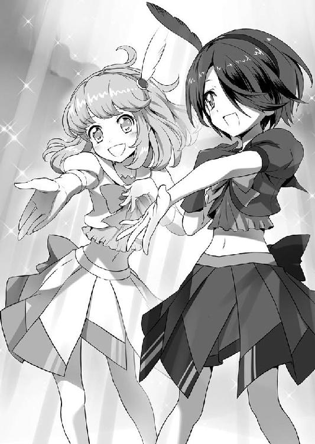

| 桜ノ杜ぶんこ アイドル八犬伝 南の島の太陽と星 | |
| 衆堂ジョオ | |
| (2014) | |
桜ノ杜ぶんこ
アイドル八犬伝
南の島の太陽と星
衆堂ジョオ

ＡＣＴ １ ー １ きせきのアイドル
「ほえーっ」
ライトの光芒が降り注ぐ中、ふわふわと柔らかく、また甘い、綿菓子のような声があたり一面に広がった。
場所は、幾人もの観客の視線が集まるクイズ番組のステージ上。今まさに、人気クイズ番組「クイズｄｅほえほえ」の収録が行われている真っ最中だった。
数拍の静寂のあと、興奮気味に司会進行役が声を張り上げる。
「正解っ！ 問題は、『牛乳を凝固させ、チーズを取り出したあとの液体をなんという？』。正解は『ホエー』でした!!」
小気味のいい調子で叫ぶと、合わせて華やかなファンファーレが会場に鳴り響いた。
「西園寺エリカちゃん、なんと奇跡の全問正解です!! あ、あの西園寺エリカちゃんが！ 二問ほど正解しただけでも驚きなのに、なんと！ なんと全問正解してしまいましたっ!! この世の終わりか!?」
ファンファーレに合わせてセットのライトがピカピカ光ったのに驚いて、正解者の少女がぴょん、と小さくジャンプした。彼女のトレード・マークであるプリューム（羽飾り）が揺れる。
抽選で収録会場に入った一般観客の人たちから、少女へ向けて暖かい笑いが漏れた。
少女は年の頃は十七ぐらいだが、童顔に背の低い容姿のせいでともすれば子どもに見える。
綺麗な髪は美しく輝き、非常に上品な顔つきをしているが、くりくりとよく動く目と大胆に大きく口を開けて作る明るい表情に自然と親しみが持てる。背丈もあって若干短い手足も、ほっそりとした四肢はしなやかな美しさを持っている。胸元はまだまだ心もとない発育ではあるけれど、それさえもまた、彼女に少女ならではの脆い芸術性を秘めた造型を与えていた。
「天変地異レベルの奇跡、地球の歴史で言えば恐竜が絶滅して哺乳類が栄えるレベルのものすごい現象を引き起こし、全問正解を果たしたエリカちゃん！ 彼女には、番組特製優勝トロフィーを贈呈！ さらに加えて！ 副賞として、幻の南国リゾート『アツクルーシ島』へ、ペアで一週間ご招待の旅行券が送られます!!」
司会者はあまりの興奮にマイクにつばきを飛ばしながら、なめらかな口調で続ける。
「しかしエリカちゃんが全問正解なんて、やはり人類の終焉か！ この世が終わる前に南国旅行を楽しんできてください！ とりあえずおめでとう、エリカちゃん!!」
商品贈呈には、正解の時よりさらに派手なファンファーレとライトの明滅、今度は舞い散る紙ふぶきまで付いてきた。カメラ向こうのスタッフさんの指示のもと、アシスタントの女の子がトロフィーと紙製の旅行券拡大見本を持って来てくれた。
旅行券拡大見本の思った以上の大きさに、受け取った少女は一歩、よろける。
「ほー、大きいです」
よいしょと少女が旅行券とトロフィーを掲げると、観客席から盛大な拍手が沸きあがった。
「キャーン！ エリカ、がんばっちゃった！」
少女がもう一回ジャンプする。
なめらかで美しい髪がふわりと跳ねて、空気を抱え込んだスカートが柔らかく膨らむ。大きな愛らしい瞳が動いて、観客席全体を一度見渡してから、顔全体で花が綻ぶような笑顔を輝かせた。
見えはしないが、確かに感じられるアイドルのオーラとでも言うべきものが観客たちの目を眩ませてしまう。
もう一度、観客席が沸きあがった。
「エリカちゃん、おめでとォーっ!!」
「かわいいよ！ エリカちゃんかわいいよ！」
「きゃーっ！ エリカちゃんとんだ！ はねた！」
「うわーッ、エリカちゃんマジ頭いい！ たぶん！」
「うおぉォォ！ えッ、えりァッ、うぉッ！ エリカちゃあ、エリかちゃアァぁぁぁあ゛ぁぁっ！」
興奮のあまり、もう人語をまともに発せない観客も居るほどだ。それほど、みんなはステージ上の少女に夢中だった。
それもそのはず。誰あろう、彼女こそが芸能界に彗星の如く現れた超大型アイドル、そう、我らが西園寺エリカなのだから！
司会者はエリカの優勝に驚きすぎて、いつもよりテンション高く、マイクの構えた位置も若干高めだ。
「おめでとうございます！ おめでとうございます！ 全問正解は当番組始まって以来の快挙です。まさに奇跡としかいいようがないですよ、エリカちゃん!!」
「ラッピー、なんだかエリカ、今日はとってもとってもツイてるの！」
そう、奇跡なのである。
もともとエリカは、こと頭脳に関しては幼い頃から相当にゆるゆるな女の子だった。
それこそ、天才の姉二人が生まれるときに、お母さんのおなかから脳のおみその素をエリカの分まで全部持って行ってしまった、と思われるくらいに。ほんとにいつも、ゆるゆるほえほえした頭のエリカなのだ。
しかしなんたること。
そのエリカが、毎週毎週、難問奇問を揃えてくることで知られる人気番組「クイズｄｅほえほえ」において、番組史上初の全問正解という快挙を果たすなど。
エリカ本人の感想どおり、これはまったくの幸運、驚異的な幸運の上にさらに幸運が積み重なり、超白熱したジェ○ガのように高く高くそびえてしまったとしか思えない。
「あ、あのエリカちゃんが、あの、『あの』ですよ!? あのエリカちゃんがクイズを!? 全問!? 正解ィ!? これを奇跡と言わずしてなんと言うのか!?」
いくらなんでも司会者は驚きすぎだが、それだけすごいことだと言うのは、視聴者にもよく伝わることだろう。
そんな周りの反応も気にせずに、エリカは自分の幸運を再確認しつつ、「うんうん！」とまたプリュームを揺らしながらジャンプする。
「さて！ 今回のこのエリカちゃんの奇跡、皆さんはどう思われますか!?」
司会者は今回の快挙について、他の各出演者に尋ねていく。
「わたしは明日は宝くじを買おうと思います！」
「天変地異に備えて、防災用品を買いそろえないと！」
「人類が滅亡しないように、お参りに行きましょう！」
酷い言われようである。
そんな反応をまったく意に介さず、エリカはクイックイッと腰をひねり、トロフィーを振り回して踊ったり回ったりする。
「すごい！ これほんとにエリカが貰っちゃっていいの？」
「そうです！ あなたが優勝です！ なぜかエリカちゃんが優勝です！」
「わーい、エリカうれしい」
「私もこの衝撃的な瞬間に立ち会えたことに感動です！」
そうこうするうちに番組の終了時間が迫ってきた。
画面下部では、右から左へスタッフロールが流れ始める。実際には「クイズｄｅほえほえ」は収録番組なのだが、生放送風の演出だ。
「おおっと、それではまもなくお別れの時間です。『クイズｄｅほえほえ』！ この番組は、『外宇宙まで羽ばたく西園寺グループ』と『最高級伝統和菓子・玉鹿屋』の提供でお送りしました！」
司会者がちらりとカメラ下にしゃがむスタッフさんの指示を確認して、頷く。もう時間がない。手馴れたトークで司会者は素早く番組を畳みに掛かった。
「えー、という訳でエリカちゃん。最後に今回の快挙について、何か一言〜......どうぞ!!」
差し向けられたマイクをそっと両手で包み、にこっとエリカが笑う。辺りにキラリキラめく星々が飛び散った。沸きに沸いていた会場が、〆の一言に期待して一瞬で静寂に包まれる。
「えっと、ここまでエリカが頑張れたのは、ファンの皆さんの応援があったからです！ だから、この奇跡はみんなの奇跡だと、エリカは思います」
それからエリカは一度ゆっくりと瞬きをして、マイクに愛らしい桜色の唇を近づけた。
「みんな！ ありがトーワ」
（ブツッ）
そこで、番組が終わる。エリカの言葉が途切れたのは、演出か、単なる時間切れかはわからない。
ＡＣＴ １ ー ２ アイドルの きかん
時は少々遡る。
エリカが「クイズｄｅほえほえ」に出場するしばらく前の、ある日常。
ここはエリカの私室。さすがは天下の大財閥、西園寺家の邸宅だけあって、エリカ専用の私室でもとんでもなく広い。十人以上が腰掛けられる大きな長テーブルはあるし、天井はエリカが縦に四人以上立てそうなほどに高い。壁には本格的なレンガ造りの暖炉まであった。
とはいえ、エリカにとっては子どもの頃から見慣れた部屋だ。暖炉の上の観葉植物は十回で足りないくらいひっくり返したし、ドレッサーには盛大にずっこけたエリカがおでこをぶつけた跡が残っている。柱にはエリカの成長を刻んだ傷もあった。
そんな自室に、新しいプロモーション・ビデオの収録を終えたエリカが帰って来ると、穏やかな笑顔が出迎えてくれた。
「お帰りなさい、お嬢さま」
この声を聞くと、エリカはそれだけでリラックスできる。
「ミホ、ただいまー」
エリカを迎えたのは、上品な物腰の中年女性だ。女性は会釈しながら、エリカからプリューム付きのリボンを受け取って手際よく畳む。
態度と同じく品の良い緑の服を着た彼女は、エリカの乳母であるミホ。エリカにとっては母親も同然の女性である。
ミホはさりげない仕草で、ポケットから取り出した絹のハンカチでエリカの額の汗をぬぐう。ポンポンと子どもを相手にするように汗をふき取られ、エリカははにかんだ。
「お嬢さま、最近はお仕事が随分と多いようですね。お嬢さまがアイドルとして順調に成功なさっているのは私としても大変喜ばしいことですけれど、お疲れではありませんか？」
「ぜーんぜん！ わたし、歌うこと、みんなを楽しませることが何より大好きだから♪」
クイっクイっと腰を捻り、楽しげに躍ってみせるエリカに、ミホが微笑む。
「ふふふ、お嬢さまは変わりませんね」
懐かしげな目が暖炉の上の写真を見た。そこには、幼い頃のエリカを抱き上げるミホが写っている。
日本有数の財閥である西園寺家に、三姉妹の末っ子として生まれたエリカ。
二人の姉は、若くして数十の会社を束ねる天才実業家の長女シズカ、博士号と数々の特許を持つ天才科学者の次女レイカ、二人とも子どもの頃から天才の枕詞を当たり前に冠されてきた才媛だ。
しかし、エリカといったらなーーーーーんにもできないミソッカス。強いて言うなら歌うのが好き、というぐらいのごくごく普通（？）の娘だった。
そんなエリカが高く険しいアイドルへの道を志すこととなったのは、このミホの言葉があったからこそなのである。
ミホは、少女としてのエリカの育て親であると同時に、アイドルとしてのエリカの産みの親のような存在でもあった。
子どもの頃から反抗期というものが一度も無かったエリカは、今も昔もミホのことが大好き。
エリカのトレードマークである、いつもステージ上のエリカを飾るプリュームをプレゼントしてくれたのも、ミホだ。だからステージ衣装は楽屋で衣装係の人に預けてきても、大事なプリューム付きリボンだけは身につけたまま、エリカは家まで帰ってくる。
そんな大切なミホを、エリカはつま先から頭のてっぺんまで、急にじろーっと眺めていく。それこそ舐めるように。
「んむ、んむむむ〜......、んむむむむむむん......？」
「なんです？ お嬢さま？」
むむん、むむむん、むむむむむんと仰け反って、視線がミホの頭を越したあたりでエリカは首を傾げた。
「どうしてどうして？ ミホはコックさんにでもなるの？」
帰って来てすぐ目について、ずっと気になっていたのである。ミホの頭の上にそびえ立つ真っ白なコック帽。フレンチの料理人がかぶるような、高い長いヤツだ。
ミホは料理がとっても上手ではあるけれど、普段着にコック帽、どう見ても、ヘンである。
「ああ、これですか？ お嬢さま」
エリカに問われると、ミホは穏やかに笑った。微笑みはミホの顔に皺を刻むが、皺の形一つ見ても優しいミホが積み重ねてきた暖かい時間がエリカには見えるようだ。
「うん。エリカ、とっても気になっちゃう」
「ふふふ、これはですね......」
ミホにしては珍しく、勿体をつけるようにコック帽に触れる。素直なエリカは、童女のように興味しんしんでミホの答えを待った。
「今では、私以外にもエリカさまのお世話をする人たちが、大変多くなりましたので」
エリカが単なる歌好き少女から一念発起し、ついにアイドルの座にまでたどり着くことができたのは、予言に従い集めた七人の仲間の力があったからこそだ。ミホが言ってるのは彼女らのことだろう。
アイドルという立場である以上、もちろん七人の仲間たちのほかにも番組のスタッフさんや、収録スタジオの皆さん、他にも多くの人々がエリカを支えている。そういった人々のことも、ミホの言葉には含まれているかもしれない。
「だから私は、自分は自分にできることでお嬢さまを支えようと思ったのです。とりあえずは、料理の腕を振るおうと。私にできるのは、お嬢さまの帰ってくる家でいつも待ち、穏やかな時間を守ることだけですから」
聞いて、エリカはぽんと手を打つ。
「なるほど〜！ それでコック帽なのね」
「はい。まずは形から、ということで」
「エリカ、ミホの作ってくれるごはん大好き」
西園寺家には専属のコックだって何人も居るが、気取ったコース料理の晩餐よりもミホの作ってくれる大皿の家庭料理がエリカは好きだった。
「じゃあ、ミホがすごいコックさんになれるように、エリカが応援の歌を歌ってあげる」
「まぁ、ほんとですか？ 嬉しいです、お嬢さま」
さっきまでスタジオで収録をしていたというのに、またエリカは歌おうとする。本当に歌が好きなのだ。
エリカの「ミホがコックさんになれるように」という応援は的外れなのだが、ミホにはエリカの気持ちと、エリカが歌をこんなにも愛していることが嬉しくてたまらなかった。
手の平で空気のマイクを掴むと、エリカはノリノリで踊りながら歌い出す。
「♪
おいしいごはんが 食べたいの
もりもりホクホク おいしいの
ながーい帽子で 中華にフレンチ 懐石りょうり
みんなもわたしも 食べざかり
♪」
（もりもりホクホクのうた：仮題）
聞くものを皆、感動させ、涙さえ流させるというミラクル・ボイス。エリカの歌声を、むしろミホは微笑ましい思いで聞く。
柱に残されたエリカの成長記録。エリカの身長がまだあのソファの背よりも低かった頃から、ミホはエリカの歌を聞いてきたのだ。エリカの一番古いファンであるミホは、エリカがこんなにも立派にアイドルとして成長したことが何よりの喜びである。
楽しく明るく歌い終えると、エリカはぺこりと頭を下げてからミホに微笑んだ。
「ミホ、がんばってね！ にこっ、にこにこっ」
「ふふ、楽しみにしていてください。お嬢さま」
エリカが輝かんばかりの笑顔を見せると、鮮烈な春の曙光を見たようにミホは目を細める。
ＡＣＴ １ ー ３ ８けんし そろいぶみ
ミホが料理の支度に部屋を出て行ったあと、ほどなくしてどやどやと部屋の外が騒がしくなった。
みんなが帰って来た！ ぱっとエリカの顔が輝く。
「おかえり！」
勢い良くエリカがドアを開くと、そこには心強い七人の仲間が立っている。
エリカがただの少女からアイドルになるまでの艱難辛苦（？）の道のりを支えた、七人の仲間たち。七人にエリカを加えて、誰が呼んだか名づけたか、ズラリ並んだアイドル八犬士だ。
彼女らの支えがあってはじめて、今のエリカがあるのは間違いない。
「今回の仕事も素晴らしかったわ。エリカさん。次はアルバム予約特典用の特別ＰＶを収録して、一部をネット公開して宣伝に使いましょう」
「お答えいたします。エリカさんの輝きは、ますます増していくでしょう」
「近頃は出待ちも増えて、追い払うのが面倒で仕方ねぇぜ！」
「なんでぇ、いつもお祭りみたいでいいじゃねえか！」
「こう言っては何だけど、もっとグッズ展開も広げたらどうかしら」
「せやな、まだソーシャルゲーとかにも乗っかれるで。エリカこれくしょんや！」
「他の芸能人さんとのコラボも〜、もっと増やしてほしいですね〜」
それぞれに個性溢れる八人が勢ぞろいで大テーブルについて、しばらく仕事の話や雑談を続けて。やがてそこに、ミホが新たに勉強したという手料理を持ってくる。
「皆さんお揃いですね。冷めるといけない料理なので、ちょうどよろしゅうございました」
まるで高級ホテルの食事のように、銀色に輝くサービスワゴンを押して長テーブル上にミホが料理を並べていく。
勿体つけたボウル状の覆いが、さらに高級料理感を盛り上げてくれる。もともと料理の得意なミホが謎のコック帽まで被って、この上どんな技を磨いてきたというのだろう。
八人の興味も、自然、食事のフタをつまんだミホの指先に集まった。
「さぁさ、皆さん。沢山食べて、夕方のお仕事も頑張ってくださいね」
「なにかななにかな、お昼ご飯、とっても楽しみなの」
わくわく顔のエリカの前、ミホが食事のカバーを取ろうとすると、仲間の一人の黒髪、黒い服の少女がぴっ、と手を差し伸べて制した。
「お答えいたします。メインディッシュはギリシャ料理の『ムサカ』でしょう」
「ギリシャのむささびさん？」
「ムササビではありません。お答えいたします、ムサカとは、おナスとミンチを二種のソースでグラタンのように仕立てた料理の名前です」
「わぁ〜！ なんだかわからないけど、おいしそう」
やたらめったらと長い長いコック帽を揺らし、微笑みながらミホがフタを開ける。すると、果たして黒髪少女の言葉どおり、大きな陶器の鍋で焼き上げられたムサカがふわりと湯気を上げた。焼けたチーズの濃厚な香りが食欲をそそる。
エリカのおくちから、テレビには映せないほどのよだれが垂れそうになった。
「そのとおりです。さすがですね、ホシミさん」
「い、いえ......ふと、見えただけなので......」
見事メニューを言い当てたのは、真実ホシミ。アイドル八犬士で最初にエリカの仲間に加わった少女である。
歳の頃はエリカと同じ。どこと無く異国的な雰囲気を漂わせた黒い服に身を包む、ショートカットの少女だ。垂らした前髪が片目を隠しているのが、より一層彼女に神秘的な印象を与えている。
八犬士には全員なんらかの卓抜した才能を持つ女性が選ばれているが、中でも彼女の力は驚異的だ。なんと、ホシミはその名のとおり、星を読み未来を予言する力を有しているのである。
予言者、真実ホシミ。彼女の「お答えいたします」は、いつだってエリカのアイドルへの道に確実に貢献してきた。その頼もしさは、これからも変わらないだろう。
とはいえ普段からなんでもかんでも自由自在に未来がわかるわけではないようで、「星に囲まれたときにこそ、もっとも霊力が高まる」というのが本人の談。
この星というのもわりといい加減で、プラネタリウムの星でも、頭を殴られたときのマンガ的表現の星でもどうにかなってしまう。
今回はおそらくテレビのエリカがスマイルしたとき、キラリと飛び散ったイメージ上の星がホシミの予言を導いたのだろう。
ホシミの向こう側には、やはり同い年程度の眼鏡の女の子が座っていた。
「こう言ってはなんだけど、私の家は和食ばかりだから味の想像がつかないわ。とってもおいしそうだけれど」
料理を眺めて言う。「こう言ってはなんだけど」は単に彼女の口癖で、深い意味はない。当然そこに批判的なニュアンスはない。
彼女は玉鹿ヤヨイ。二人目の仲間で、エリカやホシミと同い年だが、天才的な金儲けの才能を持つ。
眼鏡に白衣を羽織っていて、一見すると科学者キャラなの？という風な装いだが、まったくそんなことはない。むしろお金以外のことはすべて、基本的にさっぱりだと本人が言っている。
そんな資金確保担当のヤヨイは、昔は株取引専門だったようだが、最近はネットを介して外貨や先物にも手を広げ、ますます稼ぎを上げているようだ。
エリカ・プロジェクトが常に攻撃的にアクティブで居られるのは、彼女の稼ぎ出す潤沢な資金あればこそである。
ヤヨイが無尽蔵に稼ぎ出す資金は、ついにエリカを売り出すだけの専用チャンネルを放映する、ＬＥＣ放送（ＬＯＶＥ・ＥＲＩＫＡ・ＣＨＡＮＮＥＬ）専用の人工衛星まで買い取るに至っている。現在もＬＥＣ衛星は地球の軌道上を周っており、エリカの魅力だけを発信し続けていた。
ヤヨイのさらに奥の席では、ボーイッシュな少女が早くもムサカを一口味見していた。スプーンの先ごと食べるような大口だ。
「おっ、これはイケるで。ミホさん、これイケるで！ ギリシャも侮れんなぁ。ムサカやったっけ？ あとで検索せなな。うん、ええわ、このチーズの濃厚な風味とナスに染み込んだ油の甘み。うん、ええわー」
青山ミサオは関西出身の凄腕ハッカーで、エリカの三人目の仲間だ。
年頃の女の子ながら髪を短く刈り、眼鏡を掛けた姿は一見すると少年にも見えかねない。後ろ毛を伸ばして束ねた部分にだけ、かすかに彼女の少女の部分が見え隠れしている。
彼女はコンピュータ全般の扱いに熟達しており、エリカ・プロジェクトの有する放送用人工衛星ＬＥＣ衛星は、彼女の自作コードによって制御されているらしい。
その気になれば、ミサオは衛星からジャミング電波を発し一時的に日本周辺を情報停滞による混乱に叩き落とすことさえできるというが、実際のところは試そうとしないので定かではない。
ミサオにとってＰＣ技術は他人の秘密を暴き見るものではなく、システムを攻撃して混乱を招くものでもない。ただ、彼女は無限の広がりを持つ非常に複雑なパズルとして、データの海を愛しているのだ。
ちなみにヤヨイとは眼鏡同士、中学時代からの友人である。二人の間には、金額とマシン語、数値を愛するぐらいしか共通点はない。
「あら、ギリシャで食べたものよりおいしいわね。ミホさんを講師に、アイドル＋料理番組というコンセプト、行けるかも」
ミサオの隣に座るのは、四人目の仲間、茶畑ヤチヨ。
正確な年齢はエリカも聞いたことがないが、彼女以外だいたいみな年齢の近い八人の仲間の年長で、唯一の大人の女性である。
やたらと肩幅が広く骨太な彼女だが、別にその特技は肉体派系というわけではない。少なくとも本人はそう言っている。
脱げば相当なマッスルなのでは、とずっとエリカは感じているのだが、それも違うらしい。トレーニングをしている姿も見たことが無い。
実際のところ、彼女の役割は前線や肉体派ではなく、むしろもっとも裏方に近いポジション、プロデュースの達人だ。
エリカと知り合うより前から芸能界で彼女を知らなきゃモグリというほどのプロで、チケット売り切れ続出のショー・イベント、「サイバー・ゴング・ショー」をプロデュースするなど、歴戦のベテランである。その凄腕プロデューサー・ヤチヨは、エリカの才能に光るものを感じて仲間に加わったのだ。
エリカ・プロジェクトは彼女がすべての指揮を執っていると言っても過言ではなかろう。表舞台に立つエリカを除けば、チームの中心的存在だ。
八犬士それぞれの特殊な才能がいかに優れていても、制御し、方向を定めるヤチヨの知性が無ければ烏合の衆であっただろう。それほどに彼女は優秀なプロデューサーなのだ。だから、決して肉体派マッチョ女ではない。
ヤチヨの向かいの席では、額にきりりと鉢巻を巻き法被を着た少女、江戸川ムラサキが、ナイフとフォークですくい上げたムサカを危うく落っことしそうになっていた。
「おっとと！ ミホさん、箸は無ぇのかい？ 『ふぉーく』やら『ないふ』やら、あちゃらの道具ってぇのはどうにも使いにくくってかなわねぇや！」
威勢のいい江戸っ子口調と、法被の合わせからチラリと覗く胸元のサラシ巻き。いつ見ても彼女はお祭りのような風体をしている。
五人目の仲間である彼女は、おおよそアイドルを支える人材としては場違いに思える、花火職人である。たしかに花火職人は直接的にはエリカのアイドルとしての仕事のサポートはできないが、荒事や花火師ならではの独特の技術、知識、そういったもので、確かに彼女は自分の技術でエリカ・プロジェクトに貢献してきている。
アイドルのサポートとしては妙な立場であるムラサキだが、その本職である花火職人としての腕は折り紙付きだ。エリカたちと同じ年頃にして、老練の職人たちも束ねる棟梁。日本の花火師とそれを志す者たちの中に、彼女の名を知らないものは居ない。
現在では野外ライブでの演出に彼女の手が入るほか、さらに近頃は花火から手を広げ、会場ライブ用のレーザー演出なども勉強しているらしい。
才覚すぐれた彼女のこと、いずれ彼女の作り出すまったく新しい煌びやかなステージ演出に、世界が魅了される日がやって来るに違いない。
そんな洋食のカトラリーに苦戦するムラサキに、噛み付くように言うのは、隣の海道ミドリだ。
「てめえフォークも使えねえのかよ。オレが見本を見せてやるよ、オラッ！ こうやって刺せばいいんだよ！ オラッ！」
言いつつ、ガツガツ豪快にムサカにフォークを突き立てる。乱暴にやりすぎて、ソースがテーブルにちょっぴり飛び散った。
豪快さ、口調の乱暴さも、彼女の素性を考えれば当然のもの。彼女はムラサキよりもさらにプロジェクト内でのポジションが判らない存在だ。なんと彼女はとある関東暴走族グループのリーダーなのである。アイドルのサポートメンバーに暴走族のリーダーが入っているとは、なんという奇縁か。
ミドリは、ある時川原でムラサキの部下たちとミドリの手下たちが大ゲンカをやらかした時、通りがかったエリカの感動的な歌でなだめられ、ムラサキ共々に仲間に加わった六人目である。
ミドリは主に手下たちを率いて荒事を担当するが、バイクの腕もかなりのもので、レーサーも慄くほどのスピード、急峻な山道すら野生のヤギのようにぶっ飛ばす技術、一日二十四時間をギリギリのスケジュールでこなしていくスーパー・アイドルのエリカにとって、彼女のそうしたバイク・テクニックも、時として非常に頼りになる。
過去には彼女なくして成立し得なかった、驚異的なペースの強行ライブツアーも行われたのだ。
のーてんきな顔できょろきょろテーブルを見回すのは、ホシミの向かいに座る、一枝モモミだ。
「ムサカですか〜。でもあっちのサラダもおいしそうですよ〜、あ、そっちのマリネも〜。そっちのはなんですか〜？」
トレーナーの胸に大きく「（だ）」と書かれているのと、いつも背負っているリュックが彼女のトレードマーク。モモミはいわゆる芸能界オタクで、あっちこっちのアイドルのおっかけをやっており、隙あらばどんな大物芸能人相手にも大胆にサインをねだる。
実のところモモミは、エリカが「七人そろえばアイドルになれるんでしょ？」と予言を適当に解釈し、その場に居合わせたモモミに決めてしまったという、わりといい加減な最後の仲間であった。
エリカの人選は本当に単なる数合わせのなんとなくな人選だったのだが、幸いにも彼女の芸能界知識は一級だった。それこそ特別な能力と言っていいほどに。
新旧著名無名ありとあらゆる芸能人の知識がメモすらなしにするすると出てくる生き字引的な知識に加えて、芸能人の控え室によく忍び込んでいた過去から、妙な隠密潜入技術までも合わせ持つ。
アイドルとして進むエリカがテレビ番組などで複数の芸能人と同席するとき、収録直前のわずかな時間でコミュニケーションのコツや、相手にとっての地雷をアドバイスできる彼女の知識は、なかなかに有難い存在と言えよう。
そしてお誕生日席に座り、満面の笑顔でミホの手料理を頬張るのは、この座の中心人物たる、スーパー・アイドル西園寺エリカだ。
「う〜ん！ どれも、これも、とってもとってもおいしくて、エリカしあわせ♪」
彼女を合わせて、しめて八人！
「ガッツリ系ってヤツだな。オレもこういうの好きだぜ」
ミドリがまたフォークで皿を割る勢いでムサカを突き刺す。隣のムラサキは、結局お箸を受け取ってサラダを食べる。
「ちーとチーズがねっちゃねっちゃするんで、このサッパリしたサラダがついてるのが嬉しいねえ」
「硬めのパンと良く合うように味が作られてるとおもうわ」
二人のやりとりを見つつ、表面をカリっと直火で焼かれたバゲットを、こぼれる粉を手で受けながら食べるのはヤヨイだ。
一方、モモミは食べたりキョロキョロしたり喋ったりと忙しい。
「ムサカが人を襲うＺ級ホラー映画を思い出します〜」
「なんやねんそれ!? ホンマに向こうはわけわからんコメディホラー作りよるな！」
根っから関西人のミサオは、食べてる途中でも条件反射的にツッコミを入れるのを止められない。
年長のヤチヨは逞しい腕でナプキンを手に口元を拭いつつ、モモミの変な知識に興味を示す。
「映画撮影の規模で、どうやってそんな無茶な企画を通すのかは非常に興味があるわね......」
「お答えいたします。はじめてなのに、どこか懐かしい味です」
そんな中、マイペースにもむもむとムサカを食べるホシミ。
みんなを見渡して、エリカもにっこり微笑んだ。ほっぺたにチーズが少しついてるのはご愛嬌だ。
「みんなもおいしいって、ミホ！」
「ありがとうございます。お嬢さま、皆さん」
エリカの言葉にミホが深く頭を下げる。和気藹々とした午後のひと時。
これがエリカを支える仲間たち、アイドル八犬士、たぶん、なにより頼もしいチームである！
今はもう居ないエリカの祖母、西園寺家の長老トミコが死期を悟り、己の跡取りを決めるべく、三姉妹に言った言葉。
「これから三ヶ月の間、全力をあげて自分の名をあげる仕事をしてみせよ」
このときから無数の困難を七人の仲間とともに乗り越えて、ついにエリカはアイドルへの大きな一歩を踏み出した。
踏み越えた障害の中には、全世界のイロモノ化を企む暗黒イロモノ大王という怖ろしい存在との命を賭けた戦いさえあった。それを超えて、エリカはようやくアイドルとしてデビューし、光り輝くステージに立ったのだ。
けれど、アイドルとはデビューしたそこがゴール地点であるはずもない。まだそこはようやくスタート地点、ようやく最初のラインに立つことができたに過ぎないのだ。
アイドル。人々に希望と喜びをもたらす存在であり、皆のあこがれ！ そこには当然沢山のライバルがいる。
さまざまなカツドウをしてライブなんかをマスターした他のアイドルたちにも、エリカは負けてはいられない。近頃では変身して戦うアイドルなんていうのもいるそうで、エリカはこれからまだまだ頑張らないといけないのだ！
頂点に立つことはエリカの目標ではない。しかし、エリカは誰よりも多くの人に、多くの喜びを与えたいのだから。ただのアイドルたちの中の一人ではいられない。他の誰とも違う、最高のアイドルにならなければ！
本日はそんなエリカ・プロジェクトのさらなる飛躍を目指して、今後の作戦会議もかねての勢ぞろいの食事会であった。
ここの所は、エリカのニューシングルの収録、シングルおよびアルバムジャケットの撮影、タイアップ番組へのチョイ出演、さらに今日のＰＶ撮影と、連続でエリカの仕事が入っていた。夕方からまだ仕事はあるものの、全員揃ってランチを取れる久しぶりの時間だ。会話は当然はずむ。
「ホシミ、なんぞいいプロジェクトの道しるべはないんか？」
「お答えいたします。わかりません」
「わからないのかよ!? ......けっ、ぶッ飛ばして行きゃいいのよ！ アイドルもバイクも一緒だろ？」
「こう言ってはなんだけど、株と同じで勝負ごとは退くことも大事だと思うの」
「あっしはそういうまだるっこしいのは、どーにも苦手でねぇ！ もっとこう、花火みたいにドドン！と行きませんかい」
「えっと〜、過去のトップアイドルだと、こういう時は〜思い切ったイメチェンをしたりとか、いっそわざとスキャンダルを出したりとかですね〜」
「エリカ、このムサカってお料理だいすき！ おいしい！」
「お答えいたします。ナスのとろとろがとてもいい舌触りです」
「そうだ！ 火事とケンカは江戸の花って言いやすし、もうここらで誰かとケンカしてみりゃ！」
「エリカ、お花だいすき！ きれい！」
「そりゃ確かにスキャンダルかもしれんけど、アイドルがケンカはなんぼなんでもアカンやろ!?」
「いや〜、最近は炎上しょうほう、みたいなのもあるかもしれませんよ〜？」
「そんじゃあねちねちとコネばっか鬱陶しいテレビ局に火炎瓶でも投げ込んでやれ！ オラッ、火事とケンカ両方だぜ！」
「こう言ってはなんだけど、それはただのテロよ」
八方から料理を食い荒らしながら、さまざまな放言が飛び交う。
しばらく無言で皆の話を聞いていた年長のヤチヨがパンパンと手を叩くと、一息に座が静かになる。
さすがは年長の貫禄、そして謎の肩幅の広さ。暴走族のミドリさえ大人しくヤチヨの話を聞こうとする。
テーブルが落ち着いたのを確認すると、ヤチヨは努めて勿体つけた風を見せず、ナチュラルに話を切り出した。
「みんなの自由な意見が聞きたくてわざと黙っていたのだけれど、参考になる意見もチラホラあったわ。それはそれとして」
何気ない所作で、バッグからすでに用意していた書類を出してくる。
「エリカさん、新しい仕事よ」
「わーっ」
「これよ！」
ヤチヨがどん、と書類を突き出すと、芸能マニアのモモミがおおおお......っと仰け反り気味に反応した。
「こ、これはトップクラスの有名人しか出られない、超、超々人気クイズ番組ではないですかー！」
モモミの発言で、遅れて事の大きさを理解した皆がどよめく。大抵のことには動じないエリカも、おどろいてぷるぷる指を震わせながらヤチヨの書類を指差した。
「これ......、エリカが出るの？」
「そうよ、これがあなたの芸能界トップへと繋がる新たな第一歩になるわ」
自信満々に頷くヤチヨ。彼女の自信は、プロデュースの局面において一度も躓いたことがない。茶畑ヤチヨが自信を持って推す企画。それは、芸能界では未来の大成功と同義ですらあった。
ヤチヨの手に握られた書類には、『クイズｄｅほえほえ』と番組タイトルがプリントされている。テレビ文化が低迷する現代日本においてさえ、知らぬもののない芸能界最高レベルのステージ、超人気番組である。
「すごいじゃないですか。がんばってください！ お嬢さま」
「うん！ エリカ、がんばっちゃう！」
エリカは元気よく頷き、ミホと、それからみんなに最高の笑顔を見せた。仲間たちも、その笑顔に呼応してぐっと拳を握る。
エリカ・プロジェクトはまだまだ勢いが衰えることを知らない！
ＡＣＴ ２ ー １ ごくさいしきの バカンス
滑走路の上でゆらゆらと陽炎が踊り、頭上に目線を上げれば、低音と高音を織り交ぜた響きを後ろに引きながら、旅客機が青一色の空を彼方へと飛び去っていく。
気温は三十度を軽く超えるものの、温帯モンスーン気候の日本とは違い、空気がカラっとして不快感がない。
あたりには南国情緒溢れる原色の花が咲き乱れ、鮮やかすぎる緑は目に痛いほどだ。天球を覆う快晴はあまりに青く深く、空を過ぎる一羽の鳥さえ色彩見本のように華やかな色でその身を飾っている。
南東から吹く貿易風が、エリカのスカートをふわりと膨らませた。
「わーーっ、お空がどこまでも高くて、エリカ、吸い込まれちゃいそう！」
島に降り立つや走り出し、くるくる回転してせいいっぱい背伸びをしたあと、その身を反らしてエリカが深呼吸する。
「みんなで来て、正解だったみたいね」
その様を眺めたあと、みんなもエリカを微笑ましく見ていたことを確認すると、ヤチヨは満足げに頷いた。
あれから、あっ！......という間に時は流れて、エリカは南国リゾート『アツクルーシ島』に来ていた。
クイズ副賞の旅行券はペアチケットだが、そこはエリカ・プロジェクトにはヤヨイの稼ぎ出した莫大な資産がまだまだある。エリカの姉、シズカとレイカの薦めもあって、これはちょうど良い機会、と思い切って全員で休暇を取り、ミホを含む九人で連れ立って南国のリゾート島へとはるばる羽を伸ばしにやってきたのだ。
「こう言ってはなんだけど、私、最初はこういう暑苦しいところは苦手かなと思っていたんだけど」
「でも、来てみたらどうやったんや？ ほれ言うてみ、言うてみ」
「聞くまでもねぇや！ このみんなの笑顔を見りゃあ、一目瞭然ってやつでぇ」
友人同士のヤヨイとミサオのやりとりに、江戸っ子ムラサキがクチバシをつっこむ。
その向こうでは、モモミとミドリが一面に広がる緑を呆然と眺めていた。
「ほわ〜、ここには芸能人さんはいないけど、キレイな景色ですね〜」
「そうだな。オレのマシンで海岸線をぶっとばしたいぜ......！」
眩しそうに木陰に引っ込んでいたホシミも、ようやく強烈な日差しの下に出る。六角形を連ねた光線に、片手を庇にして目を細めた。
みんな楽しそうにしてる南国の明るい光の中、ホシミは少しまだ慣れない足取りで、とことこと歩幅も小さくエリカに歩み寄る。
「エリカ、こんなキレイなところに来れて、とってもとっても幸せ！ ホシミちゃんは、どう？」
隣へとたどり着く前にエリカに問いかけられて、そこから先の一歩を踏み出せなくなる。
その、足りない数歩をエリカが駆け寄ってきてくれた。エリカとホシミはまるで姉妹のように、緑の中二人寄り添う。
「エリカ、さん」
「なに？ ホシミちゃん」
お答えいたします、が口癖のホシミが、自分から語るのは珍しい。慣れないことにまごつきならがもホシミは自分の言葉を語る。エリカは、ただ笑顔でホシミの言葉を待つ。
「お......お答えします、ここの所、エリカさんは忙しくなって仕事ばっかりだったので......、こういう機会にご一緒できて......、よかったな、と......」
「わたしと一緒で嬉しいってこと？ エリカもうれしい！」
南国太陽の照りつける暑さも構わず、エリカがホシミにぎゅっと抱きついた。
ここでエリカのミラクル・スマイル。世界の頬を緩ませたという輝く笑顔、まるで光子そのものが弾けたみたいだ。
間近でエリカの笑顔の衝撃を受け、クールなホシミも頬を染めて、思わず少し目を逸らした。
「そ......あの......、はい............」
顔を背けたホシミにエリカは少し首を傾げたけれど、その俯いて頷いた顔が確かに嬉しそうに口元を綻ばせていて、思わず嬉しくなってしまった。
もう一度、エリカはホシミに強く抱きつく。あまりの勢いに二人がくるくると回った。
「ふふ。エリカさんにホシミさん、ついて早々ダンスでも始めるつもり？」
「いよっ、元気いいねぇ！」
「ホントに仲いいですよね〜、あの二人」
キラキラと輝く海を背景に、踊るように回る二人を仲間たちが眩しそうに見る。
「ちょ、ちょっとエリカさん。エリカさんの服が皺になってしまいます......！」
「大丈夫よ、今回のバカンスはひたすら楽しむのが優先なんだから！ だから、ホシミちゃんもいっぱい一緒に楽しもう、ね！」
照れから口にしたホシミのささやかな抵抗も、人なつっこいエリカにはのれんに腕押し。これ以上ないくらい楽しげな言葉が返ってきて、もはやホシミは頼りなく頷くことしかできなかった。
「お、お答えいたします。はい......ご一緒、いたします」
ほんのりと頬を染めながらそう言ったホシミが、いつになく柔らかな笑みを浮かべていて。エリカは、この島で、最高のバカンスが始まったことを知った。
ＡＣＴ ２ ー ２ おうごんの うみ
南国の空気、ファースト・インプレッションをいっぱいに楽しんだあとは、エリカたちはヤチヨに率いられ、速やかに島一番のホテル「ゴールデン・サウスシー」へのチェック・インを済ませた。
三階に位置する部屋は簡素ではあるが清潔感が漂っていて、さすがにテレビ局が賞品として出す旅行券だけはある、といえよう。
「わぁー、ステキな部屋ね！ わくわくしちゃう」
「そうですね。それにしても、お嬢さまと旅行なんてどれだけぶりでしょう」
「ん〜、おもいだせない！」
綺麗にメイクされたベッドは二つ。ここはエリカとミホの部屋で、残りのメンバーは三階の続き部屋に二人ずつ別れて部屋に泊まり、ヤチヨ、ホシミ、モモミだけはスイートを使って三人部屋となる。みんなで部屋に集まるときは、ヤチヨの部屋に集まるだろうという配慮だ。
エリカはベッドをぽんぽんと叩き、ヘッドボードに飾られた民芸品らしい金属製の人形に目をやる。
「こんにちは、人形さん」
やけに細長い顔の人形はもちろん答えたりしないが、虚ろに空いた目に三日月形の口が作る表情は、エリカを歓迎しているように見えた。
この三階という高さも絶妙だ。きっと夕暮れ時には、窓からの景色はホテルの名のとおり、黄金の南の海でいっぱいになるのだろう。
幻のリゾート地という肩書きは伊達ではなく、まだまだ一般にはどうにか名前が知られ始めただけ、というこのアツクルーシ島。ほとんどのホテルは部屋に得体の知れない虫があらわれ、壁にひび割れは当然。うっかり胃腸薬を忘れると、初日の食事で食中毒にダウンするハメになるという。
島の北端付近に位置するこの「ゴールデン・サウスシー」は、そういったお客のストレスのすべてを排除し、安全を保障できている、この島で本当に特別なホテル。
ちなみにこれらはヤチヨが仕入れてきた事前情報だ。プロデュースの達人は、用意の周到さが違う。
一旦、各部屋でこの南国気候に合わせて全員が着替えると、さらなる島の魅力を探るべく、エリカたちは繰り出すことになっていた。いよいよバカンスの本番だ。
さぁ出発！という段になって、一歩退いたミホがエリカに頭を下げる。
「行ってらっしゃいませ、お嬢さま」
「あれ、ミホは行かないの？」
エリカが疑問を述べて、両手の人差し指で頭をくりくりと指差し、頭からぽふっと煙を出す。
「私はせっかくなので、ホテルの方とお話して現地のお料理を学んでみようと思います。明日はお嬢さまとご一緒しますので」
すると、ミホは答えて窓の外のギラギラした光に眩しそうに目を眇めた。
「ミホ、勉強ねっしんなんだ！ じゃあ、エリカたちはいってきまーす！」
「はい、お嬢さま。どうぞ、楽しんでらっしゃってくださいませ」
「うん！ 南国〜、それはぬくいのよ〜♪ 海が、キラキラ〜♪」
この島の空気のようにカラっとした態度で、エリカはミホに手を振り、鼻歌まじりにみんなのもとへ再び歩き出した。
島の中を観光だ、探検だ。
ファンのみんなのために歌うのはもちろん楽しいけれど、誰の目も無いところで自由に遊ぶのもやっぱり楽しい。エリカはまだまだ無邪気な少女だった。
いくつかの手近な観光スポットを巡って、一休み。フルーツで小腹を満たして、再びみんなは未知と戯れる遊びへと出発する。
「ヤチヨさん、一体次はどっちへ行くんでぇ？」
江戸っ子ムラサキが腕組みしたまま、ヤチヨに問うた。
ヤチヨは手にしたパラミツの大きな実を左腕で軽々と支えつつも、空いた右手でメモを繰る。
ちなみにパラミツとは別名ジャックフルーツと言って、世界最大の果実。重さは実に10㎏〜最大50㎏にも達する。本当にこの人は肉体派じゃないんだろうか。
「そうね、秘伝の草パイプを吸って催眠術を掛けるシャーマンというのはどうかしら」
「お答えいたします。それはとても面白そうです」
オカルト能力同士惹かれるものがあるのか、ホシミが大きく身を乗り出した。ヤチヨのメモに、エリカとモモミも後ろから首を突っ込む。
「こう言ってはなんだけど、なかなか楽しめそうね。ホシミちゃんと同じく霊媒もできるそうだし、昔の人同士の幻の対談とか、どう？」
「秀吉と光秀とか向かい合わせて、お前なんで謀反してん言うてみ!? 夏の陣と冬の陣ほんまキツかったんやで、とかな！」
「面白そうね！ 一番最初のアイドルさんとか、呼び出したりもできるのかなあ」
エリカが疑問を口にすると、すばやくアイドルマニアのモモミが答える。
「一番最初のアイドルさんですか〜！ 日本だと〜美空ヘバリさんか、南シオリさん辺りですかね〜！」
「さすが詳しいわね、モモミさん」
「日本で初めてアイドル的ポジションに立ったと言えるのは美空ヘバリさんですが、そもそも昔はスターという呼称が使われていた日本の芸能界で、アイドルという語が初めて用いられたのはですね〜......」
ただのマニアとは侮れない、モモミの芸能史トークが始まる。
が、エリカはよくわからないのでとりあえずサラリと聞き流した。
「じゃあー、次いってみよー！」
二台に分かれて乗ったタクシーを降りると、前の車の運転手が窓を開けてヤヨイに言った。
「ありがとセンクス！ ヤヨーイサン、あんた、金持ちなるよ！ リッチーガール！」
「はいはい。こう言っては何だけど、観光客相手のぼったくりはほどほどにね」
「ＨＡＨＡＨＡァ！」
眼鏡を直しつつ、ヤヨイが追い払うようにひらひらと運転手に手を振ると、二台のタクシーは笑い声を後に残して島の未舗装路を走り去っていった。
二人の運転手は兄弟で、共にエリカにも負けないほどの最高の笑顔で最高の代金を取り立てようとしたのだが、相手が悪かった。なにしろお金を扱わせれば右に出るもののないヤヨイである。一介のタクシー運転手では、どうにも敵わなかったようだ。
観光ブームの兆しのせいか、こういうボッタクリも島で出始めているようだが、ボッタクリを失敗してもサワヤカに去っていくのがこの島の人たちのいい所である。優秀な金銭管理役を連れていれば何の問題もない。
「それで、シャーマンさんの小屋は......ここからどっちなのかしら？ ここまでしかガイドには無かったのよ」
「随分と大雑把なガイドだな。さっきの運転手野郎も知らなかったのかよ」
ミドリの問いにヤチヨは首を振る。
ホテルから随分離れた島の西端にやってきたエリカたち一行。このあたりに催眠術を得意とするシャーマンの小屋があるというが、草原と森ばかりの風景に、藁葺き屋根の小さな小屋が立ち並んでいるばかりだ。こんなところにガイドに載るような観光スポットが本当にあるのだろうか。
「う〜ん〜、どこでしょう〜」
「こうなりゃ片っ端から聞いて行くしかねぇや。まずはそこの小屋の人に──」
せっかちなムラサキが手近な民家に乗り込もうとしたところで、ホシミが何かに気付いてひとつの小屋を指差した。
「やや。エリカさん、おそらくあちらに見える小屋がそうではないですか」
「ほんとだ！ 小さい看板に『チャーハン』って書いてある！」
「いえ、シャーマンです......」
ともかく、その小屋で間違いは無さそうだ。一同、頷き合い、ヤチヨも太い首で頷いたのを確認すると、『チャーハン』の小屋にエリカ一行は乗り込むこととした。
扉さえ無い戸口をくぐり、薄暗い小屋の中に入る。もとより電灯はなく、明かり取りの窓も無いせいで室内に光が差さないのだ。
「あの、チャーハ......じゃなかった、シャーマンさん」
「コ......ッ、コッコッコッ......、コ......ッ」
薄暗く狭い部屋の中には、シャーマンが吸うというパイプの残り香か、煙たい中に不思議な香りの混じった匂いが残っている。煙を片手で払いながら踏み込むと、カラフルな民族衣装を着た浅黒い肌の老人が立っていた。老人は小柄で、背丈はエリカよりも低い。
控えめに話しかけたエリカだが、シャーマンの老人はまるで鳥のように......というよりもニワトリそのものの様子で、首を小刻みに前後に振りながら中腰で歩き回っている。
「おいテメェ、聞いてんのかよ？」
気の短いミドリがドンと床を踏んで凄むと、驚いたシャーマンは一瞬固まり、それからじわじわと頬をへこませてますますニワトリのような顔になった。そして、唐突に叫ぶ。
「コケーッ！ コッココッ、コケーッ!!」
「きゃーっ！ このお爺さん、なんだかおかしい!!」
中腰のまま素早くエリカに近寄り、シャーマンはクチバシに見立てた右手でコッコッとエリカをつっついてくる。
「お答えいたします！ もしかして自分にニワトリの催眠を掛けてしまったのでは！」
「えーーっ!?」
バタバタと片手で羽ばたくジェスチャーをしながら、シャーマンがますますつっついてくる。まさしくその仕草は荒れ狂うニワトリそのものだ。つっつく指先は別に痛くは無いが、必死で腕の辺りをつっつかれるとちょっと怖くなってくる。
「キャーン！ エリカこわい！」
「コケーッ！」
逃げ出そうすると、いつのまにかシャーマン仲間らしいおじさんの集団が戸口の外に集まっていた。
彼らもまた、老人と同様にニワトリになり切っている！
「コッコケーッ！ コケーッ!!」
「コッコーーッ!!」
「クックドゥードゥルドゥーッ!!」
何人ものニワトリ人間に囲まれ、エリカたちはどうにもならない。
「なっ、なんなんでい！ こいつらは！」
「ちきしょう！ 気持ちわりイ!!」
荒事を得意とするミドリとムラサキも、相手の様子があんまりおかしいのでうまく対応できないでいた。
七人が体を張ってエリカを守ろうとするが、あまりにもつっつき攻撃は苛烈だ。このままでは、エリカが危ない......！
「ど、どうすればいいの〜！」
暴れ狂うニワトリ人間の集団に焦り、ぴょんぴょん跳ねるエリカにホシミが助言する。いつだってエリカの一番側にいる助言者、それがホシミだ。
「こんな時こそ、エリカさんのミラクル・ボイスを！」
「あっ、そうか！」
ぽん、と手を叩くと、エリカは一旦深呼吸をした。
「すぅー......はぁー......」
混乱の中、落ち着きを取り戻したエリカはぐっとおなかに力を入れると、元気よく歌い出した。
「♪
ぽっぽっぽ ぽっぽっぽ
ハトじゃなかった ごめんなさい
トサカに来ても ゆるしてね
ひろい心で おちついて
深呼吸して ぽっぽっぽ
♪」
（ハトじゃなかったうた：仮題）
ミラクル・ボイス。数々の人々の心を動かしてきた、エリカの歌声が狭い小屋の中に響き渡ると、シャーマンを初めとしたニワトリ人間たちは歌声への感動から俄かに大人しくなっていった。
「コ、コケ......」
「コッ......コッコッ......」
「ぴよォ......」
見る見る羽ばたきはゆっくりとなり、くちばしに見立てた手はだらりと下がり、中にはヒヨコになってしまった者もいる。
ミラクル・ボイスの効果はさすがに覿面だ。しかし、いつまでも効果が続くわけではない。この隙に、エリカたちは素早く小屋から逃げ出した。
「今や！ 逃げるで！」
「うん。さよなら、チャーハンさん！」
チャーハンの小屋から逃げ出したエリカたちは、それからたびたびボッタクリタクシーの運転手をやっつけつつ、島のいろいろな所を廻った。
最初は無難そうな、断崖になった場所から海を見張らせる展望台。海鳥が産卵する場所まで見えていて、オペラグラスで雛たちがエサをねだる愛らしい姿を観察することができた。
それから、昔、現地の部族が近代文明に触れるより前の時代、一番の勇士を決めるために作られたという柱登りの試練場や、穴居部族が住んでいたという崖に並ぶ洞窟群、不思議な彫刻の施された古木の立ち並ぶ森などを通って、また、市街地に下りてきた。
ぞろぞろと八人連れ立って、入っていくのは活気溢れるマーケットだ。
「おなかすいたね。エリカ、なにか南国ーな食べ物たべたいな」
「やっぱりフルーツとかですか〜？ それともお肉をもりもり行きますか〜？」
「どちらにしても、ここは島で一番活気のあるマーケットだから。ほら、まずはあそこにフルーツの屋台があるわよ」
ヤチヨさんの筋肉が隆起した腕が一つの屋台を指し示す。ヤヨイとミサオの眼鏡二人組が、思わず眼鏡をクイっと直した。
「フルーツ！ フルーツ！ 俺はフルーツ！ 甘いよ！ 頭をお食べ！」
売り子の男が頭にメロンのヘタを乗せて叫ぶ。
「こう言ってはなんだけど、なんだかおかしくないかしら」
「いやこれおかしいで、どう考えてもおかしいって！」
さらに奥から出てきた男は、頭にスイカをかぶっていた。手にした食塩の袋を、自分の頭部にバラバラとまぶす！
「俺はスイカだよ！ 実は野菜です！ ギャー塩がしみる！」
「ヤチヨさん、これやっぱりおかしい！」
「まさか、ここのマーケットの人もシャーマンの催眠に？ そんなことがありえますか？」
エリカはぴょんぴょん跳ねて異常を訴え、ホシミは首を傾げる。マーケットの男たちは狂乱するばかりだ。そういえば、周囲のお客たちも何か叫んだり踊ったりしてるような......。
「ともかく、ここはやめましょう！」
引率のヤチヨが、皆の手を引いて次なる観光スポットへと向かう。
次にやってきたのは三メートル弱の細長い石像を中心に丸く開けた場所で、その場所だけは舗装も砂利も敷かれず土の地面のままになっている。よく見ると石像はホテルの部屋にあった像と良く似た姿をしており、それを取り囲んで人々が何かしているようだ。
「ここは島の名物ダンスが見られるところよ。ガイドによると、この島では昔から稲妻の多い季節が終わると海から収穫が......」
広場の一番手前には木の杭に草を編んで作った籠が縛り付けられており、中には現地の小銭が入っている。どうやら寄付を行うと縁起の良いダンスを披露してくれるということらしい、のだが。
「おい、ヤチヨさん。ここもなんかおかしいぜ」
ミドリが指摘するまでもなく、明らかに広場の様子はおかしかった。誰もお金を払ってないのに踊っているし、ダンサーの人以外も踊っている。それに、言っていることが変だ！
「ダンスの時代は終わりました、私はタンスです！ んあー......、はい引き出し開けました！」
「私は段差です！ お前も躓かせてやろうか！」
男の一人がんあーと口を相手に見せ、もう一人が地面に寝そべってゴロゴロと転がる。
他の人たちも次々に奇態を見せてくるのを、エリカは指を咥えてぼけーっと眺める。面白いことは面白いが、なにか期待と違うような。もっと南国感溢れる情熱的な、シャーマニックなダンスが見られると思ったのに。
「こ、こういうダンスなの......？」
「お答えいたします、そんなわけないと思う」
「次よ、次に行きましょう！」
ヤチヨのがっちりした手が、次の観光地へ皆を導く。
「ここは大型の走鳥類でレースを楽しめる──」
「ポッポッポッ！」
「鳥は走れ！ 俺は飛ぶ！」
「次よ！ 次！」
「ここは草を編んで作る民芸品の製作体験──」
「草うめえ、うめえ」
「籠うめえ、うめえ」
「次！ 次！」
......そんなこんなで、もうじき夕食時。
どこへ行ってもおかしな人たちばっかりで、大変な目にあったエリカたちはすっかり疲れ果てていた。
妙なトラブルに次々巻き込まれ、バカンスに来たつもりがすっかり体力を使ってしまっている。とりあえず、心と体を休めるために一行はホテルに戻ることにした。
覚えずフラリとよろめくヤヨイの白衣の背中を、ヤチヨのたくましい腕が支える。
「ふう、こう言ってはなんだけど、余計に疲れてしまったわね」
「あれは......この島の文化なのかしら？ もう少し詳しく調べてからくるべきだったかもしれないわ」
「文化って言うと、今日が祭りの日だったとかかい？ こりゃおかしな祭りだなあ」
ムラサキの言うとおり、祭りの日ということであればおかしな行為もありえないではない。
「そうね、祭りということなら......。アメリカでもセント・パトリック・デイという、とにかくなんでも緑、緑の服を着て緑のビールを飲んで、川まで緑に染めるという祭日があるし」
「エリカ、緑の川見てみたい！」
島の文化に理解を示そうとするヤチヨさんの隣で、エリカがぴょんと跳ねた。
「じゃあー、この島では普通のことなのかも〜？ とりあえず写真はいっぱい撮りました〜」
なんだかんだ有りつつも、一人ガンガン写真を撮りまくってまだ体力が余ってるようなモモミだ。
「てめえ、逞しいヤツだなあ」
「アイドルおっかけは体力勝負〜なのです」
アイドルのおっかけが全員そんなタフなわけがあるまい。モモミは一応この中で最年少だが、それも関係あるまい。
底抜けの体力に、ミドリが素直な感心から嘆息した。
「いや、でもモモミにも疲れが見えらぁ。ほら、いつもは真横にピーンと張った腕が」
「ほんまや、約十五度ほど下がっとる」
指差すムラサキに反応して、わざわざミサオが十徳ナイフ的なアイテムでモモミの角度を測る。
となりで、ホシミが地面の石に蹴つまずいた。
「いたっ、お......っとと」
「大丈夫ですか、ホシミさん」
「危なかったです。ありがとうございます。はふう......」
咄嗟にヤチヨががっしりとホシミの体を掴んでくれたのでどうにか転ばずには済んだが、ホシミは思わずため息をついてしまう。
釣られて、みんなも思わず疲労モードに入りそうになった。
けれど。
「みんな、見て！」
エリカ一人が顔を上げて、遠くに見える地平線にすっと人差し指を伸ばす。
「すごい......、きれいだよ！」
はっ、として。七人の仲間はエリカの指先に視線を合わせる。
この夕暮れのひと時が作り出す、島の風景。
建物の少ない小さな南の島は、多く海を含む地平線が遥か彼方まで見通せる。「地平線はなだらかな曲線を描いている」という知識では知っていた事実を、今、己の目で確認することができた。
輝く果ての曲線。沈み行く太陽の残光が茜の光を島全体に投げかけ、緑の大地を束の間鮮やかなオレンジの色に変える。
島を取り囲む、あまりに広い海は、磨かれた真新しい黄金のようにキラキラと赤く輝き、夜の訪れに先駆けて星々が海上に顔を出したみたいだ。
眩しさに手を翳し、光の強さに少しずつ慣れながら、ゆっくりと消えていく夕日を見て、それぞれに小さなため息を吐く。
遅れて、潮の匂いがぐっと押し寄せた。
ホシミは輝く海からエリカへと視線を移し、はっ......と息を飲む。エリカの横顔は、まるで神代の女神像のように黄金色の輝きを帯びていた。
「お答えいたします。とても......、綺麗です......」
ここまでは、騒がしい人たちの声も聞こえない。八人の耳に届くのは引いては寄せる穏やかな波の音と、寝床へ帰ってゆく海鳥の声ばかり。
先ほどまでの慌ただしさが嘘のようだ。思えば、エリカがアイドルとしてデビューしてからずっと、今日のような目の回る忙しさの連続だった。それに比べて、この島に流れる時間の穏やかなこと。
やはりこの島に来たのは正解だった。誰もが口にするまでもなく、エリカの思いに同調する。
「今日は一日、みんなおつかれさま。大変だったけど、楽しかったね。チャーハンさんも面白かったし」
「お答えします。シャーマンです」
「あれー？」
エリカの微笑みに癒しを与えられて、ホテルへの道を辿る仲間たちの足取りは軽くなっていた。
ＡＣＴ ２ ー ３ たちこめる くろくも
ホテルに戻って。いろいろ大変な目にあったけど貴重な体験でもあった島での一日を振り返りながら、エリカたちは夕食を頂く。フルーツと魚介を中心とした島の素朴な味がこのホテルの自慢らしい。
「お嬢さま、如何でしたか？ 島での一日目は」
「うん。エリカ、とっても楽しかったの。チャーハンさんがコケってしたり、甘い人からフルーツを買ったり、タンスの口を開けたり、鳥さんの代わりに走ったり」
「ふふふ。お嬢さま、なんです、それ......？」
戻ってくれば、居残りだったミホとも一緒だ。エリカは楽しそうに一日の体験を話すが、あまりに突飛な一日のためになかなかミホには伝わらない。首を傾げつつも、ミホはエリカの話し振りに微笑みを見せた。
そんなディスコミュニケーションに頓着せず、エリカは逆にミホの一日について尋ねる。
ミホに懐くエリカを、七人の仲間たちは暖かく見守っていた。
「ミホは、今日どうだったの？」
「え？ わたくしですか？」
「うん。ミホは今日どんなことしてたのかなって。エリカ、気になる気になる気になるよ〜」
「ふふふ、そうですか？ お嬢さまがそうおっしゃるのでしたら」
話を振られてミホはしばし言葉に詰まったが、すぐにエリカに微笑んで、自分が敢えて選んだホテルでの一日について話してくれた。
「わたくしはホテルの方にお願いして厨房のキッチンスタッフに会わせて頂いて、それから現地のいろいろな料理と、特徴的な食材とその使い方などを──」
「へーっ！」
いろいろと細かく話すミホに、まったく内容が理解できないなりにエリカは喜んで驚いて声を上げる。
ミホのほうも、最初から細かい話にエリカが全部ついてこれるとは思っていないのかもしれない。それでもミホは、エリカが望んだとおりに省略や簡略化なんてせずに、全部をありのまま、ミホ自身の感じたままを語ってくれたようにエリカは思った。
まったく未知の言葉の何かが、エリカのアイドルとしての活動の意外な手掛かりになることもある。こういう会話にも意味がある。
てんでバラバラながら、一様にエリカの強い味方である七人の仲間たち。きっと真摯であることが、身近な人たちの力になる。
それは実はアイドルであるかどうかなど関係なく、誰であれ当てはまることなのだ。だから、エリカは自分もミホに対して真摯であろうと思う。
真正面からの、くだらないかもしれないけれど真摯な感想を、エリカは元気良く口にした。
「ミホも楽しそうで、よかった！」
「お答えいたします。私はエリカさんが楽しそうでよかった」
「そうですね。私もそう思います、ホシミさん」
思わず口を突っ込んだホシミに、ミホが同調して柔らかく微笑んだ。
食後、エリカとホシミがホテルの廊下を並んで歩いていた。
ホテルの食事は南海の鮮やかな色の熱帯魚をムニエルにしたものと、甘みのないバナナの仲間の煮物、それからエディブルフラワーのサラダに、何より山盛りの南国フルーツ！
たらふく食べて、エリカのおなかはもう「え、妊娠何ヶ月ですか......」みたいに膨らんでしまっている。食欲の薄いホシミも、珍しく沢山食べたほうだ。
嬉しそうにおなかを撫でながら歩くエリカにときどき視線を走らせつつ、ホシミはなぜか若干頬を上気させている。
「あとはお風呂に入っておやすみだね、ホシミちゃん」
「はい。しかし、ここは残念ながら日本ではないので」
温泉などはないのだ。ホテルのシャワーでさらりと済ませねばならないことを、エリカとホシミはいくらか残念に思う。
料理以外は質素だが、土地が余ってるだけに広いホテルだ。長い廊下を歩きながら、エリカとホシミは普段なかなか時間の取れない何気ない会話を交わした。
「お答えいたします。お尋ねしたいんですが、エリカさんは番組出演を控えた待ち時間などに、緊張したりもするのでしょうか......？」
「するよー。エリカ、いつもいつも、スタジオに踏み込む前には深呼吸しちゃう」
「エリカさんでも、そういうことがあるんですね！」
「あるよー。そういえばホシミちゃんは、緊張とかしそうにないよね」
「そう見えますか？ 私は......、ぅうん、ええと」
言葉を詰まらせたホシミの顔をエリカが覗き込む。
「どうしたの？ ホシミちゃん」
「その......お答えいたします。エリカさん、近いです」
近いというか、すでにほっぺがぴっとり接触していた。距離感の近い少女、エリカ。これは何もホシミが最初の仲間だからというわけでもない。エリカは、たとえ緊張しようとどんなときも物怖じしたりしないのだ。
きっとそれは、アイドルとして強力な資質だった。
「と、ともかく。私は日々、緊張することばかりです。私の予言は、他の方の才能と違って不安定なものですから」
「そうかなあ？」
鍛えればある程度は得られる他の六人の技術とは違い、ホシミの予言の力はまるっきり超常だ。どれだけ不安定だろうが世界中に誇って余りある才能なのに、ホシミの言葉は謙遜から言ったようには見えなかった。
やたら軽いノリと度胸、度量を持つエリカとは対照的に、ホシミはいつも控えめな性格なのだ。
そうして話し込みながらホテルの廊下を歩いていると、従業員の人がすれ違いざまに現地の言葉で何事か挨拶をした。二人には言葉の意味がわからないが、会釈を返しておく。
「ところでエリカさん。さっきの従業員の方、着ぐるみを着てなかったですか？」
「ダチョウさんみたいな。まだお祭りでもあるのかなあ」
「ガケっぷちで、押すなよ押すなよみたいなお祭りでしょうか？」
「わあ、楽しそう！ エリカ、押したい！」
「お答えします。しにます」
首を傾げながら角を曲がると、もうそこはエリカとミホの部屋だった。
それぞれの部屋に戻り一晩ぐっすり休んで、南国の一夜が明けて。
窓から差し込む鋭い日光に、しぜんと目蓋が持ち上がる。エリカは煌く日差しに手を翳しながら、ベッドから身を起こした。
「ミホ、おはよう！」
「おはようございます。お嬢さま」
すでに目覚めていたミホは、その日もコック帽を被ったままだった。
朝食を取るべく、それぞれの部屋から八人が食堂に集合してくる。
どうやら最後に起きたのがエリカだったらしく、ミホと連れ立って食堂に向かうと、途中で両手を広げたモモミに止められた。
「ストップーです〜！」
「モモミちゃん、どうしたの？」
「なんだかおかしいんですよ〜、このホテルの人たち」
「んん？ どれどれ」
エリカはそうっと食堂を覗いて見る。すると。
「おはようゴザマース！ 朝食はありません！ 朝食なくて超ショック！」
「おもんないわ!!」
昨夜見たような着ぐるみをまとった従業員が、しょうもないダジャレを言ってはミサオに激しいツッコミを入れられていた。関西人だけあってミサオはツッコミのキレ味がすごい。この強力なツッコミが無かったら、あまりのしょうもなさに朝から脱力してしまうところだ。
「ホテルの社員には島の朝日が眩しいデース！ シャインだけに！ Ｓｈｉｎｅだけに!!」
「せやからおもんないて!!」
「そうだコンチクショー！ つまんねえぞ!!」
「海では静かにしてクダサーイ！ シーっ！」
「てめえらオレたちをバカにしてんのか!!?」
いつのまにか従業員全員が熱帯魚やら極楽鳥やらさまざまな着ぐるみ姿で、食堂の六人を取り囲んでいた。しかも全員でしょうもないダジャレを連発する。
比較的リアクションのいいムラサキとミドリがミサオを手伝ってツッコミをしているが、とてもじゃないがツッコミ切れていない。
このままでは、六人があまりの滑りギャグの連発に滑り死してしまう！
「みんなが危ないわ！」
「お嬢さま、どうなさるんですか!?」
ピンチの光景を前に、エリカの頭からぴこんと電球が飛び出す。すばらしいヒラメキ。
「そうだ。こんなときは歌よ！」
「ミラクル・ボイスだ〜。ぱちぱち〜」
拍手しながら、どこからともなくモモミがマイクを取り出す。エリカはそっと両手でピンク色のマイクを受け取ると、すうーっと息を吸い込んだ。
「♪
こまるわ こまるわ ダジャレの連発
着ぐるみ もふもふ
押されて もにゃもにゃ
お口を むっ！とつぐんだら
いいこときっとあるはずよ
だから今だけ お静かに
♪」
（お静かにのうた：仮題）
ミラクル・ボイスの歌声が響き渡り、着ぐるみ従業員たちの苛烈な連続滑りダジャレが鈍る。そこに、被せるようにエリカの微笑みが炸裂した。
「エリカちゃんの、ほほえみ〜っ！ にこっ、にこにこっ」
これにはたまらず、しょうもない従業員たちも感動してしまう。じわりと目元に涙を溜めながらたじろいだ。
「お答えいたします。ううっ、いい歌声でした......、今のうちに逃げましょう」
「助かったわ、エリカさん。ぐすっ、じーんと来た......！」
「い、一気にホテルから脱出するで......！ くそっ、涙ちょちょ切れよる」
「こう言っては何だけど、鼻水が出てきたわ。ずるずる」
逃げ出す一同も思わず涙目だ。さすがはスーパー・アイドルである。
「いっ、今のうちです！」
「うん！ ホシミちゃん！」
感動した従業員たちが鼻をかんだり、目元を拭ったりと止まっている間に、全力で駆け出すみんな！
こんなおかしな人たちに囲まれていたら、自分たちまでおかしくなってしまう。それにどこかちゃんとしたところで早く朝ごはんを食べたい！
食堂から逃げ出して、ホテルマンたちが道を塞ぐルートを次々避けて廊下を曲がって曲がって、大きくホテル内を遠回りしながらエリカたちは出口を目指す。
「ここは行き止まりだ協会のリーダーが私です！」
「副リーダーが私です！」
着ぐるみの二人組が飛び出してきて、エリカたちの行く手を遮る。
離れた場所に居た従業員には、先ほどのエリカの歌も聞こえなかったのだろう。あとからあとから着ぐるみ人間たちが邪魔をしてくる。
「ぞろぞろ出て来過ぎです〜」
持ち前の俊足で先頭を走っていたモモミが、文句を言いつつ片足で猛烈なブレーキを掛け、みんなにコース変更を促した。
さらに逃げ道は大回り、非常階段で二階に上がって中央階段を駆け下りて、ようやく出口への道が見えてきたと思ったところで、どこからかゴゴゴゴ、ドドドドと地響きのような音が聞こえてきた。
「おい一体なんだ？ お前らみんな、油断すんなよ！」
「ホシミちゃん。こりゃなんだか危なくねぇかい？」
ムラサキに問われて瞑目して未来を見るホシミ。寸時ののち、双眸はカッと見開かれた。
「お答えいたします。後ろです!!」
ホシミの予言からわずかに二秒半、背後の階段から五メートルはあろうかという大きな球体が転がってくる！
「マジで俺はマジで突っ走るマジでどこまでも転がるマジロ！」
大きなボールのようなそいつは、よくよく見ればうまく出来た着ぐるみのアルマジロ男だ！
「えええーっ!? こわいいいい！」
「エリカさんっ！」
エリカもホシミも思わず悲鳴を上げる。
着ぐるみ自体はフワフワ素材だが、錘でも入っているのかものすごい勢いだ。しかも何しろサイズが大きいので迫力がすごい。中に入っている人も極端に大柄で、身長二メートル近くはあろう。
加えて、階段を転がってきた重力加速度が乗るのである！ 軽く接触するだけで人体もコンクリート壁もぶち壊す、それは純粋質量の突撃兵器だ！
「もうどうにもマジで止まらないマジローッ！」
咄嗟に右へ左へ散り散りに避けようとするエリカたちだが、余りのアルマジロ男のスピード、もう間に合わない！
「こらあかん！」
「も、もうダメです〜」
そこへ！ 襲い来る質量の暴力を自らの肉体で止めた者があった。
「ふぬうぅゥゥッゥゥン゛ン゛ン゛ん゛ん゛ッッ!!」
ギシギシと骨の軋む音がして、ホテル全体の地面がガタガタと揺れ、そこいらじゅうの柱に亀裂が入った。アルマジロ男の突撃には、おそらくホテルが崩壊しかねないほどの恐るべき威力があったはずである。
巨大なアルマジロ球をがっちりと逞しい両腕で受け止めたのは、ヤチヨだ！
「あ゛なたた......ち!! ここは私が食い止める゛わッ!!」
「でも、そんなことしたらヤチヨさんが！」
「できるプロデューサーなら゛ッ、ピンチからアイドルを守るなんて......！ 当然よ゛ォ......ッ!!」
怒号とともにヤチヨは両腕にボコボコと筋肉を浮き上がらせながら、むしろアルマジロ男を階上に投げ上げようとさえしている。
「ぬおお......ヤバマジロ」
「みんな、はやく！」
再度ヤチヨに促され、ヤヨイが頷く。
「エリカちゃん、こう言ってはなんだけど、行くしかないわ！」
「う......うん！ がんばって、ヤチヨさん！」
全身にびっしょりと汗をかきながらアルマジロを抑えるヤチヨは、ただ無言でウインクをして見せた。それでももちろん彼女はチームの筋肉担当ではない。
出口を求めてさらに逃げ回るエリカたちは、その後も何度も着ぐるみ集団に通路をふさがれるも、逃げて逃げて逃げまくりながら、どうにかごくわずかずつは脱出に近づきつつあった。
「ミホ、あの人たち、ほんとにホテルのひとなの？」
「残念ですが、お嬢さま、私には......」
「そうよね、ミホにもわからないよね」
エリカはミホに声を掛ける。ミホはなにしろ最年長だし、ヤチヨのように逞しくも無い。この全力で走り回らされる逃走劇についてくるのが苦しそうだったからだ。
その気遣いにミホは気付いたのだろう。額に汗を浮かべながらも、エリカを心配させまいと頷いた。
「お嬢さま、行きましょう」
「うん！」
しかし二人が頷きあっているうちに、さらなる危険が迫っていたのである！
最初に気付いたのは、やはりホシミだ。
「な、何か危険な予感がします......！」
具体的な内容への言及はなかったものの、ホシミの予言に全員が身構える。それだけホシミの予言には信頼があった。
緊張が冷汗を呼び、誰かがごくりと唾液を飲み下す音がする。
直後、すぐそばの大部屋のドアが内側から蹴り開けられ、踊り狂う集団が飛び出してきた！
「ドアからどあーっと出てきました！」
「忍者の人数数えました！ なんにんじゃ!?」
「廊下を走るときは速度はＬｏｗで！」
「つ、つまらない〜っ!!」
あまりに酷いダジャレにエリカも悲鳴をあげる。
どうして彼らがさっきからくだらないダジャレばかり連発するのかはわからないが、彼らが危険な存在なのは確実だ。このまま大群の彼らに取り囲まれてしまえば、ダジャレ汚染で耳から死んでしまいかねない！
「おいエリカっ！ ここは二手に分かれるぞ！」
「そうね、それがいいかも！」
大群を相手にうろたえるエリカたちの中、ミドリがドスの効いた喝を飛ばした。さすがに暴走族リーダーのミドリはピンチに強い。冷静な判断で、相手の意識を分散してその間に逃げる戦術を提案した。エリカも一も二も無く同意だ。
チーム分けを考えている暇はない。その時のわずかな立ち位置の差と場の流れで、チームは二つに別れる。
咄嗟に別れたのは、エリカとホシミ、ヤヨイ、ミサオのチームと、ミドリとムラサキ、モモミ、ミホのチームだった。ちょうど、四人と四人。
「おい！ 俺らはこっち行くぞ！」
ミドリの叫ぶ声。見れば、そちらのチームは明らかに行く手に多数の着ぐるみダジャレ要員が伏している。あまりに危険すぎる道だ。
「ミドリちゃん！ そっち、あぶないよ！」
心配したエリカはミドリたちと一緒に行くよう歩み寄ろうとするが、ミドリの振り回すチェーンによって行く手を阻まれた。
「だからオレらが行くんだろうがッ！ てめぇらはさっさとあっちへ行け！」
「早く行けってことでぇ！」
憤怒の形相のミドリの代わりに、ムラサキが説明した。
「余裕です〜」
「お嬢さま、私たちは大丈夫です。だから、お早く！」
モモミとミホもエリカたちに促す。
「......うん！ わかった！ みんながんばって！」
「ったりめぇよお！」
それでも迷っていたエリカは、ようやくミホの言葉で頷く。
迷っている場合ではないのだ。逃げなければならない。みんながたった一人エリカを逃がすために全力を尽くすというのなら、たった一人でも逃げ切ることがエリカの使命なのだ。
「わかったわ！ みんな、あとで合流ね！」
「ったりめぇでぇ！」
合流という言葉は、すでに別れたヤチヨにも言ったつもりだ。エリカが決断すれば、みんなもすぐに頷く。
直後、ミドリを先頭に四人が危険な道へと駆け込んで行った。
「うおおおぉぉーっ!!」
「ほおおお〜〜っ」
果敢な喊声とともに。ミドリに続いてモモミが集団へと突っ込んでいく。
エリカは踵を返し、もう振り返らなかった。すべてを無駄にするわけにはいかない。ならば、走らねばならない。
エリカはホシミと無意識に手を繋ぎ、後ろにヤヨイとミサオが続く。あとはもう、ただ全力で夢中で足を動かした。
背後から聞こえる派手な爆音。
「江戸の花でいぃィーーッ!!」
ムラサキの花火の豪快な爆発だ。
「ムラサキさぁーん！ こう言っては何だけどーーーっ！」
ヤヨイが悲痛な叫びを上げる。しかし、今のエリカたちには後ろを振り返っている時間などない。
「みんなの犠牲を無駄にしたらあかん！ せやろ!?」
「うん！ エリカ、走る！」
「エリカさん......！」
ミサオの厳しい一喝でエリカは闘志を新たにし、残されたみんながふたたび疲れ果てた足にムチを打つ。
エリカは、アイドルなのだ。こんなくだらないダジャレの海で終わってはいけない。終わらせてはいけない！
「はぁっ、はぁっ、はぁっ......！ みんな大丈夫......!?」
「ふうぅ......お答えいたします。ここはまだ着ぐるみたち来ていないようです。しかし」
「こう言っては何だけど、厄介なものが道をふさいでるわね」
そしてようやくたどり着いたエントランス・ホール。しかし、最後の出口への道はこのホテルが誇るセキュリティの最大の壁、コンピュータ制御の鋼鉄自動セキュリティ・ドアが塞いでいた。
島を暴風雨が襲おうが、暴動が起ころうが、野生動物の暴走が起ころうが、とにかく完全にホテルの客だけは確実に守るというアピールの、堅牢無比の壁。
「あのー、エントランスのセキュリティ・ドアを開けてほしいんだけど」
「あびょ、あぴょっ、セキュリティ〜ん！ ロビ〜ん！」
肝心のロビーを管理するホテルマンは、へらへらとうたい踊るばかりで会話が通じない。このドアを開けないことには、ホテルからの脱出は叶わないというのに。
「何か非常用の出口はないのですか」
「ホテルのシステムがダウンするか、システムが災害を察知しないことにはだめだそうよ」
「じゃあ機械をぶっこわせばいいわ！ エリカあたまいい！」
「システムの本体は地下よ。もう一度ダジャレ従業員の渦をつっきらないと......」
「え〜っ、それはエリカちゃんこまっちゃう」
体をくねくねさせて情けない声を出すエリカ。さんざんホテル内を逃げ回ってようやく出口までたどり着いたというのに、あと一歩のところで出られない。また引き返して別の出口を探すのかと思って、ゲンナリする。
しかしエリカのアイデアを却下したヤヨイは、そのような疲れたそぶりはカケラも見せていなかった。
何故なら、このような状況に最も頼りになる仲間が、ここに居たからである。
「ここがウチの出番や......！」
日本最高、いや、世界でも有数の腕を持つコンピュータ・ハッカーであるミサオが、眼鏡の輝きも勇ましく名乗りを上げた。
「ミサオちゃん！」
「ウチに任しとき、やったるでぇ」
ラムネ菓子みたいにカフェイン錠剤を口に放り込むと、手にした小型デバイスを常人には理解できない摩訶不思議な手段でホテルの制御コンピュータに直結、超高速でハッキングが始まる。
『オープン シマス......』
電子音声がアナウンスすると、さっそく出口へのドアが開き始めた。しかしなぜかついでに床まで開き始めてしまう！
このままでは出口が開ききる前に、どこへ繋がってるのかわからない穴にまっさかさまだ。
「あかん、制御装置までおかしくなっとる！」
「こういう時はっ！」
駆け寄ったヤヨイが札束でコンピュータを殴る！ その角度ななめ四十五度！
『オープン シマ......』
金の重みによる打撃を受けて、しばし停止する床。今なら、出口へと駆け抜けてゆける。
「お答えいたします。今は進むしかないでしょう、エリカさん！」
「でも......！」
振り返ればミサオとヤチヨが床が開くのを止めようとして、札束打撃の連打と懸命な根本システムへのアタックを繰り返していた。
ここまで来て、二人を置いていけない。戸惑うエリカの肩を、ホシミの細い指が強く掴んだ。
「エリカさん、あなたが無事であることが、私たち七人の仲間の最優先なのです。あなたは、アイドルなのですよ！」
「はっ......！ そうだったわ」
いつにない口調のホシミの言葉で、エリカはみなの気持ちを理解する。自分まで一緒に立ち止まっていたら、みんながあれだけ頑張ってきた意味がないのだ。
「わかった。行こう、ホシミちゃん！」
「はい！ エリカさん！」
エリカとホシミの二人は頷き合い、もはや後ろを振り返ることなく光差す出口へと全力で駆け出した。
後ろに、煌く一筋の涙の尾を引きながら。
「ああっ、みんなわたしのためにしょうもないダジャレの犠牲になって......！ この尊い犠牲を無駄にしないためにも、エリカ、がんばるわ！」
見えないマイクを手に、よよよと悲劇的なセリフを言うエリカ。
しばらく悲しみの余韻に浸っていたエリカの袖を、くいくいとホシミが引く。
「皆さん、普通に帰って来たようです」
さんざん見せ場をつくったくせに、ホテル前のガーデンを抜ける所でサラリと合流するみんな。ミドリの頭がもじゃもじゃになってる以外は、なんの被害も受けた様子はない。
「アルマジロ重かったわ」
「ダジャレきつかったですね〜」
「いや、オレはダジャレよりムラサキの花火で火傷した」
「あっはっは、派手で良かったじゃねぇかい！」
「こう言ってはなんだけど、別に必死になる意味はなかったわね」
「まぁ、所詮ただのダジャレやしな」
あっさり帰って来たみんなを見て、軽い性格のエリカもあっさりと喜ぶ。
「わー、よかった！」
しかしまだ安心してる場合じゃない。力ずくで押し広げられたドアから、ものすごい大人数がダジャレとともに砂煙蹴立てて襲ってくる！
「お答えいたします！ さらに逃げましょう！」
「キャーン！ しつこいーっ！」
「はぁ、はぁ......、どうにか撒けたようだぜ......！」
「はふぅ......エリカ、もう足がボーボーなの......」
「エリカちゃん、そりゃ『足が棒』の間違いでぇ」
「スネ毛みたいです〜」
食堂から逃げ出して来た先は、ホテルの裏手だった。生い茂る熱帯樹の中、エリカたちは身を縮める。
「あれ、ミホは!?」
そういえば、ミホが居ない。キョロキョロするエリカに答えたのは、ミホと同じチームにわかれたミドリとムラサキ、そしてモモミだ。
「ああミホさんは、エリカの私物を守るとかいってホテルの部屋に帰ったぜ」
「従業員の連中も、部屋の中までぁ入り込まねぇみてぇでね」
「大丈夫でしょ〜」
「そっか、それなら大丈夫かな」
こんなに駈けずり回らずとも、自分たちも部屋に避難すればよかったのかもしれない。これはこれでそこそこ楽しかったし、別にいいか。いいのか？
ともかくミホが無事ならばそれでいい。
それよりも今現在、問題なのはなんだかおかしいホテル従業員たちだ。
廊下を駆け抜ける途中、すれ違った従業員たちもみな着ぐるみを身にまとい、おかしな踊りを踊ったり寒い一発ギャグを言ったりしていた。
とうに分かっていたことだが、この島は何か、おかしい。全員が思っていたが、思考を明文化して口にしたのは年長のヤチヨだった。
「どう考えても、これはおかしいわ。こんな情報、事前の調べでも無かった」
「せやな。のどかな島、ぐらいしかネットにも情報ないわ」
すばやく携帯デバイスでミサオがアツクルーシ島に関する情報を再確認する。こんな島の風習はないし、特別な祭りでも無いようだ。これだけおかしなことが行われるなら、たとえマイナーなリゾート地でもネットのどこかで話題にはのぼるはず。
それが無いということは、やはり今起こってるのは異常事態なのだ。
「あっ」
スカートのポケットの中からぴろぴろとレトロな電子音のメロディが流れる。エリカのデビュー曲、「きみはホエホエむすめ」だ。
ポケットから通信装置を取り出し、相手の名前を見てエリカは驚いた。ちなみにこの島では携帯電話は通じてないので、独自の通信装置を使っている。
「お姉さま!?」
「バカンスの途中なのに、突然ごめんなさい、エリカ」
電話の相手はなんと西園寺家の長女、エリカの姉のシズカだった。
一時は次女レイカとともに、エリカと西園寺家の当主の座を巡って争った関係である。二人は当初エリカを侮っており、エリカがアイドルへの道を着実に上り始めたと見るや明確に対立したこともあった。
それもエリカがスーパー・アイドルとなり、西園寺家当主の権利を得るも、結局二人の姉にその財産を譲るまでのこと。今では姉妹は幼い頃のように親しく接するまでに関係を修復できている。
ともかくとして、シズカの口調は何か尋常ならざる緊張を孕んでいた。
「ど、どうしたの？ お姉さま？」
「大変なことになったわ、エリカ......」
姉二人はどちらも落ち着いた大人の雰囲気を持っているが、中でも経営者であり人の上に立つシズカは、動揺を見せることなど絶対にない。その姉の語尾の震えに、エリカはただならぬものを感じ取る。
「西園寺家の金庫から、例のアレが無くなっているのよ......！」
「えっ、アレって......！」
西園寺家の金庫は、歴代財閥当主の秘蔵の品がいくつも納められている巨大なもので、入れば迷子になるようなサイズである。その中の、アレ、と言えば。
「なんだっけ？」
アリガチな反応をしてエリカの後ろ、仲間たちが律儀にコケたり滑ったりしてくれる。
「お......、お約束をやってくれるわね。エリカさん」
「こう言っては何だけど。アレといえば、当然あのウマでしょう」
「ああっ、思い出した！ アレね！」
ヤヨイの助け舟で、ようやくエリカはポンと手を打った。
「イロモノ・ギャロップ!!」
イロモノ・ギャロップ──。
エリカは、普通の少女だった自分が仲間の助けを借りてアイドルへの道を登って行った苦難の道を思い出す。
中でも、エリカたちに最大の障害として立ち塞がった強敵が、暗黒イロモノ大王という怪人である。ちょんまげ頭で股間に馬の首を装備した奇怪な出で立ちで、イロモノ軍団を率いて世界のイロモノによる支配を目論んだ恐るべき相手。また彼は、エリカのイロモノとしての才能に着目し、幾度となくエリカをイロモノ軍団に引き入れようとしたのだ。
エリカが歌い、微笑み、踊り。ミドリがおバカにされたり、ヤチヨが拳銃をぶっ放すような激しい戦いの末、ようやくエリカたちは暗黒イロモノ大王に勝利し、アイドルとなったのである。
その暗黒イロモノ大王。実は股間のウマこそがイロモノ大王の本体であり、エリカの祖父イチロウを操ってイロモノ大王に変えていた。装着するものの精神を支配する危険なウマ型装飾品、それが『イロモノ・ギャロップ』なのである！
エリカたちがイロモノ大王に勝利したあとは、ミサイルがどっかんどっかん落ちても平気な西園寺家の金庫に厳重に保管されていたはずなのだが......。
「イロモノ・ギャロップが無くなっていたって......！」
「そうよ、エリカ。今レイカが自分の研究所スタッフを率いてありとあらゆる痕跡を調べているけれど、犯人の手掛かりは掴めていないわ。それよりも」
装飾品のウマ、忘年会でもないと本来まったく出番の無い物体だが、アレには奇怪な引力でも備わっているのか、人はついついイロモノ・ギャロップを装着したくなる。
かつてエリカも何気ない興味で、お下品にも跨ってしまいそうになったことがあるほどだ。
「あれが外に出たってことは、よね！」
「そう。新たな暗黒イロモノ大王が誕生してしまうかもしれないわ！」
興奮した姉妹の会話は、側で聞いていた仲間たちの耳にも届いた。
「お答えいたします。未来に不穏な暗雲が垂れ込めるのが見えます」
「こりゃてぇへんだ！ なんとかしねぇと」
「エリカもそう思う、けど」
「私たちは今、日本から遠く離れた南国の島......、見事に隙を突かれたのかもしれないわね」
エリカの言葉に同調し、ヤチヨがやたらと逞しい腕に力を込める。皆で眺める島の夕焼けは今日も美しかったが、あまりに鮮やかな黄金色の空は、自分たちが日本から遥かな地に居ることを強く意識させる。
もし今、新たな暗黒イロモノ大王が誕生すれば、この世はどうなってしまうのだろうか......？
「世界が、おバカだらけに〜」
「こう言っては何だけど、それはそれで面白そうと思うけどね」
ＡＣＴ ２ ー ４ イロモノのかげ
「オレはへろへろにされた恨みがあんだよ！ 絶対あいつをブッ飛ばしてやる！」
固めた拳には血気盛んな怒りが漲っていた。ミドリは先の対決で暗黒イロモノ大王のイロモノα光線を喰らい、おバカにされてしまった過去がある。
なにしろミドリは一時期、後遺症のために放送できないような醜態を何度かさらしたのだ。それはもう、大変な。優しい仲間は何も言わない。すごく優しい仲間は何も突っ込まない。
ともかく今は元の暴走族ヘッドに戻ったので、もうミドリに心配はない。
どうにか着ぐるみたちに見つからずホテルから逃げ出した一行は、飛行場へと来ていた。イロモノ大王復活の危機となれば、もはやバカンスなどと言ってる場合ではなかろう。
日本に戻るには島のジェットで一旦オーストラリアか東南アジアまで飛び、そこから国際線で日本へ飛ばなければならない。うまくタイミングが合っても十二時間以上はかかるのだが、戻らないことにはどうにもならない。
「そういう訳で、どーしてもエリカたちは日本に帰らないといけないの。だからお願い、パイロットさん！」
「お金なら行きの料金の三倍、いえ十倍でも出すわ」
誠意を込めてぺこりと頭を提げた隣、ヤヨイは分厚い封筒を差し出して見せる。中身はもちろん札束だ。
アツクルーシ島は「知る人ぞ知る」リゾート地。まだまだ観光事業で経済が潤っているとは言えない。生臭い話になるが、お金は欲しいはずだ。たとえパイロットが島ではかなり裕福な職業と言えど。
「おねがいおねがい！」
さらにエリカが歌ってお願いする。
「♪
空を自由に飛びたいな 飛びたいなったら飛びたいな
あんな飛行機いいな 乗りたいな
こんな飛行機いいな 乗りたいなったら乗りたいな
アン アン アン とってもだいすき 機内食
♪」
（飛行機いいなのうた：仮題）
「エリカさん、さらにダメ押しの笑顔です！」
「にこっ、にこにこっ」
ミラクル・ボイスの残響音も消えぬうちに、エリカが微笑みを浮かべる。口で「にこにこ」言ってるのはなんだかおかしいのだが、かつてこの笑顔で落ちなかった相手はイロモノ大王とその直属の部下くらいのものだ。
「あー、ピコーキ！ ピコーキ！ ぅうぅ......フォアッ！ こんにちは、午後八時のシンデレラです！ スカイ青い！」
しかしなんとしたことか、パイロットにはエリカ必殺のアイドル・コンビネーションが通用しない。わけの分からない受け答えで返されてしまった。
「あかん！ こいつパーや」
「うわーん、これじゃ日本に帰れないわ。エリカちゃん困っちゃう」
そこで、ふとエリカは何かに気が付いた。
この「パー」な言動、どこかで見た覚えがある。ミドリだ。イロモノα光線を浴びたミドリは、その後影響が薄れるまでときどきこういうパーな言動していた。あまりにも症状が似ている。
暗黒イロモノ大王が復活したから？ でも、ここは南の孤島アツクルーシ島なのに？
「おかしいわ。まるで暗黒イロモノ大王にやられちゃった人みたい」
「お答えいたします。エリカさん、わたしたちは大きな思い違いをしていたのかもしれません」
「えっ、ホシミちゃん......？ そうか！ もしかして！」
ハッと顔を上げたエリカの背景に稲妻が迸る。
「イロモノ・ギャロップがいつ盗まれたのかは、わかって無かったんだわ。もしかすると、もっと早くに」
「なるほど。鋭いわねエリカさん」
エリカの指摘を受け、ヤチヨが骨太で逞しい腕を組む。繰り返すが彼女は武闘派ではない。
「つまり、私たちが日本に居ない隙を突いてイロモノ・ギャロップが盗まれた、というのは間違いだったというわけね。西園寺家のセキュリティを信用するあまりに誰も気付かなかったけれど、イロモノ・ギャロップはもっと早い段階で盗み出されていた、と」
「うん！ それで、この島に先回りされたのかも！ 鳥になり切っていたシャーマンさんたち、フルーツ市場の人、ダンサーさん、鳥レース場の人、ホテルの従業員さん、それからパイロットさん......」
いつのまにか白鳥の着ぐるみを着たパイロットが、クルクルと回転しながら地平線へ遠ざかっていく。
「きっとみんな暗黒イロモノ大王にやられちゃったのよ！」
暗黒イロモノ大王がその手から放つイロモノα光線は、浴びたものをイロモノ馬鹿に変えてしまう。まさにこの島で見てきた人たちのように。それに、かつて戦ったイロモノ大王の配下は、ほとんどみんなおかしな着ぐるみを着ていた。
それが真相だとしたら、隙を突いたどころか、容易には逃げられないこの島で、イロモノ大王はエリカたちに正面から再び挑戦して来たと言える。
「では〜、イロモノ・ギャロップは今いずこ？」
「手分けして探しましょ！」
「はい、エリカさん！ イロモノ・ギャロップは結構な大きさがあるので、きっと見つけられるはずです！」
こうしてはいられない。巻き込まれた島の人たちが可哀そうだ。このままでは島はおバカだらけでメチャクチャになってしまう。
一行は手分けして、島の怪しい人々を当たっていくことにした。
ＡＣＴ ３ ー １ たんさくアイランド
「どう？ ホシミちゃん、何かわかる？」
「これだけ夏の日差しが明るいと、どうにも星の力が届かなくて......」
「う〜ん、こまったな」
ホシミの予言は星の力を借りている。こうギラギラと日光の照りつける南国の島では、日中は星の力が届かず、ホシミの予言は出てきそうにもない。ならば仕方ない。その分、夜は鮮やかな星空が現れるので、そのとき存分にホシミを頼ればいいだろう。
「申し訳ありません......」
「ううん、仕方ないよ！ それならみんなで手分けして探そう！」
ホシミは頭を思いっきり殴ったときに出るマンガ的表現の星、いわゆる「マンガ星」でも星占いのできるわりといいかげんな能力だが、そうそうポコポコ叩くわけにはいかない。というか星を出そうと思ったら「ポコ」どころじゃなく「ゴ......ッ！」ぐらいのヤバい音がする殴りかたをしないといけない。
あまりやり続けていたらホシミが占いドランカーになってしまう。
「殴るのはイザってときに取っとこう」
「やっぱり殴るんですか......！」
「あら今度にするの？」
さりげなく巨岩を片手で持ち上げていたヤチヨさんが、ドスッとものすごい音をさせて岩を捨てる。一応繰り返しておくが、彼女は肉体派ではない。
「......ヤチヨさん、それ死んでまうで」
「そう？」
「お答えいたします。しにます」
素で怯えるホシミ。ホシミはメンバー内で自分と同じく常識人なのはヤチヨぐらいだと思っているだけに、ときどきヤチヨのとるバイオレンスな行動に怯えざるを得ない。本当にこの人は筋肉系じゃないんだろうか？
「こう言ってはなんだけど、ミサオの故郷から本場のハリセンを取り寄せておけば良かったわね」
ハリセンの話題を振ったのは、ヤヨイだ。お金の専門家ヤヨイと関西弁のハッカー、ミサオはタイプがかなり異なるながら、友達同士である。二人は中学生時代に知り合ったらしいが、エリカも詳しいところは聞いたことが無い。
ハリセンのことなら、エリカも良く知っていた。
「エリカ知ってる！ アレってあんまり痛くないけど、すごい音がしてお星さまが出るのよね！」
「せや。でもまさか南の島のバカンスにハリセンがいるとは思わんわ〜」
「ふつうカタカナでしか書かれませんけど、頭を張る、つまり叩くための扇で、『張り扇』って書くんですよ〜」
マメ知識を披露したのはモモミだ。ただの芸能マニアだが、極めれば道となるというのを体現しているのが彼女である。
「あなたの芸能知識は私でさえときどき勉強になるわ」
「敏腕プロデューサーのヤチヨさんが驚くなんて、すごいね！ モモミちゃん」
「それほどでもあります〜」
ずぶといモモミはへらりと笑いながら自分の後頭部をぺしぺし叩いた。
「それより急ぐんだろ、てめぇら。オレは先に行くぜ？」
唐突にエリカたちのすぐ側で、バイクのエンジンが唸り声を挙げた。跨るのは、ミドリだ。
「無理を言ってバイクを運んできて良かったわね」
「恩に着るぜ、ヤチヨさん。オレはコイツがねえと落ちつかねぇんだよ。さぁ、カッ飛ばすぜ！」
「ちょっ、ちょちょちょっ！ あっしも乗せていっとくれよ！」
動き始めたバイクの後部座席に、慌ててムラサキが飛び乗った。せっかちな二人は、作戦を立てる間もなく突っ走リ出してしまう。
もともとケンカしていた所をエリカの歌で仲裁されて、仲間に入った二人だ。デコボコではあるが、相性はいい。あの二人なら大丈夫だろう、とエリカは思う。
「ムラサキちゃん、ヘルメット忘れないでね〜」
「がってんだい！」
広範囲を実際に巡る調査はミドリとムラサキの二人に任せて、エリカたちは去っていくバイクの背に手を振った。
ＡＣＴ ３ ー ２ バイクとはなび ひをふく
海岸線の風は海を渡るときに冷やされて、快い温度でミドリの髪をなびかせる。塩の香りがふわりと鼻をかすめ、猫に似た鳴き声の海鳥が、一瞬、陽光を遮ってすぐさま彼方へと飛んで行った。
力を込め、スロットルを大きく開くとバイクが高く唸り、後輪が砂を撒き散らす。
それにしてもヤチヨは、よくバイクまでジェットに積んできたものだ。
「ミドリ、こりゃ一体ぇどこへ向かってるんでぃ!?」
「わからねぇよ！ なんのアテもねえんだからよ！」
バイクの轟音に負けないように、大声での会話。ライバルとも言えるミドリとムラサキには、こういう荒っぽい会話が似合う。
「アテも無く走ってきたってぇのかよ!? かーっ、これだから暴走族ってやつぁ！」
「じゃあどこ行くか言えよ、オラッ！ だいたいなんだよ、今時江戸っ子って！」
「おめぇ、地下鉄大江戸線を馬鹿にしてんのかい!?」
「ちょっとまて地下鉄!?」
ぎゃあぎゃあと喚き合い、手振りも互いに交えるものだからバイクが揺れる。加えて下はタイヤの座りが悪い砂浜だ。みるみるミドリの愛車はグラグラと揺れ出し、このままでは危険な状態となった。
「あ、あぶねえ！」
さすがにミドリのテクニック、これをうまくハンドルを大きく切って安定させつつ、ブレーキをかけて緩やかに停車させる。
「おおっとっとぉ、あぶねえなぁ！」
「ムラサキ！ てめぇが暴れるからだろうが！」
白砂の浜を抉りながらタイヤが回転を止めると、二人は前につんのめるようににらみ合いながらバイクを降りた。
「大江戸を馬鹿にされて黙っちゃ居られねえ！」
「地下鉄だろ!? ナメてんのか!? やんのか!?」
「おおっ!? 火事とケンカは江戸の花でい!!」
「てめぇ、この海道ミドリをナメたことを後悔させてやるぜ！」
「へん！ うるっせえ、ひっ畳んでのしイカにしてやらぁ！」
まさに売り言葉に買い言葉、ミドリとムラサキ、お互いの間を飛び交う火花はどんどん激しいものとなっていく。ここにもしエリカが居たならば、二人の出会いのときと同じく「なかよく しましょう あらそわないで〜」と、歌で場を収めたのであろうが、この場に彼女は居ない。
暴走族のミドリと花火師のムラサキ、共に血気盛んで火の付きやすい二人はエリカの仲間になってからは良きライバルであり良きタッグであった。けれど互いに心のどこかで、あの時つけられなかった決着をつけることを、望んでいたのかもしれない。
ミドリが得物であるチェーンを構える。
「ムラサキ！ オレのカラテ三段の腕をナメんじゃねえぜ！」
「てやんでぇ、このグレネ......尺玉ランチャーで吹っ飛ばしてやるよ！」
「お前、今ぜったいグレネードって言いかけただろ!? ぜったい言ったよな!?」
「コンチキショウめ！ 暴走族が細けぇこと言ってんじゃねぇや！」
「うるせぇ、バイクはけっこう繊細なマシンなんだよ!!」
どこから取り出したものか、ムラサキが明らかにヤバイ外見のランチャーを取り出す。弾は一応、花火の尺玉だが、これもやたらデカい。懐から出したのか？ 懐や袂にこれが入るとは到底思えないが、そういうのもたぶん、一流花火師の技術なのだろう。
対するミドリはチェーンを両手でピンと張り、半身になって攻防共に対応できるカラテの構えを取る。カラテにチェーンを扱う技は無かろうが、暴走族オリジナルのカラテにはチェーンの妙技が秘められているに違いない。
「いつかの決着をつけてやるぜ......！」
「望むところでぇ......！」
まさに一触即発。ギリギリとたわめられた緊張は、わずかな風のそよぎでも弾けてしまいそうだ。二人の靴がザリ......と砂を噛み、風が凪ぐ。空の鳥、木々の葉擦れさえ息を詰めたように沈黙する。
今まさに血で血を洗う決斗が始まらんとしたとき、激しくぶつかる二人の視線を何者かの手が遮った。
「んんっ!?」
「なんでい!?」
その手は見知らぬ中年の男のものだ。衣服から見てこの島の島民と知れる。ミドリとムラサキの鋭い視線を向けられ、中年男は若い女の子二人が相手ながら思わずたじろいだ。
「ま、まぁまぁ......ケンカはよくないよ......」
男がどうにか控え目に言うと、幾人かの声が同調した。
「そうそう、理由は知らないが、とにかくやめときな！」
「若い女が顔にケガでもしたらコトだよ」
「私たちで良かったらワケを聞こう。とにかく落ち着いて！」
気が付くと、いつのまにやら二人は十人ほどの島民に取り囲まれていた。
「なんだぁ!? てめえら............あれ」
完全にヤル気になっていたミドリは一瞬島民を威圧して散らそうとするが、ふと気になって言葉を切る。
「おい......ムラサキ、こいつら......普通じゃねえか？」
「普通......？ おっ、そういやそうだ！」
一瞬前までやり合うつもりだった相手に水を向けられ、怪訝な顔をするムラサキ。しかしすぐその意味に気が付いてはっとする。ライバル関係だけあって、通じ合うのも早い。
「こいつらおバカになってねぇや！」
「だろ？ ホテルの廻りはバカ連中ばっかだったのに」
確かにそのとおり。おそらくは暗黒イロモノ大王の影響により、ホテルや観光で巡った場所の島民は誰もがパーにされてしまっていたはずだ。だがこの場にいる島民たちの目には、明らかにまともな知性がある。理性がある。
「あの......、落ち着きましたか？」
「ああ、落ち着いたぜ。おかげでな。でも気になることができた」
ミドリはムラサキから視線を外さずに言う。ムラサキはゆっくりと頷いた。
「なんでここは無事なんでぇ......。距離かい？」
「ありえるな。もしそうなら──」
かなりのスピードを出して、島の北にあるホテルから砂浜を走ってきた。今いる場所はほとんど島の反対、南側だろう。島の西端に位置するシャーマンの小屋はイロモノ大王の影響下だった。すると、敵の本拠は島の北から西のあたりに......!?
エリカたちに連絡を。そう思った瞬間、島民たちの悲鳴が聞こえた。
「う、うわっ！ なんだこいつら！」
「たすけてくれー！ こいつら、しょうもなさすぎる！」
「きゃー、くだらないー！」
現れたのは馬の着ぐるみを着た集団だ。ざっと百人近くは居るだろうか。それぞれがしょうもないおバカポーズを取って島民たちを襲っている。
「はー、イロモノイロモノ」
「お前もイロモノにしてやろうか！」
二人ともこいつらには見覚えがあった。間違いない、暗黒イロモノ大王の配下の雑兵たちだ。島でのパーの発生はイロモノ大王の影響、というのはここまで飽くまでエリカの推測だったが、これで推測が確定に変わったわけだ。
「ちっ、やっぱりエリカちゃんの言うとおりかい」
おそらくバイクで移動するミドリとムラサキがイロモノ効果の影響外に出るのを察知し、二人を捕まえるために遣わされて追ってきたに違いない。
「おい、てめえらは逃げろ！」
「ここはあっしらにまかしときな！」
背中を合わせて構えを取り、島民たちを先に逃がす。迫りくるイロモノ軍団に二人は不敵な笑みを浮かべた。
「そのチェーンは捨てたほうがいいんじゃねぇのかい？」
「分かってるよ。こいつら、元はただの島の人だからな」
ミドリはチェーンを捨て、ムラサキはグレネ......尺玉ランチャーを捨てる。目の前にいるイロモノ雑兵たちは、操られているだけなのだ。傷つけるわけにはいかない。
先ほどまで決闘で物騒な武器を躊躇なく使おうとしていたのは、二人はお互い、「こいつ相手ならムチャをしても大丈夫」という信頼があったということだ。
「けッ、やってやるか！ ムラサキ！」
「がってん！ ミドリ！」
踊ったりダジャレを言ったりしながら襲ってくる着ぐるみたちに、二人は勇ましく立ち向かっていった。
ＡＣＴ ３ ー ３ えいせいきどうじょうの メガネ
同じ頃、皆がそれぞれに探索へと動き始めたあとも同じ場所に留まったままの二人が居た。ヤヨイとミサオである。友人同士、眼鏡同士のコンビだ。
何もこの二人は暗黒イロモノ大王の探索行をサボっている訳ではなく、非肉体派の二人は自分で適所を見定めて行動している。
「ええ、ええ。なんですって？」
ヤチヨの計らいで、「こんなこともあろうかと」持ってきていた携帯通信デバイスが全グループに配られていた。どんな事態も想定している、さすがは敏腕プロデューサーである。そいつを使い、ヤヨイは皆と連絡を取っていたのだ。
株取引に外貨にその他の投資に、ヤヨイは金儲けの天才だが、その才能は残念ながら今この時は役に立たない。しかし並列して全員と連絡を取り、刻々と変化する複数の状況を把握することにはヤヨイの能力が部分的に役立っていた。
現在、ヤヨイが連絡を取っているのはバイクで沿岸部を南へと向かったミドリとムラサキの二人である。
「影響範囲......？ こう言ってはなんだけど、ミドリ、ムラサキ、それはかなり有用な情報かもしれないわ」
「なんやヤヨイ、どないしたん」
ヤヨイが大きく反応したのを耳ざとく聞きつけ、ミサオはモバイルＰＣから顔を上げる。国内トップクラス、世界でも指折りのハッカーであるミサオにとって、ＰＣは最大の武器だ。
「バイク斥候部隊の二人が、島民たちがイロモノ化していない区域に到達したそうよ」
「ホンマかいな！ そんなら相手さんの居場所、一気に絞り込めるで！」
「ええ、こっちは引き続き状況を確認し続ける」
ヤヨイの極めて断片的な情報で、即座にミサオは暗黒イロモノ大王の本拠がホテル「ゴールデン・サウスシー」から飛行場の間付近にあることを理解し、調査の範囲を絞っていく。
中学生の頃からの付き合いであるヤヨイとミサオは、さすがに意思疎通がなめらかだ。少ない言語のやりとりでも相手の言わんとすることを容易く把握することができた。
片手にマウス、片手にキーボードの構えでミサオは素早く手を動かし、モバイルＰＣ上で走るアプリケーションの情報を書き換えていく。
西園寺エリカを売り出すためのエリカ・プロジェクトは、恐るべきことに人工衛星を一つ有している。ヤヨイの稼いだ潤沢な財力で某国から買い取ったものだ。この人工衛星の本来の目的は「エリカをプロデュースする衛星放送を放映する」ただそれだけのためという贅沢なものなのだが、今はミサオの天才的な技術により臨時にコードが書き換えられ、使われていなかったカメラを動かし、軌道上からの映像によりイロモノ大王の本拠を探しているのだ。
ローカル通信デバイスでエリカが姉との国際電話を行えたのも、同じく衛星を経由したネットワークを持っているためである。
「どう？ 見つけられそう？」
「いや、すぐには。なんせ森が多いしカメラが古くて映像が粗い。ぜんぶモザイクかかってるみたいやわ」
気心の知れた者同士、それぞれの作業に集中しつつ会話を交わす。
「今度はもっと高性能な軍事衛星のお下がりでも買いましょうか」
「なんに使うねん！ 世界征服でもする気かいな!?」
「こう言ってはなんだけど、それも面白そうね」
「はっはっは。自分、こわいわ」
ミサオは相変わらずディスプレイに目を凝らしているが、ヤヨイもただ順番に連絡をしているだけではない。平行して、連絡用デバイスで別の場所ともコンタクトを取っていた。こちらは最寄の国からパイロットとジェットを緊急でチャーターする交渉だ。
十中八九、暗黒イロモノ大王はこの島に潜んでいるが、万が一がある。それに、西園寺財閥の助力が必要となる可能性もあろう。
「あっ、エリカちゃん？」
連絡用デバイスが電子音とともに明滅し、ヤヨイが対応する。エリカとホシミのチームからだ。
「そう、ホテルに戻るのね。わかったわ」
「エリカちゃんとホシミちゃんか？ どうするて？」
「ミホさんを迎えにホテルへ。いくら平気と聞いていても、心配よね」
「そうやな」
ヤヨイの言葉にミサオが頷いたところで、暫く話は途切れる。カチカチと固いクリック音や、高い電子音が続く。
沈黙を破ったのは、ミサオだった。
「なんか、こうしてると昔に戻ったみたいやなぁ。こらウチら若返ってまうで！」
カリカリとマウスホイールを回して拡大率を調整しつつ、ミサオがまた、笑う。
大阪生まれであるミサオは、中学の頃に両親の仕事の都合で首都圏へと転校してきた。
「そう？ こう言ってはなんだけど、昔のミサオはもっと女の子らしい淑やかさがあったわよ」
言葉のイントネーションもみんなと違うし、コンピュータという内向的な趣味を持つミサオは、今よりずっとおとなしく、なかなかクラスに馴染めなかったのだ。
「今は無いっちゅうことかいー！」
そこにヤヨイが話しかけて、クラスのみんなとミサオとの架け橋になった......という分かりやすい美談が有ったわけではない。
ヤヨイはヤヨイで、その当時からお金儲けにしか興味のないとんでもない女子中学生だった。加えてヤヨイの家は銀座でも一番土地代が高いという立地にある、老舗の和菓子屋『玉鹿屋』である。お嬢さまもお嬢さまだ。当然、他の生徒たちの間では浮いてしまう。
そんな二人が偶然手を取り合ったのは、コンピュータを通じてであった。投資取引にＰＣを使おうとして、ヤヨイはミサオとローカルエリアネットワーク上で出会った。
「冗談よ。半分だけね」
「わからんわ〜」
そうして変わり者同士、二人の距離は次第に縮まり、今でもエリカの仲間たちとして繋がっている。考えてみれば不思議な縁だ。今もってヤヨイとミサオは、自分たちがどうしてウマが合うのか理解していない。おそらく、周りの仲間たちにはなおさら分からないことだろう。
その時、ミサオが声を上げる。
「あっ、これとちゃうか！」
「どれどれ」
ディスプレイを凝視するミサオの隣にヤヨイの顔が並んだ。かすかに二人の頬が触れて、どちらの眼鏡にも白く四角い光が映る。
「こう言ってはなんだけど、私には城に見えるわ」
「せやろ？ あん時、ウチらが乗り込んだ......暗黒イロモノ城にそっくりや！」
先の暗黒イロモノ大王との戦いで、最終決戦の舞台となったのは、そのものずばり安直なネーミングの「暗黒イロモノ城」だった。衛星写真に映し出された建造物は、写真内ではあまりに小さく、どれだけ拡大しても不鮮明なまま。しかし細部はいろいろと違うものの、その建造物からはあの忌まわしい城の面影があるように思われて仕方ない。
いつ暗黒イロモノ大王がこのアツクルーシ島に来たのかはわからないが、急造ならば細部が異なるのも当然だ。これ以上は、より詳細な調査が居る。
「これは調べなあかんで。ヤヨイ、最寄のチームは!?」
「ＯＫ、もうヤチヨさんとモモミちゃんのチームに連絡を回したわ」
「よっしゃ！」
互いに操作していたモバイルＰＣと携帯デバイスから顔を上げ、二人はパンと手を叩き合わせる。文科系の二人は滅多にしない仕草だ。盛り上がった気持ちのままに、なんとなくやってしまった。
エリカのライブが無事ハネたあとなど、ムラサキとミドリ、モモミ、それからエリカの四人がよくやっている。ホシミも覚束ない手つきでそっと手を打ち合わせる。大人のヤチヨさんでさえ大きなイベントの後などは時々加わり、ホシミの手を豪腕で思い切り叩いて悶絶させたりしている。
けれど、生来、他人の空気に合わせるのが苦手な二人はなんとなく微笑んで見ているばかりだった。
これが、実際やってみるとなかなか悪くない。日本に帰ったら、次のライブが終わったら。自分たちも一緒に威勢良くみんなと手を打ち合わせてみよう。きっと気分がいいに違いない。
そのためにも、再びイロモノ大王を倒さなければ。
「これがビンゴやったらいいけどな」
「そうね。私たちは私たちのやれることを続けましょ」
ヤヨイとミサオは頷きあって、すぐにそれぞれの操作する機械類へと目線を戻した。
ＡＣＴ ３ ー ４ きょうふ イロモノじょう
「ほおぉ〜、なんだかおミソ城みたいだ〜」
「名古屋城ね。でも、たしかにこのシャチホコは暗黒イロモノ城に似ているわ」
ミサオ＆ヤヨイチームから不審な建造物発見の連絡を受け、モモミとヤチヨの二人は集落の調査を切り上げ、指定ポイントに来ていた。
見上げる先には異様な建物がある。ヤヨイからの連絡でもおかしなことを言っていたが、間近で見ればなおさらだ。この南国の孤島アツクルーシ島に、日本の城に似せた建物が存在しているのだ。
もともとは有力者の屋敷だったか、あるいは公共施設、宗教的施設か。ともかくそれをベースに木やダンボールやその他の資材を使って急造で日本の城っぽく仕立ててある。
「でも、なんかちゃちいかも〜」
「せいぜい特撮番組で十秒以内に破壊されるシーン用ね」
この場で見れば極めて安っぽいが、しかし遠目で、薄目で、なんとなくぼんやり見れば一応ちゃんとした和風の城に見えなくもない。どうしてイロモノ大王が城に拘りを持っているのかはわからないが、これだけそれっぽいと分かり易くて結構なことだ。ハリボテのシャチホコまで乗っけたその外観は、たしかにかつての暗黒イロモノ城に酷似していた。
「明らかにここは敵の拠点と見て間違いないと思うけれど」
「うんうん。では〜、ちょっと見てきますね〜」
すばやくモモミが走っていく。握った両手を体の横にピンと伸ばした独特のフォームだ。子ども走りというか、なんというか。そんな走り方ながらモモミの足はやけに速い。
もう、城を一周まわって戻ってきた。
「警備の人とかぜんぜんいないですね〜」
「静か過ぎると私も思っていたのよ。ムラサキさん、ミドリさんが雑兵の大群と遭遇してるそうだから、それで手薄なのかしら」
「陽動作戦だ〜」
「結果的にね。......さて」
ヤヨイたちから頼まれたので、ここを調べる必要がある。ヤチヨは骨太の腕を組んであごに手を当てた。もしも警戒が厳重ならば、そのことを報告して応援を待つ形で良かっただろうが、まるっきり無人のような気配、この機に中まで調べてみるのが良いかもしれない。そうなると、この二人の組は都合が良かった。
「モモミさん、この城の中を調べなければいけないわ。危険があるかもしれないけれど......」
「モモミ、やります〜。エリカちゃんのためだし」
控えめに口を開いたヤチヨが言い終えるより早く、モモミは力強く二度も三度も頷いた。
モモミはもともと芸能界の追っかけ、いわゆるアイドルオタク『ドルオタ』で、勝手に控え室に侵入したりもするあまり褒められたものではない類の人種だ。しかし、その経験あってか体術、隠密に妙に秀でている。先ほど城の周囲をすばやく偵察してきたことでも分かるように。
潜入任務は彼女こそまさに適任である。
いかに敵の気配がないとはいえ、危険がないとは言い切れないので、潜入を頼むことをヤチヨは躊躇していたのだが。
「エリカさんのため、ね。私にも分かる気がするわ」
「はい。では、ちょっと行ってきます〜」
ヤチヨの心配をよそに、モモミは普段の調子で城の下部、石組みの部分に取り付き、危なげなくサクサクと上り始める。二階以上の部分から侵入するようだ。
「ねぇ、モモミさん。アイドルの定義ってなんだと思う？」
「ほお？ アイドルの定義、ですか〜？」
場に似合わぬ言葉をヤチヨは掛ける。モモミも、平然と壁を這い登りながら首を傾げた。
本物の暗黒イロモノ城にさえスルリと入り込んで見せたモモミだ。急造のここが相手なら容易く入り込めるだろう。だから、この二人は都合がいい。モモミには優れた特異技術があるから。ヤチヨは大人で、危険の可能性に踏み込むパートナーを冷静に信じて待つことができるから。
「いろいろ説がありますよね〜。アイドルという言葉が日本で初めて使われた時代のトップスター南シオリが最初のアイドルという説もあるし」
「うん」
「アイドル的〜というポジションの意味なら、平安時代、歌と美貌で大人気〜だった、小野コナチかもしれませんね〜」
「なるほどね、どちらも面白い意見だわ」
そんな会話をするうちにも、モモミはするすると城壁を登り終え、二階にある換気用の穴に辿り着く。
「それでは、いきます〜！」
手を振ってするりと換気孔に滑り込もうとするモモミに、ヤチヨが腹部に力を入れて大きな声を掛ける。よく通る声は、さすがに逞しい体をしているだけはあった。
「でもね、私はどちらも違うと思うわ！ 周りの人たちが皆......心から、自然に、応援したいと思う。それが、アイドルなのだと思うわ」
「ほ......」
突然のヤチヨの大声に、しばらくモモミは面食らって呆然としていた。それから水浴びした子犬のようにぷるぷると頭を振って意識を集中しなおし、ヤチヨに答える。
「それ、分かるような気がします〜！」
返答を残して、モモミは換気孔に消えた。
気を揉みながら、ヤチヨは一人待っていた。モモミはエリカやホシミたちより少し年下の、メンバーでは最年少。逆にヤチヨは長老だ。あんな若い子に危険を冒させて、自分が待っているだけの時間は落ち着かない。
最後に話したアイドルについての問い掛けが、モモミへのエールとして届いていればいいのだが。
そこにヤヨイからの定期連絡が入る。ミドリとムラサキは窮地を脱したようだ。そしてエリカとホシミはミホの確保のためホテルに向かったという。
「こちらはモモミさんが例の城に潜入した所。私は門の前で待機してるわ。周囲にはとりあえず雑兵たちの気配はない」
通信機の向こうから、ノイズの混じったヤヨイの声が答える。
『こういっては何だけど、無茶はしないようにお願いします』
「ええ、わかってるわ......あ、ちょっとまって、今──！」
城の中からドタドタと激しい足音がしてヤチヨは通信機を放り出す。
『えっ、ヤチヨさん？ ヤチヨさん!?』
門の直前まで走るも、目の前には鉄扉。どうにもならず、すぐ近くであろう複数の足音が通り過ぎるのを歯噛みして立ち尽くす。
音が伝える状況に対し、ヤチヨは分析する。出てくる答えはあまり芳しいものではない。不吉なイメージ。
モモミが今にも雑兵たちに捕まりかけている？ いかにモモミの体術が長じていても、それは潜入、斥候の分野に限られている。雑兵たちの一人に袖でも掴まれたら、たちまち身動き取れなくされてしまうだろう。
あるいは、モモミはすでに捕獲されてしまった？ モモミが捕まれば、彼らはこちらの動きを察して兵隊を繰り出すだろう。この足音はイロモノ軍団進撃の先触れなのか？
「く......っ、モモミさん......！」
不吉な二つの予測。前者なら自分には何もできないし、もし後者なら自分まで雑兵に見つかる前にいち早く身を隠したほうが仲間全員のためにはいい。どうするか？
しかしヤチヨはその場で踏みとどまった。やけに筋張った骨太の足、妙に力強い拳を握って。
ヤチヨの靴が強く地面を削り、ザリ、と乾いた砂が擦れる音がする。
そこに。
「ヤチヨ〜さ〜ん!!」
声に弾かれて顔を上げれば、目を灼く南国の日輪。片手を翳して、落ちかかってくる陰を見る。モモミだ！
なんと、二〇メートル近くはあろうかという天守から体を大の字にしてダイブしてきたのだ！ その身には命綱もパラシュートも見受けられない。
瞬時の迷いも無くヤチヨは飛び出した。
「モモミさん!!」
自由落下の加速度を伴うモモミの体を受けるべく、力こぶの盛り上がった両腕が差し出される。
ビリビリと震える筋肉。誇張でなく丸太のように太い腕に、生命が迸るような力が漲る！ 果たして、凄まじい勢いで落ちてきたモモミの体をヤチヨはしっかりと抱きとめた！
「く......っ！」
「わ〜〜お！」
ギリギリと腱と筋が軋む。その両腕は落下の衝撃に耐え切ったのだ。
完璧なコンビネーション。為し得たのは、モモミとヤチヨが互いを信じたから。そしてヤチヨの筋力が凄かったからだ。
「さすがヤチヨさんです〜！ 一番のマッスル！」
「いいえ、私はプロデューサーよ。肉体派じゃないから」
ニヤリと笑い、ヤチヨさんはモモミを地面に降ろす。
モモミを追い、二階の窓から雑兵が五人飛び出してきた。飛び掛ってくる着ぐるみたちを迎えるのは、ヤチヨは右拳だ。破城槌めいた拳の一撃で、五人まとめて叩き飛ばす！
「うお〜！ 今のは伝説の右！」
「いいえ。これも筋肉じゃなく、計画的な行いの結果なのよ。それよりモモミさん、増援の相手までしてられないわ。逃げるわよ！」
「はい〜、ヤチヨさん！」
残りの城内の兵士が出てくる前に走り出しながら。モモミはポケットから何かを取り出してヤチヨに見せる。
「ところでコレ、中で拾ったんですが〜」
「ふむ......？」
それは、手の平サイズの四角い物体にボタンらしきものがついている。ボタンには頭蓋骨の意匠付きだ。
「勝手に取ってきたの？ 敵の本拠とはいえ、そういうのはあとあと面倒になりかねないのだけれど......」
「じゃ〜、投げ返します？」
モモミが謎ボタンを投げ返すジェスチャーをしてみせる。少しだけ考えて、ヤチヨはかぶりを振った。
「いえ。その怪しい外見、何か役に立つかもしれないわ。返すとしても、あとで島の警察を通じて拾得物として返しましょう」
「わかりました〜」
筋肉派ではない頭脳派らしく、ヤチヨは走りながらも今後の活用まで考えて、慎重な手を打つ。あまり考えてないモモミはすぐに同意した。
「でもコレ、一体なんなんなんです〜？」
「明らかに怪しいのは分かるけれど、私には一目で機能まで判断できないわ。合流したあと、ミサオさんに見てもらうか、ホシミさんに占って貰いましょう」
「う〜ん、そうですね！ では、今は逃げましょ〜」
モモミにヤチヨは頷き、それぞれに違う理論でダッシュのスピードを上げる。モモミは持ち前の身軽さで、ヤチヨは力任せに地面を蹴る走法で。
どちらもこの斥候部隊にはまさに適役、みるみる追っ手の雑兵たちを引き離しつつあった。
ＡＣＴ ３ ー ５ たいせつなひと
そして、エリカとホシミの二人だ。
二人はみんなが集まった場所付近の集落から調査を始めたものの、どうしてもホテルに残してきたミホが気になって、ホテルへ戻ることにした。
「大丈夫って話だったけれど、大丈夫なのかな。ミホ」
「お答えいたします。少なくとも私にはまだミホさんの危機は見えません」
ホシミの予知だ。読めなかったり不明瞭な情報であったりはしても、それが未来を間違うことはない。エリカはミホの無事が保障されたことに安堵しつつも、逸る足を抑えることができなかった。
「ありがとね、ホシミちゃん。でもエリカ急ぐ」
「はい、お供いたします。ミホさんのもとへ」
ミホは、エリカのプリュームを取るためにホテルの部屋に単身戻った。
たしかにあの羽飾りはエリカにとって大切なもの。あのプリュームは、想像を絶するプレッシャーと緊張が張り詰めたステージ、光り輝くアイドルのステージにエリカを舞い上がらせてくれる翼だ。経験したことのない大きな舞台に立つたび、いつもエリカは控え室で、舞台袖で、ミホのくれた翼を胸に抱いて飛び立つ勇気を貰った。本当に大切なプリュームであることは間違いない。
それでも、エリカにとってミホのほうが遥かに大切な存在なのに。そんなことは決まっているのに。
幼い頃の思い出がふっと過ぎる。エリカはホテルへの道を足早に辿りながら、ホシミに語った。
「エリカね。一度ミホに温泉に連れて行って貰ったことがあるの。まだ八歳くらいの頃だったかな〜」
「お二人で温泉にですか？ ミホさんについて行ったのですね」
「ううん、エリカがおねだりしたの」
「八歳にして渋い好みです」
ホシミはエリカから常に半歩後ろをついてゆく。大財閥の娘という特殊な立場ゆえに、エリカは乳母であるミホに幼少期の面倒をほとんど見て貰った、とは聞いたことがある。それはきっと大切な人なのだろう。
ホシミにははっきりとした理解は及ばない。ホシミは貰われ子であったから。育て親の真実イチロウは優しくはあったが、彼がホシミに求めたのはホシミ自身ではなく、占星術の奇跡的な才能だった。
だから、ホシミにはエリカの愛情を想像することしかできない。その人のことを思い浮かべるだけで、胸の奥がじんわりと暖かくなるような思い。きっと、自分にとってのエリカのような存在なのだろうと。
「それでね、エリカが温泉につかってボンヤリしてると、ミホが歌を歌ってくれたの。温泉のうた」
「ミホさんがですか。ミホさんの歌は聞いたことがありません」
ふふふ、といたずらっぽくエリカは歌う。
「うん。ミホったらすごい音痴なの。でも、気持ち良さそうに歌うミホは楽しそうで......」
「......もしかして、それでエリカさんは歌を」
「どうかな〜？ わかんないけど、エリカ、そのこと凄くよく覚えてるの」
「............」
小走りのまま器用に首を傾げるエリカを、ホシミはまじまじと見つめる。エリカは純粋に天然で混じりけや淀みのない存在だ。どこまでもまっすぐだが、その分自己洞察は得意ではない。
占星術で過去は見えないけれど、ホシミは自分なりに洞察する。ミホの歌はエリカにとって歌への憧れを持つに至る原体験の一つであるに違いない。もしかすると、エリカと血の繋がりのある両親や亡き前当主、それに二人の姉はエリカと同じく美しい歌声を持っているのかもしれない。とにかく、それらの記憶のないまぜになったものが、現在のエリカの歌への情熱を形作っているのだろう。
「突然ヘンな話して、ゴメンね、ホシミちゃん」
「いえ。エリカさんの小さい頃の話、聞けて嬉しかったです」
「ありがとう」
話しているうちに、ホテルが見えてきた。すでに窓々から、ホテル内に跋扈するイロモノ化した従業員たちの踊り狂う姿が見える。
「ホシミちゃん！」
「は、はい......っ」
エリカはホシミの手をとり、走り出した。
ホテル内に踏み込もうとして、エリカたちはさっそくホテルマンに止められる。
「ノーノー！ ディスこのホテルに入るドント認められないネバー！ このホテルに入るパーミッション許可パーソンは着ぐるみのナイス似合うだけね！」
まともなホテルマンなら事情を話せば良かろうが、相手は明らかにイロモノ大王の影響下にあるおバカだ。まともな交渉をすることに意味があるとは思えない。
どうするか？ エリカは少し考えて話しかけた。
「エリカ、着ぐるみホテルの部屋に忘れちゃったの。だからおねがい、通して通して？」
（ナイス策士ですエリカさん！ 知的！）
咄嗟に繰り出されるエリカのすっとぼけに、ホシミはポーカーフェイスを保ったまま、心の中でサムズアップする。
「ノー！ ノー！」
エリカ渾身の作戦も、ホテルマンには通じなかった。言葉遣いはおかしくなっているのに、警戒は元より厳重のようだ。イロモノ大王の配下おそるべし。
となると別の手段を考えねばならない。エリカはしばらく両手の人差し指でくりくりと頭を差して思案する。やがて、すぐに諦めてホシミに助けを求めた。
「ホシミちゃん、どーしようー」
（知的じゃなかった......）
脳内のサムズアップをゆるゆると下ろしながらも、ホシミはエリカに頼られてまんざらでもない。
「お答えいたします。やはり、歌でしょう」
「おおー、そうね！ 楽しい歌を聞いたら、きっとホテルマンさんも通してくれるわ！」
パイロットさんのように完全におバカにされている人には通じないこともあるが、この人は会話ができている。必ずやエリカの歌声がその心に届くだろう。
「はい。では歌っていただきましょう。アイドル界の期待の超新星、西園寺エリカさんで『通してほしいのの歌』、どうぞ！」
ホシミはすっと一歩下がり、ぱちぱちと拍手する。敵のはずのホテルマンも大人しく見守る。エリカのなぞのアイドルぢからにより、設備もないのにスポットライトが当たった。
「♪
おねがい おねがい 通してね
信号だって 青になる
ならないやつも ボタンを押せば
それならボタンを押しましょう
そっとボタンを押しましょう
ホテルマンさんの 心のボタン
♪」
（通してほしいのうた：仮題）
大気さえ煌かせるような、ミラクル・ボイス！ エリカの歌が終わる頃にはホテルマンもホシミも思わず涙を流していた。
「くっ、うう......どうぞ、使ってください」
「どうもサンクス......うっ、うっ」
白いハンカチをホシミが手渡すとホテルマンは涙を拭い、ついでに鼻もかんだ。そのハンカチはＥの字と羽飾りマークの入ったエリカプロモーション用の粗品だ。ハンカチをすばやくポケットに仕舞いながら、ホテルマンは何度も頷く。
「というわけで、通してほしいのホテルマンさん。おねがい、おねがい」
「し、しかし......ぐすっ」
涙声になりながらもまだホテルマンは抵抗する。そんな彼に、エリカは最高の笑顔で微笑んだ。
「おねがい！ エリカちゃんの、ほほえみ〜！ にっこにこ〜」
「アアっ！」
エリカの笑顔に、ホテルマンは電撃に打たれたように仰け反る。
余りにもまばゆい笑顔！ それは視覚から脳内に入ると、あとの一生その人の一番美しい思い出としていつまでもキラキラと宝石のように輝き、老後、縁側で猫の背中を撫でているときなどに、ときどきフッと思い出して微笑んでしまうような、そんな凄まじいアイドル圧力を持ったスマイルなのである！
いかに厳格なホテルマンも、これには耐えられなかった。
「オッ、オウ......！ しかたない。レッツ通りなさい！」
「やった〜！ ホテルマンさん、ありがタイヨーホエールズ」
「有難うございます。今後もエリカさんをお願いします」
二人して頭をさげ、エリカが一足先に、続いてホシミが粗品のＥＲＩＫＡうちわを渡しながらホテルの中へと突入する。
ミホが心配だ。ホテルの中はさながら狂乱の祭り、江戸末期のええじゃないか騒動のようで、めいめい着ぐるみを着た従業員や宿泊客が踊り狂っている。
それにしてもどこからこんな量の着ぐるみを調達したのだろうか。理解の及ばぬ技術を持つ、暗黒イロモノ大王の恐ろしさよ。
「わー、なんだか楽しそう」
「楽しんでる場合ではありません、エリカさん」
「はっ、そうだったわ！」
踊りながらしょうもないダジャレを飛ばしたり謎のポーズを決めていた集団が、エリカたちの姿を認めた途端に、一転、ゾンビ映画のように迫ってくる！
「キャーン！」
「お答えいたします。まずは非常階段へ！」
脱出の時よりイロモノ軍団が増えている上に、今は敵の勢力を強行突破できるミドリとムラサキ、ヤチヨが居ない。ヤチヨさんは肉体派ではないが、とにかく状況は悪い。
二人の背後からイロモノ軍団が迫る。ゾウ男が、サイ男が、ツル男が！
「逃がさないゾウ！」
「もう諦めなサイ！」
「大人しくしてクレーン！ あ、クレーンは英語でツルの意味です」
伝わり辛いダジャレには説明までしながら追いすがってくる。ホシミの後ろ髪に届きそうなその手をかわし、エリカとホシミは鉄扉を押し開いて非常階段に飛び込んだ。
「エリカさん、そこの消化器を！」
「うん！ ホシミちゃん！」
ホシミがドアを押さえている間に、つっかえ棒にとエリカが消火器をずるずる引きずってドアまで運ぶ。幸い、イロモノ軍団は踊りながらなのでいまいち突破力が弱い。
扉の向こうから響くダジャレに耐えながら、どうにか二人は扉を塞ぐことに成功した。
「できたわ。デリケート、じゃなかったバリケード」
「お疲れ様ですエリカさん。でも、余り持たないでしょう。すぐに上へ」
「うん、ミホのところに急ごう！」
今度はホシミがエリカの手を取り、埃っぽい階段を駆け上がる。エリカたちの部屋、ミホの居る部屋は、ホテルの三階だ。
非常階段を駆け上がりながら、エリカはホシミの手のぬくもりに心強さを覚える。先の戦いでの旧暗黒イロモノ大王、その正体は真実イチロウ、ホシミの父だった。しかし暗黒イロモノ大王＝真実イチロウは最後の戦いのさなか、衝撃的なさらなる事実を口にしたのだ。
曰く「エリカはワシの孫である」と。
複雑な話だ。ホシミの父＝エリカの祖父。血縁関係的にどう呼称すべきなのかエリカにはさっぱりわからない。
尋ねにくい話題ではあるが、エリカは試みにホシミ本人に尋ねてみることにした。
「ホシミちゃん、こんな時にヘンなこと聞くけどゆるしてね」
「なんですかエリカさん？ 急に改まって」
大抵のことをノリで突っ走るエリカではあるが、人並みのデリカシーというものはちゃんと持ち合わせている。階段をのぼりながら一瞬視線をはずし、そのせいで躓きそうになった。
「おっ......、とと。大丈夫ですか？」
「えへへ、ありがと、だいじょうぶ」
ホシミの手に支えて貰って、ぽりぽりと頭を掻く。暫時、二人の足が止まった。
「ねぇ、ホシミちゃん。ホシミちゃんは真実イチロウさんの娘なんだよね？ わたしはイチロウさんの孫なんだよね？ どういうことなのかな？ わたしとホシミちゃんは、なに？」
一気に口にしたエリカを見て、ホシミはこの問いがずっと聞けなかったものなのだろうと察する。
何せホシミの父が暗黒イロモノ大王だったのだ。それに、ホシミはもともと暗黒イロモノ大王にスパイとしてエリカの仲間に送り込まれた存在である。結果的にホシミは土壇場の窮地でイロモノ大王を裏切り、エリカを救ったのではあるが。
触れられたくない過去と考えるのは当然だろう。事実、ホシミ自身も今もって、その事実にはどう向き合っていいのかわからない。エリカたちみんなはそれを察して、ずっと聞かないでいてくれた。
それを敢えて今、エリカが聞くのは意味のあることなのだろう。一度話してみたほうがたしかに良いのかもしれない。より深い相互理解が得られるかもしれない。
ホシミは覚悟を決めて、いつもの言葉を口にした。
「お答えいたします。真実イチロウは、私の養父で、祖父でもあります。父イチロウが西園寺家の前当主トミコと離縁したあと、再婚相手と設けた子が私の母です」
「えっと......、なんでイチロウさんに育てられてたの？」
「母は私を産んですぐに亡くなり、体の弱かった父はショックから病床に伏し、私は祖父に引き取られたのです」
「それで、おじいさんがお父さんなんだ！」
「そういうことです」
もっとも、その時すでにイチロウは暗黒イロモノ大王の本体、イロモノ・ギャロップの支配下にあり、ホシミは予言の才能をイロモノ軍団の武器とすべく引き取られたに過ぎない。そんな陰鬱な事実はエリカには話さないでおいた。
義父イチロウは今はイロモノ大王の呪縛から解放され、今までできなかった分、強くホシミとエリカを気にかけてくれているのだから。
「あれ......じゃあホシミちゃんって、エリカの従姉妹なのかな？」
「たぶん......そうなりますね」
アイドルへの階段を共に上ってきた七人の仲間は、皆同様にエリカにとって大切な仲間だけれど、最初の一人で、最後は敵味方に分かれてドラマティックな場面を演じたホシミはなかでも特別な存在であった。
そのホシミが自分の従姉妹だなんて、嬉しい驚きだ。
「お答えいたします。それより、そろそろ急がないと」
「あっ、そうだったわ！」
下の扉もそろそろ破られる頃だろう。それにいつ上から別働のイロモノたちが回り込んでくるかもわからない。
残りの階段を、エリカとホシミは弾むようなステップで上った。
ついに三階に辿りついた二人。エリカは、廊下に飾ってあった古い部族の棍棒を手にしている。
「ええーい！」
「キャットっ！」
油断していたネコ男が高い悲鳴を上げて倒れる。エリカがわりと本気でやばそうな頭部への一撃を見舞ったのだ。
「お答えいたします。............。まぁ......大丈夫でしょう」
「だよね！ いこう！」
「は、はい」
ひくひくと痙攣するネコ男の姿に後ろ髪を引かれながら、ホシミはエリカに続いてホテルの部屋へと走る。三〇五号室、それがミホのいる部屋だった。
「ミホ!!」
半ば躍り込むような勢いでエリカはドアを引き開けて飛び込んだ。
「あら......」
そこには、窓のほうを向いたままのミホの背中。あいも変わらず長い長いコック帽を被ったままだ。
「ミホ、無事だったのね。良かったわ！」
「お答えいたします。じきにここにもイロモノ軍団が来るでしょう。今のうちに逃げましょう」
窓の外に何か気になるものでもあるのか、ミホは背中を見せたまま、エリカとホシミに答える。その仕草にはゆったりとした落ち着きが感じられた。
エリカにはミホの雰囲気がどうにも気に掛かったが、まずはベッドの上にプリュームを見つけてそれを手に取る。ミホが大切なプリュームを守ってくれたのだ。
「ありがとう、ミホ！ このプリューム！」
「............」
答えないミホをホシミは凝視するが、エリカは頓着せずプリュームのついたリボンを手馴れた仕草で身につけようとして、少し考えてやはり畳む。
このプリュームはエリカのトレード・マークであることはファンの間でも有名だ。しかしステージ専用であるアクセサリをなぜここでエリカが身につけようと思ったか。それはエリカ自身にもよくわからず、ただならぬ気配にホシミにはそのことを考える余裕もなかった。
「お嬢さま、ホシミさん。私を心配して迎えに来てくれたんですか？」
「そうよ！ だから、早く」
「それはどうも有難うございます。けれど、私は平気でしたのに......」
外からの光を浴びて、ミホの横顔が逆光の中に少しだけ見える。口元が、わずかに微笑んでいるような気がした。
「早く行こうよ！ ミホ！」
「ヤヨイさんとミサオさんが待機しています。あとの方もじきに戻ってくるでしょう」
「ええ、そうですねえ......。でも..................」
次第に次第に、ミホの口調がゆっくりになっていく。勿体つけたようにミホは振り返らない。頭上のコック帽が、かすかに揺れた。
「ミホ......？」
妙な胸騒ぎを覚える。ミホはいったいどうしたというのだろうか。それに、この部屋の静寂。さっきまでのイロモノ軍団の大騒ぎと対照的な、静かすぎる空間がエリカたちを不安にさせる。ホシミがエリカに寄り添った。
「エリカさん、何か......」
目の前に居るのは幼い頃からずっとエリカを可愛がってくれてきたミホだ。しかしエリカの胸は得体の知れぬプレッシャーに動悸がする。喉がカラカラに渇いて、舌が口蓋に張り付いていた。まばたきさえできなくなる。
「あっ！」
その時、エリカの脳裏にずっと覚えていた違和感が、過去と現在との記憶を結びつけて、閃光のように真実を見せる。
エリカは勇気を出して一歩踏み出し、ビシリとミホを指差した。
「エリカ、わかっちゃったわ！ あなたが暗黒イロモノ大王なのね！」
衝撃的な発言！ エリカに寄り添っていたホシミも思わず仰け反った。
「エリカさん、一体なにを!?」
「そのコック帽よ!!」
ホシミの言葉にも躊躇わず、さらにエリカは一歩距離をつめる。ようやく、ミホがこちらを振り向いた。
「エリカさん..................いや、西園寺エリカ!!」
ミホの顔に張り付いた邪悪な笑み！
コック帽を引っつかむと、ミホは大きく手を振って投げ捨てる。帽子の下から現れたのは、あのウマのぬいぐるみの姿をした、イロモノ・ギャロップ！ 暗黒イロモノ大王の本体だ！
「よくぞ見破った！ 西園寺エリカ！ さすがは一度、このワシを倒したことがある娘！」
一転、ミホの口調と声までもが変わる。目の前にいる相手は、紛れも無くかつての暗黒イロモノ大王だ。
「そ、そんな......！ まさか、イロモノ・ギャロップを頭に装着していたなんて！」
イロモノ・ギャロップは旧暗黒イロモノ大王の股間部に装備されていたものである。新イロモノ大王は、そのイロモノ・ギャロップを頭に装備し、なおかつコック帽という極めて自然なもので覆い隠して周囲を欺いていたのである。あまりにも、狡猾！
「お答えいたします、まったく気が付きませんでした......！」
今度のイロモノ大王は、前より遥かに怖ろしい相手なのかもしれない。ホシミの頬に一筋の冷汗が伝った。
「ミホったら寝るときも飛行機の中でもコック帽してるんだもの！ エリカ、なんだかおかしいとずっと思ってたの！」
アイドルとしてデビューする前のあの戦いから、時を経てイロモノ大王との二度目の対峙。エリカは今では紛う事なきスーパー・アイドルとなった。暗黒イロモノ大王はより危険な狡知を備え、ミホの体を支配して再びエリカの前に立ちはだかる。
「ふっふっふ、エリカよ。今度こそお前を我がイロモノ軍団に引き入れてやろう......！」
「べーっだ！ 暗黒イロモノ大王！ あんたなんか、またやっつけてやるんだから！」
「ワシは暗黒イロモノ大王ではないっ！」
「えっ？」
そこ否定する？ という意外な反応に、エリカの頭上からハテナマークがふわ〜っと上って点滅して消えた。
「では、ナニモノ」
「暗黒イロモノ大王あらため！」
くるり身を翻しながら、ミホは着ていた上品な緑のブラウスを脱ぎ捨てる！ そこには新たな姿が！ 頭にはイロモノ・ギャロップ、ド派手なアロハシャツに腰ミノ、左右に日本刀の大小を差し、股間にはオカメの面が装備されている。
「ワシの名は、南国イロモノ大王だ！」
自信まんまんに胸を張り、ポーズを取る南国イロモノ大王。
「..................」
「うっ......きついです......」
エリカは絶句し、ホシミは苦しみに胸元を押さえた。
あまりのしょうもなさに、エリカとホシミの精神に深刻なダメージが来る。このような邪悪な技術まで隠し持っていたとは南国イロモノ大王、すわ悪魔の化身か！
「はっ......、だめだめ、イロモノ大王のペースにハマってはいけないわ」
しかしエリカもさすがは芸能界の荒波に揉まれているだけはある。すぐさま頭を振って南国イロモノ大王の恐怖から抜け出し、闘志を新たにした。
ついでに、ホシミのほっぺを思いっきり何発もぶって正気に戻す。
「しっかりして、ホシミちゃん。ぺし！ ぺし！」
「はっ......！ 私としたことが」
両ほっぺたがオタフク風邪のようにパンパンになるまで叩かれて、ホシミも正気を取り戻す。正直、ちょっと本気で痛かったが、ホシミは涙目になるのをどうにかガマンした。
「ホシミちゃん！ どうしよう！」
「お答えいたします。やはりここは......ごにょごにょ」
耳打ちを受けて、エリカは何回も頷く。ここは、前回も功を奏した作戦を取ろう。この作戦は、暗黒イロモノ大王を一度は見事に計略に落とした実績ある作戦なのだ。
とっさにエリカはとぼけて見せる。
「えーっとー、エリカ、やっぱりおバカの世界も面白いと思うから、イロモノになっちゃおーかなーっと！ かなーっと！」
巧妙なエリカの心理作戦。一瞬ミホの、いや南国イロモノ大王の表情が柔らかくなる。その一秒後、即座にイロモノ大王は厳しい表情を作り直した。
「いーやっ、ワシは同じ轍は踏まんぞ！ もはや交渉の余地無し！ 問答無用！ くらえい、南国イロモノα光線!!」
かつてミドリを完全なおバカにした、あの暗黒イロモノα光線がエリカたちを襲う！ 前の光線よりさらにパワーアップしているようだ！
「あっ、危ないエリカさん！」
間一髪、ホシミがエリカを突き飛ばして危難を避ける。ホシミの後ろ髪に光線がかすり、まるでおバカのようにふにゃふにゃになった。
もしも直撃していれば、エリカの頭の中がふにゃふにゃになっていたということである。
「ありがとう、ホシミちゃん！」
「いえ、それより次の手を」
「うーん、そうね。じゃあ、今度はエリカ歌っちゃう！」
ミラクル・ボイスはエリカ必殺の技である。超強力耳栓により、イロモノ四天王には幾度か防がれたものの、今のミホには耳栓を装着している様子はない！ 絶好のチャンス！
「♪
聞いて この声 エリカよ エリカ
ほらほらエリカ ほらエリカ
エリカだよほら
さあエリカエリカしたくなってきた もう止まらない
詐欺じゃないよ 本物だよ
間違いないよ 保障しちゃう
ほーら エリカ
♪」
（エリカエリカ詐欺じゃないよのうた：仮題）
感動的な歌が終わって、涙目のホシミはエリカプロモーションハンカチで目元を拭いながら、グっと手を握る。
「やりましたか！」
アイドルのオーラが発する圧倒的な輝きがキラキラと煌きながら感動の残滓を空に散らす。その目眩めく煌きが収まるまでは何も見えない。
しばしの後、光の薄れた先にホシミが見たものは......。
「ふはは、バカめ！」
まったく平然と立つ南国イロモノ大王の姿！ 感動して泣いているどころか、鼻をぐずらせてすらいないではないか。
「そ、そんな、エリカさんの歌が！」
「まったく」
「効いて」
「ないなんてー！」
変なところで抜群に息を合わせ、手に手を取りながらエリカとホシミはよたよたと後ずさる。
衝撃を受けるのも無理からぬこと。ミラクル・ボイスと呼ばれるエリカの歌声は、先の戦いで暗黒イロモノ大王を屈服させるには至らずも、涙目、かつ鼻の頭を赤くさせるまでの威力を発揮していたのだ。
それが、新たなる侵略者・南国イロモノ大王には毛ほども通用していない。これは如何なることか!? 二人との会話がスムーズに行えているあたり、ひそかに耳栓をしているようにも思えない。
「ふっふっふ、どうして効かないの、という顔だな。エリカ、ホシミよ」
ミホの顔をしたイロモノ大王が、余裕たっぷりに笑う。
「どうして平気なの!? おしえておしえて！」
胸の前で両手を軽く握り、身をふりふりしながらエリカが問う。
「よかろう、教えてやる！ お前の歌が効かないのは、このミホの体のおかげなのだ！」
「ミホさんの、体......!?」
自ら秘密を話すのは、イロモノ大王が迂闊だからでもエリカの仕草にほだされたからでもない。相手の最大の武器を破った今、勝利に絶対の自信があるからこそ話すのだ。
「そうだ！ ミホはエリカのおしめさえ換えてきた乳母！ エリカの人生のほぼ全てを知っている存在！ 今まで繰り返し繰り返し聞いてきたエリカの歌が、今さら通用するはずもないのだ」
「キャーン！ そ、そんなぁ！」
「エリカさんのミラクル・ボイスが効かないなんて......」
人間とは慣れる生き物である。たとえば、家庭にはそれぞれの「匂い」がある。他人の家を訪ねたとき、ほんのかすかなはずの匂いが妙に気になった経験は誰しもあるのではなかろうか。自宅でかすかな匂いが気になることなどないのに。
しかし、決して自宅の空気がまったくの無臭というわけではないのは分かるだろう。住んでいる人のわずかな体臭であったり、ペットの匂いであったり、それぞれの家にはそれぞれのかすかな匂いが必ず染み付いている。それでも、長年生活した自宅の匂いにはまったく気付くことがない。嗅覚が適応し「慣れ」てしまっているためだ。
これと同じ現象が、エリカの歌とミホの聴覚との間で起こっている。すなわち、感動的なエリカの歌を聞いても、ミホは「いい歌だ」と思うことはあっても反射的に感動してしまうようなことはもはや無いのだ。
南国イロモノ大王はミホを支配したとき、その肉体の制御とともに、エリカのミラクル・ボイスへの耐性をも獲得していたということである！
「ど、どどど、どうしよう！ ホシミちゃん！」
「お答えいたします。わかりません」
意外と切羽詰った状況ではいまいち役に立たない、ホシミの予言だ。
泡を食ってわたわたするエリカとホシミに、ずい、と南国イロモノ大王が迫ってくる。腰には見事な拵えの日本刀が備えられている。南国の島に日本刀は不似合いだが、イロモノ・ギャロップを装着するとコスチュームと一緒に現れる仕組みなのだろう。このカタナが暗黒イロモノ大王が使っていたものと同じならば、一度はホシミの命を奪いかけた刃である。あの時、傷に効くガマの油の妙薬がなければ、今ここにホシミはいない。それほど危険な切れ味抜群の刀なのだ。
「こ、こうなったら......！」
キョロキョロと左右を見て、エリカは民芸品の像を目に留める。最初にホテルに着いたときにも、なかなかいい感じ、と思ったあいつだ。
見たところ金属製。こいつでがっつーんとぶん殴れば！ 素早く手に取る。かなり重い。プルプル震えながらも、どうにか持ち上げた。
「や、やっつけてやるんだから！」
「ほう......。その像で、ミホをぶん殴れるのか？」
南国イロモノ大王はミホの顔で薄く笑いながら、両手を腰にやり、鯉口を切る。窓からの光が反射し、美しい刃紋を見せる刀身がギラリと輝いた。
「うっ！ ミ、ミホ......」
「エリカさんっ！」
いざミホの姿を目の前にすると、どうしてもエリカは体に力が入らず、よろけてしまう。すばやくホシミがエリカの体を支えた。
ホシミと二人掛かりで像を持ち上げるものの、どうしてもそれを振るうことができない。如何に邪悪な存在に取り付かれていたとしても、相手はミホなのだ。
エリカがアイドルとしての道を志したきっかけもミホの助言あればこそだった。
西園寺家の長老トミコが今際の際に「自分の名を上げる仕事をして見せよ」と次期党首候補の三姉妹に言った時、実業家の長女レイカ、科学者の次女シズカと自分を比べ、末妹エリカには何もできなかった。
そんなとき「お嬢さまには歌がある」と言ってくれたのがミホなのだ。ミホの言葉があったからこそ、ホシミや、他の仲間たちみんなとも出会えたのだ。大切なファンたちの前で、大好きな歌を唄えるのだ。
「で、できない......。できないわ。わたしには！」
「エリカさん......！」
やはり、エリカにはミホと戦うことなどどうしてもできなかった。エリカが脱力すると、ホシミ一人では像の重みを支えきれず、どす、と重い音とともに民芸像はホテルの床に落ちた。
そのさまを見て、南国イロモノ大王は一旦切った鯉口を戻す。刃など必用ないという判断だった。
「やはりこの女の体を狙ったのは正解であったわ！ はっはっは！ ものども！ こやつらを引っ立てーい！」
イロモノ大王が声を上げると、どこに潜んでいたのか、さまざまな着ぐるみを着たイロモノ雑兵たちが一気に部屋へとなだれ込んでくる。
「もう観念シロサイ！」
「お前らはこれでおしマイマイだ！」
サイ男とカタツムリ男がエリカとホシミを捕らえる。もう二人には抵抗する力は残されていない。
「み、みんな......ごめん......！」
「お答えいたします。もうだめです......！」
押し寄せる着ぐるみ集団に埋もれながら、エリカとホシミは運ばれていく......。稀代のスーパ・ーアイドル、西園寺エリカ最大の危機であった。
勝利を確信した南国イロモノ大王の哄笑がホテルに響く。
「エリカさえ捕らえればもはや勝ったも同然！ はっはっは、今度こそワシの勝ちだ！ ＬＥＣ衛星を乗っ取り、世界中に我が南国イロモノα光線を送って世界中をおバカだらけのあっぱっぱーで楽しい世界にしてやるのだ！ ふはははは！」
このまま世界は南国イロモノ大王の手に落ち、おバカだらけの世界になってしまうのか！ この世に神や仏とか常識は無いのか！ クイズ番組司会の「この世の終わり」というジョークは、奇しくも予言として成就してしまうのか！
連れ去られていくエリカの手で、大切なプリュームがふわりと揺れた。
ＡＣＴ ４ ー １ ふたり くらやみのそこ
上空から見下ろすアツクルーシ島。島の中心部のほとんどは森で覆われており、アリの巣のように細い道で繋がった市街地が点々と散らばる。それらを分断する、刃傷に似た直線的ラインを描くのが山々だ。この島自体が海底に長く続く造山帯の一部であるため、島の中心に綺麗に山稜が走っている。島の中でもひときわ高い山頂にはいくつかの神話があるらしいが、その物語を知るものはここにいない。
南国の山を越え、森を越え、乾いた大地をゆく着ぐるみの行列。悪夢的な光景は現実感を持たず、どこか神話的ですらある。ただし、個人個人が散発的に口にする、死ぬほどくだらないダジャレを耳から遮断することができたならば。
彼らの行列の行く先は、森の中に一際広く丸く開けた土地だ。その中心部、禍々しくそびえるのは、和風と南国風折衷の意匠を施された邪悪の城砦である。
南国イロモノ城だ。急ごしらえのため部分部分がベニヤや空き缶で出来てたり、少々安っぽい城ではあるが、これこそが南国イロモノ大王の畏怖すべき本拠なのである。
「ふはははは！ 西園寺エリカ、真実ホシミ！ 遂に宿敵、我が手に落ちたり！」
薄暗い空間に高笑いが響き渡る。声はすでにイロモノ大王のものだ。姿かたちはミホのままだが、そこから中年男のドスの利いたテノールが発せられるのが不気味に感じる。
我らがアイドル・エリカと、ホシミは憐れ囚われの身となっていた。二人は五メートルほどの距離を空けてコンクリートの壁に鎖で繋がれ、到底逃れる隙はない。
「イロモノ大王さん、放して！」
叫ぶエリカの声は、マヌケな高音である。
エリカのミラクル・ボイスを封じるため、南国イロモノ大王は定期的にエリカにヘリウムを吸わせているのだ！ ホシミに対しても星をイメージできないよう、周囲に子どものラクガキのようないいかげんな太陽の絵をいっぱい飾ってある。
「お答えいたします、星が見えません......！」
こんな方法でも意外と効果的だ。
さすがはミホの肉体を乗っ取っただけはある。まさに相手の手の内を知り尽くしているが故の邪知！
十分な警戒をされているため、今度は懐柔を装ったエリカの頭脳作戦も通用しそうに無い。歌は相手に効かず、鎖の拘束は逃亡も許さない。
完全にすべてを封じられて、エリカたちは八方ふさがり、打つ手無しとしか言いようが無い。
どうすることもできないエリカは、せめて南国イロモノ大王と話をしてみることにした。そこに活路を見出す欲はなく、ただ純粋な興味から。
「エリカ、聞いていい？」
マヌケな声でエリカは問いかける。ホシミが何かを言おうとするが、エリカのおだやかな横顔を見て口を噤んだ。
「言って見るが良い。内容によっては答えてやろう」
旧敵の身柄を我が物としたイロモノ大王には余裕がある。
「あなた、いつからミホに乗り移っていたの？」
イロモノ大王が片眉を上げる。湿っぽい城内のどこかで灯火が点り、暖色の光が薄闇に混じった。
「冥土の......いや、イロモノ堕ちの土産に聞かせてやろう。それはだいたい一ヶ月ほど前のこと」
腕組みして体を反らすと、イロモノ大王の頭上の馬がびよんびよん揺れる。
「この体の女......ミホは屋敷の掃除をしていた。そう、アイドル八犬士の中にまともに家事ができるものが居ないことに気付いたのだ」
「エリカ、インスタントラーメンつくれる！」
「私は洗濯機のスイッチを押せます」
「そんなものは家事とは言わぁーん！」
イロモノ大王の怒号が二人の髪をピリピリ震わせる。
「......閑話休題。この女は自分なりのやり方でお前の役に立とうと思ったのだ」
そういえば、ミホは言っていた。エリカに仲間ができて、エリカの手助けをする者が増えた、だから自分は自分にできることを......と。
あのときすでにミホはイロモノ・ギャロップの支配を受けてはいたが、あれはミホの言葉ではなかったか。エリカは気付くことができなかったけれど、幼い頃からずっと育ててきたエリカが自分の手を離れることに、ミホは寂しさを感じていたのかもしれない。もっと早く気付いていれば、ミホはまだ、呪縛から逃れることができたのかも......。
「そして掃除は屋敷の隅々へ、大金庫にまで及び、金庫の中から呼びかける私の声に引き寄せられたのだ」
現在の当主はレイカとシズカの姉二人ではあるが、それは権利を譲ったため。前当主トミエの跡継ぎを決めるテストで、当主となる権利を得たのは本来、エリカである。そのエリカの乳母となれば、またミホのように信頼のおける人物であれば、便宜のために金庫へのアクセス権も与えられていたとて不思議はあるまい。
それが、不幸を呼んだのである。
「金庫の中に入ったこの女を巧みに誘い、頭に被らせることに成功した」
「ど、どうやってそんな誘惑を......！」
「ふっふっふ、白髪染め効果がありますよ、と言ったのだ！」
卑劣！ イロモノ・ギャロップ！
「そしてワシは今までどおりお前の乳母として働きつつ、かつての部下と密かにコンタクトを取って『クイズｄｅほえほえ』の進行を操り、おバカなお前を優勝させて、この南国の孤島へとおびき出すことに成功したというわけだ......！」
暗黒イロモノ大王によって育てられた過去を持つホシミは、ハッとして思い出す。ミホの作った料理に対して、自分が漏らした「初めてなのに懐かしい味」という感想。あれはイロモノ大王の手料理だったからではないか？
気付けるはずの隙はあった。まして、自分は予言の力をもってエリカ・プロジェクトの未来に道を示すべき存在なのに。何も、できなかった。
「そこまで長期的な計画だったなんて......！ 私の予言でも、この危機が見えなかったわけですね......」
「えーっ。エリカ、あのクイズすごいがんばったのに！」
「ほとんどのクイズの答えが『きゃーん』とか『ラッピー』『ほえー』ばっかりのワケなかろう！」
最初からエリカたちは南国イロモノ大王の手の平で踊らされていたのである。イロモノ大王の含み笑いが、愉快げに漏れた。
「同時にワシは手を回し、このアツクルーシ島にめちゃめちゃカッコイイ南国イロモノ城を作らせていた」
ぐるりと城内をイロモノ大王が振り返ると共に、もう一つの灯火が点される。壁面の装飾があらわになり、適当なラクガキや夜店で売っているようなプラ製のお面がバカっぽく浮かび上がる。中には、最近発売されたエリカがウインクをしているお面もあった。
「ふむ！ ワシは司令部に戻る。お前たち二人はしばらくここでくつろぐが良い。後でワシたちのおもしろ一発ギャグをたっぷり三時間聞かせたあと、ワシの力でイロモノにしてくれよう！ はっはっはっはっは！」
哄笑の残響を残して、南国イロモノ大王が去っていく。
薄暗い部屋にはエリカとホシミの二人が残された。
この部屋、牢として使用されているスペースの割にかなり広いが、灯火よりも高い位置は薄闇に包まれて不気味な気配を投げかけている。
寂しい部屋、おのずと二人は互いに手を伸ばす。伸びきった鎖が、ガチガチと音を立てた。仰け反るようにして伸ばした二人の指先は、かすかに届かない。
しばらくして灯火は燃え尽きると、部屋は暗闇に沈む。
光のささない城内の最奥では時刻さえわからない。食事はよくわからない変なキャラクターの描かれたパンが与えられていたが、とても食欲など沸かなかった。
エリカは、これまでのこととこれからのことを考える。
かつて自分は暗黒イロモノ大王と戦い、勝利を収めてアイドルとなった。でもそれは自分だけの力じゃない。仲間たちみんなの力があったからこそだ。
だが今はどうだ。たった一人、この暗闇で力なくうなだれている。
いつのまにか振り出した雨が城内に湿った空気を忍び込ませ、しとしとと低く陰鬱なホワイトノイズを奏で続ける。
遠雷が鳴った。稲光はここまで届かない。ゴロゴロと天上で大岩を転がすような不気味な音がするばかり。
これからどうなるのだろう。南国イロモノ大王に勝つことはできるのだろうか。自分はミホと戦えるのだろうか。
ここから出ることはできるのだろうか。みんなは助けに来てくれるだろうか。そもそも、島じゅうにイロモノ大王の配下が広まっているのなら、みんなはまだ無事なのだろうか......。
ため息をつきそうになったエリカは、ぐっとそれを喉元で飲み込んだ。ミホがいつか言っていたではないか。ため息をすると幸せが逃げてしまいますよ、と。
「ひっく」
ムリヤリに息を飲み込んだせいで、しゃっくりが出てしまった。
かちゃり、と暗闇の向こうで鎖の音がする。
エリカは、ホシミの居るはずの方向に顔を向けた。
灯火が消えてからしばらく、ホシミは先ほどまでエリカの姿が見えていた方向の暗闇を見つめていた。どれだけ目を凝らしても闇の向こうに光は見えない。ちょうどこの牢の薄暗い闇のような悩みの中で生きてきた、そんな自分が見出だしたあのときの光が、今は見えない。
どれだけ目を凝らしても見えることのない光から視線を外すと、ホシミはやはり見えない天へと顔を向けた。
今のホシミの目に映るものは、南国イロモノ城の闇に沈む城内だけ。ほとんどが墨に漬けたように真っ暗だが、どこか隙間でもあるのか、最上部付近にだけほのかに光が差していた。城の素材であるベニヤの塗装されていない木目が見える。
笑ってしまいそうな安普請だが、ホシミの顔には笑みは浮かばない。
いつからか雨が振り出していたようだ。暗闇の中、麻痺した感覚で、ホシミは雨に意識を集中する。雨粒ひとつひとつが落ちてくる空。広がる厚い雲、さらにその上。
成層圏を越え、熱圏を越え、さらにその彼方へと。宇宙の先には、今自分が置かれているような暗闇の中に、星々の煌きが片時も変わらず息づいているはずだ。そこにまで、意識が届けば......。
きっと、未来が見える。ホシミの予言の力は星見の力。星の力に意識の手を伸ばすことさえできれば、この閉塞した状況の未来を見ることもできるはずだ。
すべての感覚を周囲の暗闇と同調させ、意識を空へと飛ばしてゆく。陰鬱な雨のホワイトノイズも集中の助けとなった。
もう少し、もう少し。三ケルビンの酷寒、音の無い宇宙空間を飛び、月面のクレーターをかすめ、振り返りざまに月の裏側を垣間見る。さらに遠くへ、火星の大気の赤みを帯びた輝き。そして、その果て......！
そこで、ホシミは無意識に体を引いた。
怖くなってしまったのだ。自分にできることは、あくまで未来を見ることだけ。もしそこに、ごく僅かな光すら見出せなかったとしたら？ 一切の希望がなかったら......？
急速に意識が引き戻され、衝撃に思わずげんこつ大の空気を飲み込んでしまう。
「ひっく」
うっかり飲んだ空気のせいで、しゃっくりが出てしまった。
その時、ホシミは同じしゃっくりの音を暗闇の中で聞く。ホシミを壁に繋ぐ鎖がかちゃりと鳴った。
ホシミは、もう一度エリカの居るはずの方向に目を向ける。
「ホシミちゃん！」
「エリカさん！」
呼びかけたのは同時だった。互いに、しゃっくりで気付いたようなものだ。頼りない闇のなかでの、まぬけな瞬間。不安に押しつぶされるあまりに、すぐ側の存在すら忘れかけていた。
エリカは思う。一人ではない。仲間がいる。だから大丈夫。
ホシミは思う。怯えることはない。すぐそばに光はある。だから大丈夫。
二人は相手の顔は未だ見えないながら、一気に明るい気分になって互いに駆け寄り手を取ろうとする。
すっかり失念していた鎖に引き戻され、同時にのけぞった。
「おっとっと」
「おっとっと」
手は届かなかったが、心は確かに届いたと思う。
「ホシミちゃん。わたし、ミホを助けたい」
本来の自分を取り戻したエリカは、自分のことよりもまずミホのことを助けたいと言える。
エリカの闇の中の戸惑いを知らぬホシミは、ただひたすらにエリカの心の強さに安心感を覚えた。
「エリカさん。お答えします。私はできうる限り、あなたの力になりたいです」
光を見出したホシミは、ただひたすらにエリカの力となることを願う。
純粋なエリカは、どんな時も自分を大切にしてくれるホシミを嬉しく思い、またホシミを大切に思った。
相手の姿も見えず、伸ばした手も届かない。それでも二人は互いをこの胸のうちに温かく感じることができた。
それだけ、二人の絆は深い。
思えば二人の出会いはエリカの、アイドル八犬伝の、すべての物語の始まりであった。エリカがアイドルを目指すと決めた時、最初に引き合わされた仲間がホシミである。
ホシミの予言の力を頼りに、エリカは仲間たちを集めて行ったのだ。次第に暗黒イロモノ大王の魔手がエリカに伸び、ホシミの予言だけではどうにも予測が付かないことは増えていった。
それでも、予言の力などなくても、ホシミはいつもエリカの心の支えだったのだ。仲間であるより前に大切な友達だったのだから。
だからこそ。
星の予言すら及ばない乱脈を極めた暗黒イロモノ大王との最後の戦局でさえ、エリカは乗り越えて来れた。そして、ついには勝利を手にすることさえできたのだ。
エリカは、ふと思いついたことがあってホシミの居るはずの方向へ声を掛ける。
ホシミは、闇の向こうからのエリカの言葉に強く耳を傾けた。
「ホシミちゃん。エリカね、嬉しいの。それで、心強い」
「え......、なんですか？ エリカさん」
要領を得ないエリカの言葉に、ホシミは疑問で応えることしかできない。それでも、伝えたい気持ちが溢れるままにエリカは続けた。
「ホシミちゃんが、わたしの従姉妹だっていうこと」
「それは......」
今度はホシミは応えることさえできない。嬉しい、という気持ちはきっとエリカよりも持っていた。しかし、恥じらいがホシミの口を噤ませる。
「わたし、とにかくどーんと前に出て、みんなの前で笑うことしかできないから」
ホシミの耳に、エリカの自嘲気味な小さな笑い声が聞こえた。耳を疑う。あの、光り輝く太陽そのもののようなエリカが自嘲など。
みんなの前で笑うことしかできない？ それは、誰のためにも輝ける、明るい喜びを届けられる、まさしくアイドルとしての素質の証ではないか。それができない人間が、この世にどれだけ無数にいると──。
エリカは続ける。
「わたしは、ホシミちゃんってステキだなってずっと思ってたの。ミステリアスで、大人っぽくて」
「そ、そのようなことは」
「わたしと同じ歳なのに落ち着いてて、それなのに真剣な心を持ってて。自分の信じた何かのために、命だって賭けちゃう。すごいなって」
「それは......」
エリカの言葉に思い当たることは、確かにあった。先の戦いで、実は暗黒イロモノ大王のスパイであったホシミは、土壇場で自らの育ての父たるイロモノ大王を裏切り、エリカを庇って致命的な刃に倒れたのだ。
偶然にもエリカたちが奇跡的な治癒の力を持つガマの油の薬を持ってなければ、ホシミはあそこで終わっていた。
しかし、あれはただ極限的な状況で昂ぶった心のままに飛び出ただけのことで......。
「ホシミちゃんはわたしに無いもの、沢山持ってるの。だから、そんなホシミちゃんがわたしの従姉妹だなんて、エリカ、すごくうれしい！」
見えないはずのエリカの、新鮮な果実を割ったような、弾ける笑顔が見えた気がした。
「エリカさん......！ お、お答えします、私も......！」
全身全霊を持って気持ちを声へと搾り出し、ホシミが応えようとした所で、イロモノ大王の配下がこの牢獄へ踏み込んできた。
「真実ホシミ、出るのだ！ 南国イロモノ大王さまがお呼ビーバー！」
当然、雑兵はビーバーの着ぐるみを着ていた。
ＡＣＴ ４ ー ２ くろいアイドル
なぜか牢からホシミだけが連れ出され、それからしばらくエリカは暗闇で呆然としていた。
真っ暗な中、湿っぽい雨の音と時折怖ろしい雷鳴が聞こえるが、もうエリカはうな垂れたりしなかった。たとえ手の届くところに居なくても、ホシミはいつも側に居てくれることがわかったからだ。
ホシミだけではない。他の仲間たちも、どのような状況であれ確実にここを目指しているだろうから、一人などではない。怯える意味などない。
「♪
一人じゃないって ステキなことね
仲間がいるって 楽しいことね
ホシミとヤチヨとヤヨイとミサオ
ミドリとムラサキ、モモミに ミホ
みんな揃って わたしなの
♪」
（一人じゃないうた：仮題）
一人で歌い出し、拘束する鎖の許す範囲でクイックイッと体を捻って軽快にエリカは踊る。声はまだ少しヘリウムガスの影響が残っていて、エリカ本来の歌声ではなかった。
そういえばあの時ホテルの部屋で回収したプリュームがポケットにあった。これも付けようか。そうしたらステージ気分でもっと盛り上がるはず。
エリカは片手を鎖に繋がれた不自由な状態で、うまく髪を整え、いつもステージに上がる時のためのリボンとプリュームをセットしようとする。
ポケットに入ってたせいで少しひしゃげてしまった羽を、丁寧に撫で付けてピンと立てた。これで、プリュームは完璧。
あとはリボンごとプリュームを頭につけるだけだ。鏡が無いのでちゃんと確かめることはできないが、アイドルとしてステージに初めて立った日から、毎日真剣にセットしてきた大切なプリュームだ。見えなくたって、できるはず。
そうしてプリュームを片手でつけようとあれこれしていた所に、再びイロモノ雑兵の一人が入ってくる。
「おい、西園寺エリカ。出ローランドゴリラ」
「わっ、ゴリラさんね！ エリカ、ゴリラさん大好き！」
「西ローランドゴリラだ。ちなみに学名はゴリラ・ゴリラ・ゴリラ」
「とにかくすっごくゴリラなのね。すてき！」
「いいから早く来なックルウォーク」
細かくゴリラネタを使いながら、ゴリラ姿の雑兵はエリカを壁に繋ぐ鎖の枷を外し、ピコピコハンマーを突きつけて先を歩かせる。もしも反抗的な態度を見せたり、逃げ出そうとなどすれば容赦なくハンマーの一撃が飛んでくるのだ。
ゴリラ男に連れられてエリカがやって来たのは、昼光色の蛍光灯に照らされた広間だった。
どうして牢から出されたのかはよくわからないのだが、エリカはそもそもそんなことを考えるような頭の持ち主ではない。
「まぶしーい」
闇の中に長く居たせいで、束の間目が眩む。光の方向に手をかざしながら少しずつ目を馴らして、ようやくエリカは部屋の様相を把握することができた。
さっきまでエリカたちが繋がれていた部屋の六倍強の広さはあろうか。さきほどの部屋ではところどころ見えていたベニヤ板の地が、この部屋はしっかりとくまなくペイントされており、豪華だ！ わざとらしい緋色と金色の壁はコントのセットのようですらある。
部屋の片側、壁一面に絵心のある幼稚園児が描いたような、超カッコイイ謎の動物の絵が描かれている。その中央、安っぽい玉座に座るのがこの城の支配者、南国イロモノ大王である！
頭部に装着されたイロモノ・ギャロップが揺れ、イロモノ大王はミホの顔で口角を上げ、邪悪な笑みを見せる。
「西園寺エリカよ。キサマを持て成す宴の準備ができたぞ......！」
「ウタゲ？ おまつり？ エリカ、お祭り大好きよ」
「クックック、その天然ぶりもどこまで持つかな」
パチン！ と、実に綺麗な音でイロモノ大王が指を鳴らす。それから闇の中に向けて、手にした小さな鏡でキラキラッとなにか合図を送った。
すると今まで部屋の影にひっそりと隠れていた老人が姿を現す。それは、この島について最初にエリカたちが訪ねた、催眠術を使うというシャーマンの老人だ。
「チャーハンさん！」
「シャーマンじゃ！ コケーッ、コッコココ......！」
老人はエリカのボケに反射的にツッコミを入れつつ、ニワトリ的な鳴き声で低く唸る。今度はただニワトリの真似をしているばかりでなく、着ぐるみまで着ている。着ぐるみと言えば、イロモノ大王の軍勢。やはりあれは自分にうっかり催眠をかけてしまったわけではなかったのだ。
「あっ、エリカ分かっちゃったわ！ 南国イロモノ大王！ あなたがチャーハンさんをイロモノ化させたんでしょう！」
「チャーハンではない！」
イロモノ大王が手にしたハリセンを玉座に叩き付け、激しくツッコミを入れる。そのリアクションの凄さは、玉座の肘掛片方を破壊してしまうほどだ。
「ふっふっふ、いかにも。確かにこの老人は、我がイロモノα光線によってイロモノ軍団の仲間となったのだ」
「ひどい！ エリカ、催眠術見たかったのに！」
「そっちじゃないだろ!?」
イロモノ大王が二度目のツッコミでハリセンを叩き付けると、玉座はついに壊れてしまった。ポロリと取れた装飾の下には、ホームセンターで千円弱で買えそうなパイプ椅子が露わとなる。
先の戦いでは全世界にイロモノα光線を拡散する送信機を持つ巨大秘密基地を作ったイロモノ大王だが、さすがに今回は何もかも急造のため、繕い切れないものが垣間見えた。
さりとて相手はそれに拘泥するでなく、さらりと壊れた玉座の破片を拾い上げ、パイプ椅子に適当にくっつける。
「ふん......、エリカめ。危うくツッコミばかりで乗せられるところであったわ。やはりお前のイロモノの素質は侮れぬ」
「エリカ、イロモノじゃないもん！」
「これだから自覚症状のないヤツは......！」
無我の境地に繰り出されるエリカの熾烈な精神攻撃をどうにか耐え凌ぎつつ、イロモノ大王は立ち上がる。そして不敵な笑みを見せて、やはり有利は絶対的に自分にあるのだという余裕をエリカに示した。
「まぁ、良かろう。すぐ催眠術を見せてやろう」
「ホシミちゃんは!?」
「真実ホシミにも会わせてやる......くっくっくっく......！」
「ラッピー、ありがタイヨーホエールズ」
不気味な含み笑いとともに、南国イロモノ大王は片手を上げてシャーマンに指示を下した。
すると、老シャーマンは明かりの中に一歩踏み出して後ろを指し示す。老シャーマンに続いて部屋の影から現れたのは、ヨーロッパ風喪服のようなヴェールを被った少女だ。顔が見えないとはいえ、少女の正体は間違いなくホシミである。
「ホシミちゃん！ 無事でよかったわ。エリカ、そこそこ心配しちゃった」
「............」
状況を無視した明るいエリカの呼びかけ。ホシミはヴェールの下、沈黙を保ったままだ。
「ホシミちゃん、どうしたの？」
何度かエリカはホシミに呼びかけるが、ホシミは応えない。
「ホシミちゃん......？」
首を傾げるエリカを老シャーマンの鋭い視線が睨めつけている。
エリカとホシミのやりとりの間に、イロモノ大王は玉座から紙とプラ製の装飾を丁寧に全部取り外し、もとのパイプ椅子に戻してから腰掛けなおしていた。ものも言わず、腕組みをしてエリカの挙動を観察するイロモノ大王。
「ホシミちゃーん？」
「............」
エリカはホシミが反応しないので、目の前で手をサッサッと振ったり、ほっぺをつんつんしたりする。
「ホシミちゃーーーん？」
「............」
それでもやはりホシミは反応しない。今度は目の前で踊ったり、とてもテレビでは見せられないような変顔をしてみる。
「ホ〜シ〜ミ〜ちゃ〜〜〜〜ん？？」
「............」
それでも、やはりホシミはなんの反応も示さなかった。
まさか、イロモノα光線でおバカにされてしまったのだろうか。しかし、それにしては着ぐるみを着ていない。ホシミは一体どうなってしまったのだろう？
いずれにせよ、このホシミの状態はイロモノ大王の手によって何かが為された結果に相違ない。エリカはキッとパイプ椅子のイロモノ大王を睨んだ。
「あなた！ ホシミちゃんをどうしちゃったの!!」
「ふふふふ、ワシではない。こやつは暗黒イロモノ大王に育てられたせいか、ワシのイロモノα光線が効かなくてな」
「でも、何かしたんでしょ！」
「シャーマンよ。教えてやるがよい」
イロモノ大王が再度、鏡を使って地味な指示を送る。すると、老シャーマンが一歩さがって片手でホシミを示し、口を開いた。
「この娘は。......コケーッ、コッコッコ、南国イロモノ大王様のイロモノ化が通じぬので、このわたしめが術を施したのですじゃ......」
「あっ！ それって！」
催眠術である。
いかに鈍いエリカといえど、ここまで明かされればタネが分かるというもの。つまりホシミは、南国イロモノ大王によって操られたシャーマンさんによって操られているのだ！
エリカはびしりとシャーマンを指差す。
「ホシミちゃんに催眠術を掛けて、何するつもりなの!?」
「見せてやれ、娘！ コケーッ！」
老シャーマンが高く手を挙げると、ホシミは顔を隠していたヴェールを投げ捨てる。
ヴェールの下から現れたのは、美しくメイクを施されたホシミだ！
よくよく見れば、喪服のように見えた服は黒いドレスである。今までエリカは気が付かなかったが、靴も若干ヒールの高い、機能性よりも見栄えを意識したものをホシミは履いていた。
「............お答え、いたします............」
秘めやかにゆっくりと一つ瞬きすると、ホシミは背後から何かを取り出す。
「ホシミちゃん！ いったい──」
「エリカさん。あなたも、プリュームを」
謎めいた言葉とともに、ホシミがその「何か」を自分の頭へと持っていく。
それは......、黒いプリュームが飾られたリボン！
エリカのものとまったく同一の形をした色違い。このホシミの装いは、アイドルのステージ衣装だったのだ。
ホシミがプリュームを装着すると、パイプ椅子から邪悪な哄笑が城内に響き渡った。
「ふわーっはっはっはっは......！ 西園寺エリカ！ お前は我が最強の刺客、真実ホシミと戦うのだ！」
「キャーン！ ホシミちゃんが敵なんて！ そんな、あんまりだわ」
「あと、シャーマンには超強力耳栓をしてあるからな！ お前の歌で催眠術を解かせることもできん！」
いつのまにかヘリウムガスの影響は消えていたが、先手を打たれていた。どこまでも狡智に長けた相手だ。
ショックを受けてヘナヘナと女の子座りでへたり込むエリカを、ミホの顔をしたイロモノ大王がギラギラした目で見下ろす。
耳栓で会話は聞こえていないが、状況をよく見ていた老シャーマンはだいたいの雰囲気で空気を読んで、そそくさと大王のパイプ椅子の後ろあたりに退いた。
そして、南国イロモノ大王によって作り出された黒いアイドル、真実ホシミが進み出てくる......！
対峙する二人。
「ホシミちゃん、本当にホシミちゃんなの!? どうして、わたしとホシミちゃんが......」
「お答えいたします。私の名は真実ホシミ。エリカさんを倒して、私が......私は、私の望みを叶えます」
エリカの言葉にホシミは淡々と応えるばかりだ。
アイドルを初めて志したときから、ずっと傍らに居て自分を支えてくれたホシミと戦うことになるなんて。いつもはほえほえとしているエリカも、さすがにきりりとシリアスな顔を作らざるを得ない。
「その娘を止めるには、お前が娘を打ち倒す以外無いぞ。コッコッコ......！」
ニワトリ姿な老シャーマンがまた場の雰囲気を見て、いい感じのコメントをする。ひそかにイロモノ大王がシャーマンにＯＫサインを出すのをエリカは見逃さなかった。
「ホシミちゃん！ 正気に戻って！」
「お答えいたします。エリカさん、私はあなたに勝てる......！」
「ホシミちゃん............」
呼び掛けはホシミに届かない。さらにエリカは何か言おうとするが、躊躇い、下唇を噛み、ぐっと言葉を飲み込んで拳を固めた。
決断だ。
ホシミはたしかにシャーマンさんに催眠術を掛けられているかもしれない。しかしエリカには、ホシミの口から発せられる声が、その感情が、すべて作られた嘘のものとは思えない。どこかにホシミ自身の想いが隠れているように感じられてならない。
「じゃあ、これだけ聞かせてね？ ホシミちゃん」
呼び掛ける言葉を変えて、もう一度エリカは問う。
「ホシミちゃんは......、ホシミちゃんが、わたしと戦いたいんだよね？」
「それは............」
操られているはずのホシミが戸惑う。
視線が下がったのを見て、エリカの漠然とした印象は確信に変わった。ホシミにはやはり、いくばくか自身の意思が、思考が残っている。
エリカがひとり頷くのと、ホシミが顔を上げるのが同時だった。
「お答えいたします」
「うん。エリカ、ホシミちゃんの答えが聞きたい」
数拍の沈黙が城内の空間に垂れ込める。時の流れが粘りついて遅くなったかのようだ。ホシミのプリュームからこぼれたのか、小さな黒い羽毛がふわふわと舞うようにゆっくり二人の間を流れていく。
やがて、ホシミの口から決然たる意思が告げられる。
「私は......、西園寺エリカさんと正面から戦いたい」
「それが聞けてよかった！」
間違いなくホシミ自身の言葉に、エリカは素直に喜んだ。たとえその意思の方向が歪められていたとしても、ホシミは、ホシミだ。
ならば、それは真剣に受け止めねばなるまい。エリカはポケットから大切な宝物を取り出す。
ホシミの頭に飾られた黒いそれと同じ、白いプリューム。繊細な砂糖菓子を扱うような手つきで、そっと頭に飾る。
「ホシミちゃん、行くよ」
「はい、エリカさん」
白と黒、二人が向かい合い、静かに頷く。
「良し！ 最初はアイドルらしく、歌で対決だ！ ミラクル南国アイドル決定バトル！」
南国イロモノ大王が満足げに片手を挙げると、老シャーマンがゴングを鳴らした。
ＡＣＴ ４ ー ３ もうひとつの ミラクルボイス
エリカ対ホシミ、歌で対決編。
「はー、イロモノ、イロモノ」
馬の着ぐるみを着た雑兵たちがすばやくカラオケの機材をキャスター付きのメタルラックで運び込んでくる。南国イロモノ城に通信環境はないので、温泉宿の宴会場なんかにあるようなディスクを使ってデータを扱っているタイプだ。
「はー、イロモノ、イロモノ」
ディスプレイとカラオケ機材、マイクに加えて、二人にソフトドリンクを用意すると雑兵たちは素早く去って行った。
アイドルのステージというよりは、田舎のちょっとしたカラオケもあるお酒の店のようだが、そのあたりのことは営業関係で少しお店に入ったことがあるだけのエリカには詳しくはわからない。
ともかく、準備が整うと、二人はドリンクで喉を湿して声の調子を整えた。
「おほん、おほんおほん！」
「んっ、んぅんっ......、ん！」
二人が十分にコンディションを確認したところで、進行役としてイロモノ大王がやってくる。
「歌は決めたか？ それではまずは西園寺エリカから！ ミュージック・スタート！」
老シャーマンがリモコン操作をして、歌が始まる。カラオケ機械に繋がるマイクを手にして、エリカは歌い出した。
「♪
真剣しょうぶよ アイドル営業
ごー ごー ごー ごー
ほにゃほにゃ ふーんふーん 負けないわ
♪」
（真剣しょうぶ（？）のうた：仮題）
まさにミラクル・ボイス！ 現役スーパー・アイドルの、聞くものをのきなみ感動させる奇跡の歌声が城内に響き渡った。
超強力耳栓をしているシャーマンと、ミホのボディを持つ南国イロモノ大王には通用しないが、舞台裏からは雑兵たちの嗚咽の声が聞こえる。生来の才能に加え、往年の元天才歌手みやこカルミから猛レッスンを受けたエリカの歌声はさすがに本物だった。
さて、エリカの現在の対手であるホシミの反応はいかがであろうか。
「どうだった!? ホシミちゃん！」
「お答えいたします。さすがです、エリカさん。素晴らしい歌声でした」
それは催眠など受けていない状態の、まったく普段のホシミの反応に思える。
しかし、ホシミは感動にたじろいでは居なかった。これもまた、ミホにエリカの歌が通用しないのと同様の理屈である！ エリカと共に過ごした時間こそミホには及ぶべくもないが、アイドルとしてのエリカのもっとも側にいつも居たのはホシミだ。
ミホがエリカという少女自身を誰よりも知る存在だとすれば、ホシミはエリカというアイドルを誰よりも知る存在である。たやすくミラクル・ボイスで決着が付くはずなどなかった。
エリカも承知済みなので、ホシミに手番を促すだけだ。
「ありがとー、ホシミちゃん！ 次はホシミちゃんの番だよ」
「はい。では、行かせて頂きます」
一つしかないマイクをホシミはエリカから受け取ると、前に出る。
「では、次は真実ホシミだ！ ミュージック・スタート！」
イロモノ大王の仕切りで、ホシミの歌が始まった。
「♪
宿命のマイク にぎりしめて
星の運命 キラキラキラ すごく光ってるわ
光りすぎて まぶしい
でも負けないわ 負けないわ
♪」
（宿命のマイクのうた：仮題）
二人でカラオケに遊びに行ったようなノリで、ドリンクの氷をくるくる回して遊んでいたエリカだが、ホシミの歌を聴いた瞬間に表情が変わった。
歌い終えたホシミは、静かに一礼する。
「こ、この歌声はー......っ！」
エリカの背後に走る稲光。
ドリンクをテーブルに置き、立ち上がってからエリカはよろよろと二、三歩後退する。そのさまを見て、南国イロモノ大王の瞳が邪悪に妖しく光った。
「驚いたか！ 西園寺エリカ！」
「これって、これって、ミラクル・ボイス!?」
それほどホシミの歌は素晴らしかったのだ。
ホシミの声はミラクル・ボイスではない。エリカの明るい陽光の煌きに似た声、聞くものを喜びの余り感動させる奇跡の歌声とは、たしかに違う。だがホシミにはホシミにしかない魅力があった。エリカ当人をして、似ていないはずの歌声を『ミラクル・ボイス』かと思わせるほどに。
透明感がある切なげな声は、夜空にかすかに光る二日月の青白い光に似て、聞くものの心にセンチメントを呼び起こし秘密めいた静かな感動へと誘う。
いわば、影のミラクル・ボイス。
「どうでしたか、エリカさん。私の歌は」
「す、すごいよ、ホシミちゃん！ でも、どうしてホシミちゃんがこんなにすごい歌を！ いつのまにっ？」
つかつかとホシミに歩み寄ったイロモノ大王がマイクを受け取る。
「気になるか！」
マイクを通した南国イロモノ大王の声がハウリングを起こした。それが収まるまで、数秒かかる。
「うん、すっごく気になるわ！ 聞きたい、聞きたい、エリカちゃん」
「うむ、よし！ では聞かせてやろう、エリカよ！」
そういえば悪役には相手に手口を説明してあげなければならないルールがあると、ヤチヨから聞いたことがあった。
ヨーシキビ、というヤツなのだろう。都合のいいことだ。
「ホシミは常にお前の側に居て、お前を見てきた」
「見てきました」
片手にマイク、片手にハリセンを持ったイロモノ大王は身を乗り出して語る。隣でホシミがコクコクと頷いた。
エリカも納得しつつ、腕組みして何度か頷く。
「うんうん。だからわたしの歌が効かないのよね、ホシミちゃん」
「そうだ！ そして『門前の小僧、習わぬ経を読む』という言葉がある」
少々エリカには高度な言葉をイロモノ大王が使うと、案の定エリカは頭から煙を吹いて首を傾げた。
「紋甲イカの銅像が、奈良と京都にある？」
「門前の小僧だ！ だいたい紋甲イカの像ってなんだ！」
イロモノ大王がつっこみ代わりにテーブルへとハリセンを叩き付ける。そこをすばやくフォローするのがホシミだ。
「お答えいたします。お寺の門の前にいつもいる子どもは、習ったわけでもないのにお経を覚える、です」
やっぱりホシミはホシミだ。催眠術を掛けられてイロモノ大王の軍門に下っても、細やかなフォローが得意だった。エリカにとって頼れるホシミのままだ。
「うむ！ 転じて、常に見聞きする環境にいると、自然と技術や知識が身についてしまうものだ、という意味がある。わかったか！」
「うん！ エリカわかった！」
元気良く頷いたものの、しばらくの沈黙のあと、再びエリカは首を傾げていた。
確かにホシミはずっと側でアイドルとして歌い、踊る自分を見ていた。だが、それだけでミラクル・ボイスに匹敵する歌声が習得できるだろうか？
そんなはずはない。もしいつも見聞きしているだけでエリカに比肩する歌が歌えるようになるのなら、熱心なファンの人たちは全員ミラクル・ボイスの持ち主になってしまう。
コンサートをしたらミラクル・ボイスの大合唱になって、きっとそれはそれはすごいことに......たのしそう......。
「えふぇへへ............」
「何をヨダレを垂らしてニヤけておるかエリカ！」
「はっ、つい楽しいイメージの世界に」
「待て待て待て待て、この緊迫した状況でいきなり楽しい妄想に浸るか!? エリカ、お前ほんとうに大丈夫か!?」
ボケ役の化身のような存在であるはずの南国イロモノ大王が、ツッコミに回らざるを得なくなる。
大王の言うとおり、エリカにはイロモノの才能があるのは間違いないのだろう。むしろアイドルより向いてるのかもしれない。
先の戦いでもエリカは祖父であるイロモノ大王にイロモノの道に誘われたが、エリカ自身、どこか自分はそちらの道もイケるのではないかと思うところはあった。ただ、歌でみんなを喜ばせる道への望みが勝っただけだ。
「お前は忘れておるのか」
「ほえ？」
イロモノ大王が頭上にハリセンを掲げると、雑兵たちが操作したのかスポットライトが当たった。ポーズの下、イロモノ大王がカブキ役者のように見得を切る。完全に所作はかつての暗黒イロモノ大王なのに、顔がミホなのがヘンな感じだ。
「ホシミはお前の従姉妹、よってお前と同じアイドルの才能が身の内に眠っていたとしても不思議はないのだ......！」
「な、なんですってー」
エリカの背後にもう一度稲光が走った。
「ふはは、そういうことだ！ びびっておしっこ漏らしたか！ 西園寺エリカ！」
「もらしてないもん！」
「お答えいたします。大王様、アイドルにそういう下ネタはちょっと」
「じきにお前たちもイロモノとなって『おしっこ漏らしたビョーン！ ニョッハー！』とかガニ股で言いまくるのだ！」
「エリカ、ぜったいに負けられないわ......！」
もう一度ドリンクをストローで啜ると、フルーツの風味と糖分でエリカは頭をリフレッシュさせる。
そんなエリカを静かに見つめていたホシミは、テーブルの水分を拭いていたおしぼりをそっと畳んで言った。
「ともかく。そういうことです。だから私は、あなたと戦うことができる」
「うん！ わたし、うれしい！」
両手を胸元で握り、ほとんど足をＷの字にするようにぴょんとエリカが高く跳ねる。
その様子を見て、ホシミはしばし目を眇め意図を探るような顔をしたが、結局何も言わずに視線をイロモノ大王へと移した。
ホシミの注目を受けて、イロモノ大王がハリセンを振り上げて次なる対決の種目を発表する。
「ミラクル南国アイドル決定バトル！ 次は、ダンス対決！」
すばやく現れたイロモノ雑兵たちが黒子のようにソファとテーブルを片付け、場面はダンス・ステージとなる。
「クイックイッ、ホシミちゃん、クイックイクイッ、ホントに、クイッ、すごいんだ」
「スタッスタスタッ、お答えします、スタッスタッ、負けませんよ」
エリカがいつもの笑顔とともに陽気にほがらかなダンスを踊れば、ホシミは真剣な表情で情熱的なダンスを踊り、意外な一面を見せる。
「おおぉ〜っ、勝負はお互い一歩も引かない激戦だ！ 盛り上がってきたぞ！ 次は、トーク対決！ ミラクル南国アイドル決定バトル！」
片付けたソファとテーブルをまた持ってくる雑兵たち。一人は腰が悪いらしく、微妙に心配な進行だ。
よたよたと去っていく腰の悪い雑兵を気にしつつ、エリカとホシミはソファに腰掛ける。新しいドリンクが用意され、トーク対決が始まった。
「歌のあとトークやって、あとでダンスにしたらいいのに」
「そういうことを言ってはいけません、エリカさん」
「でも、コウリツが悪いってヤチヨさんに言われちゃうよ？」
「お答えいたします。イロモノ大王さまはノリで企画進行しているのです。あまり考えてないのです」
「顔はミホなのに、南国イロモノ大王っておバカなんだね」
なにが対決なのかよくわからない二人の女子トークの影、舞台裏でイロモノ大王が泣く。
「西園寺エリカなんぞにおバカ呼ばわりされた......、うううっ！ あんまりだ、ひどい、ひどすぎる、死にたい......！」
その後も苛烈なエリカとホシミの勝負は続いた。
「次は握手会対決だ！ ミラクル南国アイドル決定バトル！」
「にぎにぎ」
「にぎにぎ」
握手用マネキンを相手に、エリカとホシミが熱い握手をする！ 握手会といえばアイドルの定番イベントだ！
「にぎにぎ、これどうやったら勝ちなのかな？ にぎにぎ」
「にぎにぎ、お答えいたします。わかりません にぎにぎ」
「その次は、古株芸能人に愛想笑い対決！ ミラクル南国アイドル決定バトル！」
古株芸能人役のイロモノ雑兵が、微妙な自慢をする。
「俺の弟の友達はさぁー、村で一番、立て付けの悪いドアをギイギイ鳴らさずにそうっと開けるのがマジうまいんだぜ〜。どうコレ？ すごくね？ マジすごくね〜!?」
どんなに微妙な内容であっても、先輩の話にはうまく乗ってあげないといけない。いまいちな話題をスルーなどというのは、上位芸能人にしか許されぬ特権なのだ。
「あはは......す、すごいですね。夜にトイレ行く時とか便利そう！」
「お答えいたします。おどろきました。腰抜けました」
先輩の顔を立てるのも、アイドルには重要な技術である！
「だろ〜!?」
「さらに、地方のＢ級グルメを食べてあたりさわりのないコメントをする対決！ ミラクル南国アイドル決定バトル！」
イロモノ大王の指示で、雑兵たちが見るからに彩りの悪い茶色い食べ物を持ってくる。それがなんなのかは分からないが、食べるまでもなく適当に甘辛な大味料理で、ひたすらカロリーだけ高いのは見て取れた。
おそるおそる、二人はスプーンでＢ級グルメを口に運ぶ。
「............」
............普通！
味のイメージとしてはだいたい、冷蔵庫の残りを適当に濃い味で炒めただけの在庫処理料理の平均値みたいな味だ。しかも、平均よりはわずかにおいしくない。特記すべき珍しい要素もない。
しかし、そうした微妙な料理にもコメントを出さねばならないのがお仕事だ！
「し、親しみ易い味ね。飽きの来ない味、というか......」
「なるほど......、これはお手軽でボリュームもあって、地元の学生さんたちには人気がありそう......です」
しばしば本心を語ることができないのも、アイドルの宿命である！
「ミラクル南国アイドル決定バトル！」
その後も、二人の熾烈な戦いは続いた。
まさに実力伯仲、おそらくホシミはイロモノ大王のパワーを幾ばくか受け取り、さらにシャーマンの催眠により自身を最強のアイドルと思わされているのだろうが、そういった影からの補助がいくらあれど、それだけで勤まるほどアイドルというものは甘くない。
華々しくデビューしたあともまだまだ無数の壁が広がっている芸能界で戦ってきたエリカだからこそ、わかる。
ホシミのアイドルとしての力は間違いなく本物だ。補助的な力など、ほんの数ヶ月のレッスンで不要になるだろう。
やはり、南国イロモノ大王の言うとおり血縁が関係しているのだろうか。従姉妹にあたるホシミには、エリカと同様の才能が備わっていたと。
では、エリカの実の姉二人はどうだ？ 天才実業家のシズカ、天才科学者のレイカ。二人とも才媛だが、エリカは生来真面目な性格の姉たちが歌ったり踊ったりするのを幼少時以来見たことが無い。もしかすると、二人にもそれなりの才能はあるのかもしれない。
ホシミの才能が開花したのは、間違いなくエリカの一番側でその輝きを見続けてきたからであろう。物静かで控えめなホシミの内で密かに開きかけていた花が、皮肉にも南国イロモノ大王の悪しき催眠によって花開いたのだ。
歌は同点、ダンスはエリカが僅かにまさり、握手は同点。愛想笑いは同点、コメントはホシミが僅かに勝り............。
二人の勝負は未だつかない。
真剣勝負の汗が、ホシミの頬に珠を結んだ。こんなに熱くなっているホシミを見るのは、エリカのアイドルデビュー前、暗黒イロモノ大王との戦いの時以来かもしれない。
「ホシミちゃん、楽しいね」
エリカはそう言って、同じく額に汗粒の浮いた顔でホシミに微笑みかける。
ホシミには、その笑みの意味がわからない。互いに全力を出し合い、相手を倒すために戦っている最中だというのに。楽しい？
「意味が......私にはわかりません」
「わからなくても。エリカ、楽しい。だからホシミちゃんも楽しんで」
「お答えいたします。やはり、私にはわかりません」
二人の表情、感情が交錯する。
いつだって前向きで明るい方、楽しい方、良い未来しか見ないエリカには、影が見えない。催眠術に掛けられたホシミには、今を見る術がない。
一方のエリカは世界でも有数の大財閥の娘として生まれ、優しい乳母に愛され育まれ、眩しく輝くアイドルの道を歩む光の姿。
もう一方のホシミは、若くして両親を失い、暗黒イロモノ大王の手によって育てられ、ひっそりとエリカの傍らでその活躍を支える影の姿。
白と黒、二人のアイドルは陰影の好対照であった。姉妹のような二人の、光と影。
このコントラストを眺めて、ほくそ笑む者がある。南国イロモノ大王だ。
パイプ椅子の玉座に深く腰掛け、頭の馬のぬいぐるみイロモノ・ギャロップを揺らしながら、イロモノ大王は二人を見比べる。
「聞け！ 西園寺エリカよ！」
「次の勝負はなになに？ エリカ、楽しくなってきちゃったの」
「いいから聞け！」
ぴしゃりとハリセンでテーブルを叩き、続ける。
「わかるか、真実ホシミという存在が。エリカお前に！」
「もちろん！ わたしの大切な仲間で、一番のお友達！」
「友達......」
楽しげに答えるエリカの隣、ホシミが視線を逸らす。
「そうではない」
ギイとパイプ椅子を軋ませイロモノ大王が立ち上がると、腰に差した日本刀が音を立てた。すぐさま、雑兵の操作によって再びスポットライトが当てられる。
「エリカとほぼ同じ優れたアイドルとしての才能を有し、方向性は大きく違うものの同じく魅力的な容貌を持ち、さらにただおバカで明るいだけが取り得のお前と違って知的でミステリアスな印象深いキャラクタ性を持ち、さらに加えて超常的な予知や霊媒の力......アイドル八犬士最高峰の力まで有する」
両手を広げて語るイロモノ大王。その姿を照らすスポットライトが、さらに二方向から加わる。
「むしろ、だ。マジメな性格のホシミのほうが、おちゃらけた性格のエリカよりも正統派のアイドルとしては相応しい。そうは思わんか」
「う......、どうだろー......」
自分のいいかげんな性格を幾らかは自覚しているエリカは、鋭い指摘に一歩退かざるを得ない。自信満々に言われてみると、なんだかホシミのほうがずっとアイドルとして相応しい気がしてくる。言った相手が乳母のミホの顔をしているから、なおさらだ。
「ホシミも！ お前はエリカの影としてだけの存在ではなく、自分自身が光の当たる表舞台に立つことを願っている......そうではないか！」
「............私は......お答えできません」
ホシミの答えは鈍い。構わずイロモノ大王は続けた。
「いわばお主たち二人は宿命の姉妹である！ 光と影、白と黒、表と裏、太陽と月、喜びと苦悩、おバカとマジメ、カレーライスとシチューライス！」
いよいよイロモノ大王の演説は熱を帯びて、身を乗り出しながら語る仕草は早くも己のイロモノ理想世界実現後の地平を見ているかのようだ。
「宿命の姉妹が争いを避けるための方法は、ただ一つである！」
「それは、なに？」
「西園寺エリカよ！ お前が本来お前に向いているイロモノへの道を進み、真実ホシミがアイドルへの道を進む」
「えっ、でもそれは。エリカ、歌が好きだし、ホシミちゃんも好きだし」
南国イロモノ大王の誘い。周到に用意された罠だ！
思えばこの二人の対決自体が、こうしてエリカをイロモノの道へとおびき寄せるための壮大な計画の一部だったのであろう。イロモノ大王の危険な狡知！
エリカは目の前にとば口を開く闇への陥穽に気付かない。
すぐ側に座るホシミは、おそらく持ち前の予言の力でこの策謀を感知しているだろう。そしてそれは普段のエリカとホシミの関係ならば、ホシミの助言が今度もまたエリカを危機から救い出す結果をもたらしたであろう。
だが、ここに有るのは無慈悲な現実！ 今のホシミは催眠を受け、エリカの最大の敵として立ちはだかっているのだ。
「............」
エリカの危機を察知しても、ホシミはただ俯いて静かに瞑目しているのみだ。
何も知らないエリカに対して、さらにイロモノ大王はまやかしの甘言を掛ける。
「エリカよ、ミホの記憶を持つワシは良く知っているぞ。お前は子どもの頃からいつも、ほえほえしたイロモノ向け存在だ。ワシの下でもラクラクとやって行けるだろう。しかしホシミのような物静かな娘がイロモノ界でやって行けるか？」
「う......ムリそう......」
「そのとおりだ。どうだ、これでもなおこのワシに刃向かうか？ 西園寺エリカよ」
緊張したエリカは、いつのまにかエリカかホシミのどちらかがイロモノにならなければならないという、イロモノ大王のおかしな誘導にも気付かない。
「でも、わたしは......エリカは歌でみんなを喜ばせたい、のに......」
ずっと毅然としてイロモノ大王を見上げていたエリカの視線が、初めて落ちる。俯いた顔に陰が刷かれる。
「なんならホシミとセットでイロモノ・ユニットしてデビューさせてやっても良いぞ？ ホシミは一人でイロモノキャラやるのは無理だろうが、エリカのツッコミ役ということでなら使えるかもしれん」
そもそも二人のどちらかがイロモノに、というのはイロモノ大王の勝手な望みなのに、その条件を緩和されたことでエリカの心がゆらぐ。
「もう一度聞く。西園寺エリカよ。我が軍門に下り、イロモノ女王としてこの腐り切った世の中を、共にバカらしくもハッピーな世界に作りかえる気はないか！」
「えっと、ちなみにどんな感じの世界になるの？」
「この世の人間をみーんなイロモノばかに作り変え、人間関係、学業、就職、環境問題、政治、老後のこと......そう言った難しくて暗〜い問題など全部おっぽりだして、みんな楽しく馬鹿らしくあっぱっぱーと踊って笛吹いてまんじゅう食べて暮らすのだ！ これぞイロモノ理想郷、どうだ楽しそうだろう」
語りながら、イロモノ大王はハリセン片手にヒラヒラと踊る。日本舞踊の崩れたような、ただのめちゃくちゃなようないい加減な踊りだ。
「さあ、エリカよ！ どうする！」
「う、う〜ん。わたし、どうすればいいのかな......」
頭を抱えるエリカを、ホシミが眇めた目で見つめていた。
ＡＣＴ ５Ａ ー １ きせきの ふたり
「やっぱりだめ！ わたしは歌でみんなを幸せにするんだから！」
エリカが決然たる思いで果てしない戦いの続行を決めたとき、南国イロモノ城の上空から轟音が大気をつんざいた。
「なに、なになに!?」
「お答えいたします。何事ですか!?」
木材と紙で大半が作られた城の上端部分を激しい騒音とともに突き崩しながら、巨大な影が現れる。降り込んでくる雨に手を翳し、どうにか空の影の正体を見極めんとするエリカたち。
イロモノ大王もイロモノ・ギャロップがずれないように片手で抑えながら、ハリセンを振り上げて天を突き指した。
「曲者！ 何奴かっ！」
「イロモノ大王さま！ あ、あれはジェット機です!!」
雑兵たちの一人が双眼鏡で影の正体を見る。同時に、上空での動きに気付いたのはエリカだ。何か、小さな六つの影がジェット機から別れて......？
「なにか、降りてくるわ！」
「あれはパラシュートです！」
「ジェット機で城をぶっつぶしながら乗り込んでくるだと!? なんという非常識なヤツ！ 弁償させた上にしっぺ百発食らわせてやろうぞ！」
しとしとと降り注ぐ雨の中、濁った空から降下してくるパラシュートたち。見上げるイロモノ大王と、エリカ、ホシミ、そしてシャーマンや雑兵たち。
一時誰もが言葉を失い、固唾を呑んで降りてくる集団を待ち受ける。やがて、城内の明かりに照らされてその正体が見えてきた。
「ぬう、あ、あれは......!!」
たじろぐ南国イロモノ大王に応えたのは、上空からの声だった。
「エリカさん！ 遅れてごめんなさい、助けに来たわよ!!」
やって来たのは八犬士の仲間たち、六人だった！
心強い言葉を発したのはエリカ・プロジェクトのガタイのいいプロデューサー、ヤチヨだ。落下しながら邪魔な城の梁を拳一発で粉みじんに破壊し、余裕で後続の皆を導く。しかし重ねて言っておくが、彼女は別に腕力自慢というキャラではない。
「みんな!! 来てくれたのね！」
エリカは何度も飛び跳ねながら降りてくる仲間たちに両手をぶんぶんと振る。雨が衣装を濡らして行くのもお構いなしだ。
「来るに決まっとるやろ、当たり前や！ ところでヤヨイ、全員ジェットから飛び降りて良かったんか？」
パラシュートを操作しながらもウインクし、サムズアップを決めるのは関西弁のコンピュータ・エキスパート、ミサオだ。ジェット機での城への突入という危険なミッション、おそらく彼女の緻密な計算により可能となったものに違いない。
遠くで凄まじい爆発音が響き、ビリビリと空気が震えた。ジェット機の墜落か？
ミサオの疑問に答えるのは、ミサオの友人、なぜか白衣がトレードマークのお金儲けの天才、ヤヨイだ。
「こう言ってはなんだけど、あのジェットは使い捨て用に買ったものだから構わないわ」
「わーお、ぜいたく〜」
「おのれ、エリカの増援か！ もったいないオバケが出るぞ！」
西園寺財閥の娘たるエリカでさえ慄くエリカ・プロジェクトの贅沢な資金の使い方は、すべてヤヨイが稼ぎ出すほとんど無尽蔵なお金に支えられている。
「ええい、何をしている雑兵ども！ あやつらをひっ捕らえんか！」
開いたパラシュートに湿った空気をはらみ、ゆっくりと降下してくるヤチヨたち。彼女らの合流を阻止すべく、わらわらと着ぐるみ姿のイロモノ雑兵たちが現れた。この城の中、いったいどこにこれだけの数が潜んでいたのかと驚くほどだ。
超強力耳栓をしたままのシャーマンが、だいたいの雰囲気を読んでホシミを奥の間へと引っ張っていこうとする。
「お前は一旦こっちに来るのじゃ！」
「はい」
その手をエリカがしっかりと掴んだ。
「待って、ホシミちゃん！」
「お答えいたします。離してください」
「離さないわ！」
ようやく地面に足が届きそうになったみんなの下に殺到する雑兵たちだが、空気を斬るような鋭い音がしたと思ったか、一斉に取り囲む雑兵たちが弾き飛ばされた。
その中心で堂々と構えを取るのは、暴走族リーダーのミドリだ！
「おらおらァッ！ かかって来いよザコどもが！ オレのカラテで全員ぶっとばしてやるぜ！ ホアチョォァ〜ッ！」
怪鳥音の掛け声も勇ましい。
今はアイドル、西園寺エリカの仲間の一人となっているものの、元々は関東の暴走族たちの中でも怖れられる荒くれのミドリだ。彼女のカラテの技は、実際に技を喰らって入院した連中のウワサでは、正式なカラテの型には則っていないものの、全国大会級の実力と言われている。イロモノ大王の力によって洗脳を受けただけの、一般の島民では束になったところで敵うものではない。
ミドリが雑兵たちを追い払った隙に、次々とエリカの仲間たちが無事、南国イロモノ城内に着地する。
「エリカちゃん、怪我ぁねえかい？ ホシミちゃんも今、あっしが元に戻してやるよ！」
快活な江戸っ子言葉でエリカに声を掛けたのは、ミドリのケンカ仲間にして若くして花火職人を束ねる棟梁、ムラサキ。その手にはなにやら剣呑な筒状の武器を構えている。ミドリとのケンカの際、ぶっ放そうとした尺玉ランチャーである。
すでにランチャーにはムラサキお手製の尺玉がセットされており、砲口がギロリと周囲の敵たちを睨み据える。
「や、やばいゾウ！」
「俺はもう逃ゲンゴロウモドキ！」
ゾウ男とマニアックな着ぐるみチョイスのゲンゴロウモドキ男、他にも雑兵の馬着ぐるみの連中がざわざわと砲口から逃れようとすうる。これに怒り狂うのはイロモノ大王だ。
「こらーっ、何をしておる！ ワシを守らぬか！」
「だって怖いもん甲イカ！」
「お前、紋甲イカだったのか!? いいからワシの盾となれい！」
イロモノ大王に盾にされそうになったイカ男が必死で抵抗するが、大王の膂力はさすがに強い。どうにも逃れえぬとイカ男が観念した所で、砲口は意外な方向を向いた。
「ホシミちゃ〜ん、伏せてください〜」
何者かがエリカの裾をくいくいと引いて床に伏せさせる。間延びした声と異様なまでに素早い動作、タフなアイドルおっかけのモモミだ！
「あっ、モモミちゃん!?」
皆がムラサキの尺玉ランチャーに集中している間に、雑兵たちの間をぬるつるりとすり抜けてエリカの元に来ていたのだ。さすがに数々の芸能人事務所やイベント控え室に忍び込んだ経験を持つだけはある。その素早さ、隠密性はほとんどニンジャだ。
わけもわからずエリカが床に伏せ、頭を下げると、ムラサキのランチャーはなんとイロモノ大王ではなく、シャーマンに狙いを定めた。シュポンッ、と軽快な音とともにシャーマン目掛けて尺玉が発射される。現在は南国イロモノ大王に加担しているとはいえ、シャーマンはただ操られているだけである。ムラサキ、如何なる判断なのか!?
大王含め、雑兵たちイロモノ軍勢もエリカに合わせて身を伏せるが、狙われているシャーマン一人だけ反応が遅れた。超強力耳栓があだとなったのだ。
「コ、コケーッ!? 撃たないでくれーっ！」
ドン、と大きな炸裂音とともに、キラキラした火の粉ともうもうたる煙が広がる。
「チャーハンさんっ!?」
「それはチャー......ではなくシャーマンの老人が愛用していたハーブを詰め込んだ、気付け爆弾よ！ これできっと老人も正気に戻るはず」
「そう！ こいつはハーブの煙がモクモクするだけの無害な玉ってわけでぇ！」
うろたえるエリカに砲撃の真意が話される。最初から尺玉が無害と知られていたら、雑兵たちの肉の壁により砲撃はシャーマンまで届かなかったであろう。敵を騙すには味方から、と言ったところだ。
「けほっ、けほけほっ......！」
「ん、んんぅ〜〜ンンン......、いい香りじゃ......！ やはりこの島のハーブは最高じゃ......！」
煙に包まれた中からホシミの咳き込みとシャーマンが満足げに煙を吸い込む声が聞こえる。
立ち込める煙が晴れるのを待つ。ほどなく天上に開いた大穴から煙が散っていくと、耳栓を自分の手で取り外した老シャーマンが居た。
「おや、わしは......何をしとったんじゃ......？」
いつもシャーマンが霊媒を行うために集中する助けとするハーブは、彼の意識に劇的な覚醒をもたらしたのだ。それはイロモノ大王による呪縛から一気に正気を取り戻させたらしい。
「チャーハンさん無事だったのね。よかった！ ホシミちゃんは?!」
老シャーマンがイロモノα光線による洗脳から目覚めたのなら、老人によって掛けられたホシミの催眠も切れているのではないか。
「う......、お、お答えいたします......、く、苦しい......。わたしは、何者......？」
未だ降り止まぬ雨が、黒い衣装を濡らして行く。
記憶の混濁が起こっているのか、ホシミはこめかみに手を当て苦しげにうめきながらうずくまる。
「真実ホシミよ！ お前はこの南国イロモノ大王の一の配下だ！ さぁ、お前の影のミラクル・ボイスでこいつらを倒せ！」
「いいえ、ホシミちゃん！ あなたはわたしの大事な大事なお友達よ！ おねがい、目を覚まして！」
イロモノ大王とエリカが同時にホシミへと呼びかけるが、どちらの心もホシミの記憶へは届かない。ズキズキと痛む頭を抱え、さらに苦しむホシミ。
「うう......っ、わからない......！ わたし......わたしは......」
朦朧とした頭の中、ホシミの過去と現在、予言の力によって未来に見えたヴィジョン、ホシミ自身の未来への希望、ありえたかも知れない過去、ただの夢、そういったものがぐちゃぐちゃに混ざり合う。
ガンガンと頭が痛み、まるでお寺にある大鐘の打ち鳴らされる中に入っているようだ。ホシミは耳を塞ぎ、目を閉じ、眉間に皺を寄せてどうにか自身を思い出そうとする。
「ホシミよ！ ワシはイロモノ大王。ワシがお前の育ての親であることを忘れたか！」
南国イロモノ大王......いや、イロモノ・ギャロップがホシミの過去に語りかける。
低音の中年男性の声は、たしかにホシミの耳に懐かしい。この声に何度も叱られ、時に褒められ......。たしか、くだらないダジャレを言ったりヘンな踊りをしたときに褒められた気がする。彼は自分の育ての親なのだろうか？ だとすれば、自分は彼に従うべきなのだろうか。
ホシミにはわからない。
「エリカよ、わからないの？ ホシミちゃん！ ずっと一緒にがんばってきたじゃない。これからもわたし、ホシミちゃんと一緒にアイドルの星目指して進みたいの！」
エリカはホシミの未来に語りかける。
自分と年の頃だいたい同じの少女の声、こちらもホシミの耳によく親しんだものだ。数々の困難を共に乗り越えてきた気がする。非常に苦しい思い出もあるが、全体として彼女に関する記憶は......あたたかい。ならば、エリカと名乗る少女の言うとおり、ホシミは彼女の友達なのだろうか。
「う、うう......っ！」
どうしても判断が付かず、ホシミは頭の中の不快な靄を追い払おうと髪を振り乱す。黒いプリュームは落ちてしまった。
「ちっ、あれはきっと催眠とイロモノα光線の後遺症だ。オレも喰らったからよくわかるぜ......」
「どないかならんのか？ んーっ、できたらミドリの時にもやってるわなあ〜」
「こう言ってはなんだけど、立ち直った雑兵たちが迫ってきてるわ」
一度はムラサキの武器とミドリのカラテに恐れをなして退いていたイロモノ雑兵たちが、徐々に包囲の輪を狭めてきていた。
これだけの数、全員を相手にしていては疲労の隙をやられてしまう。逃げなければならないのだが、苦悩するホシミとイロモノ・ギャロップに操られたミホをそのままにして逃げるわけにはいかない。
「ふんっ、ふはははっはっはっは！ 残念だったなエリカよ！ シャーマンのイロモノ化は解かれたが、依然状況はワシに断然有利！ お前たち全員を捕らえて一人ずつワシの力でイロモノ化してくれる！」
「うわーっ、ど、どうしよう〜」
慌ててわたわたするエリカだが、こんな時いつも自分に助言をくれたホシミは今それができない状態にある。エリカがホシミを助けねばならない。エリカは考える。考える。考える。
週刊誌すら「字がいっぱーい、目がまわるー」という程、脳のおみその足りない頭で、エリカは必死に考える。
「行け！ こやつらを全員捕らえて牢に放り込め！ シャーマンももう一度イロモノ化だ！」
「お任せくだサイ！」
「全員で取り囲メカジキ！」
屈強なサイ男とすばやいメカジキ男が先陣を切ってミドリとムラサキに立ち向かう。残りの雑兵たちも一気に殺到してくる。もう猶予がない。
こんなとき、ホシミならなんと言う？ いつもホシミはどんな助言をくれた？
さらに考えて、考えて、ようやくエリカは答えを出した。
「よーし、こうなったら！」
エリカの喉から、美しい音色が流れ出す──。
誰もが反射的にエリカに注目した。危機に瀕している仲間たちも、エリカたちに迫っていたイロモノ兵たちも、立ち直った老シャーマンも、南国イロモノ大王でさえも。
束の間、空間の風の流れが止まる。降り続ける雨粒さえもその落ちる速度をゆるやかにするかのようだ。
「♪
厚い雲は憂鬱ね 雨続きって憂鬱ね
でも どんな雨も いつかは止むわ
だから 雲の向こうに耳を傾けて
おねがい
聞いて この声
この 小さな声
♪」
感動的なエリカの歌に敵の雑兵たちですら一粒の涙を禁じえない中、ただ一人俯いたままだったホシミが、顔を上げる。
やがて雨は小雨になり、ぽつぽつと幾ばくかの余韻を残して、上がった。エリカの歌が一度途切れるタイミングにあわせたかのように、空を塞いでいた灰色の雲がゆるやかに開いていく。
薄くなっていく雲の向こうで、黄金色の輝きがじわりと増して行き、ぱっ、と。ごくわずかな隙間から地上へと溢れ出す。俗称を天使の梯子と呼ばれる、美しい光芒が幾筋も地表へと優しく差し伸ばされる。
そのうちの一つが、偶然にもイロモノ城の天井に空いた穴とぴったり角度が合って、自然の奇跡がスポットライトのようにエリカを照らした。
「きれい............」
誰の耳にも届かない小さな声でホシミが呟く。
雨上がりの光に照らされたエリカは、髪や体についた水滴がキラキラと光を乱反射し、まるで自身から光り輝いているかのようだ。
白いプリュームが揺れ、煌きをまとった水しぶきを弾き飛ばす。瞬間、ホシミはエリカの背中に天使の翼を幻視した。
そのとき俄かにホシミの頭の中にかかった靄が晴れていく。
この歌は......知っている。ステージ用の歌ではないけれど、エリカがよく何気なく口ずさんでいる歌だ。何度も何度も聞いた。
いつのまにかメロディをすっかり覚えて、鼻歌で歌っていたこともあった。鼻歌を歌うなんて、自分らしからぬことだ、とホシミを思う。その時に、エリカに歌詞も教えてもらった。でたらめな歌詞だったけれど、エリカらしい、とホシミは思ったのだ。
白く細い手が、そっと床に伸びる。それは、黒いプリュームをゆっくりと拾い上げた。
「♪
おねがい
聞いて この声──
♪」
エリカの歌が再び始まる。その光そのもののような奇跡の歌声に、ひっそりと寄り添う影の歌声。
「♪
この 小さな声
あまりにも 小さな声だけど──
♪」
歌うのは、ホシミだ。
少し汚れてしまっているが、黒いプリュームを再び頭に飾って、ホシミが共に歌ってくれていた。
目を丸くしてエリカはホシミのほうを見たが、歌を中断することはせずににっこりと目だけで笑って歌い続けた。二人の声が、光と影の歌声が、今はじめて重なる。
「「♪
消え入りそうな 声だけど
雨に溶けそうな 声だけど
聞いて
届けるから かならず
君の心に 届けるから
雨はいつか止むこと
憂鬱は終わること 希望はどこかにあること
君を耳を澄ましてくれる限り どんなに遠くからでも
きっと君の耳に届けるから
歌は 聞こえるはず
一人じゃないから
だから
おねがい
聞いて この声
♪」」
（雨は止むからのうた：仮題）

二重織りのように重なり合う二人の歌声の余韻が静かに引いていくと、エリカたちを取り囲んでいたイロモノ雑兵たちが次々にがっくりと膝を折る。
みな、あまりの衝撃に咽び泣き、立っていられないほどに感動して打ち震えているのだ！
「か、感動したゾウ！」
「もう争うなんてできマイマイ......！」
「もっと聞かせてクレーン！」
それだけではない。城の床に膝をついた彼らの頭から、着ぐるみの頭部を覆うフード状の部分がはずれていく。ゾウ男も、カタツムリ男も、ツル男も、紋甲イカ男も、雑兵たちもみんな！
エリカとホシミの歌が奇跡を起こしたのである。
感動が南国イロモノ大王のイロモノ化を打ち破ったのだ。まさにミラクル・ボイスというその名のとおりに！
イロモノ化洗脳が解けた島の人たちは、なおも嗚咽しながら晴れ上がった空を見上げる。
洗脳が解けたのは無論、島の人たちばかりではない。老シャーマンが正気に戻ってなお、イロモノα光線と催眠術の後遺症で苦悩していたホシミも、完全に自分自身の意思を取り戻していた。
「エリカさん......、わ、私は......」
「よかったぁー！ ホシミちゃん、元に戻って、よかった！ よかったよぉ〜っ!!」
「私の心が弱かったばかりに......。お、お答えいたします......、ありがとう......ございます」
「よかったよかったよかったよ〜っ！ エリカ、どうなることかと思っちゃった！」
「わ、私は」
「ホシミちゃんっ!!」
もごもごと謝罪の言葉を重ねようとするホシミに、有無を言わせずエリカが抱きつく。
ただひたすらにエリカは嬉しかったのだ。大事な友達のホシミが正気に戻ったこと、ホシミが意外な才能を持っていたこと、ホシミと一緒に歌えたこと。すべてが最高に嬉しくて、飛び上がってくるくる回って全身で喜びを表現して、今すぐもう一回踊りだして歌いだしたいほどに嬉しかった。
それをもっとうまく言葉でホシミに伝えられたら良いのだろうけど、エリカの頭を逆さまにしてカラカラ振っても気の効いた言葉なんて到底出てこない。だから、抱きついた。抱きしめた。
ちょうどこのアツクルーシ島についてすぐにエリカがしたのと同じ、飾らない正面からの愛情表現に、ホシミはもう何も言えなくなってしまう。
頭の中に次々に浮かぶ謝罪の言葉、感謝の言葉、それらのどれも口下手なホシミにはうまく声に出せないけれど、とにかく、嬉しかった。何より、はじめてエリカとともに歌えたこと！ これ以上のことなど無いほどに嬉しかった。エリカと手を繋いで、ここから雨上がりの野に走り出したいぐらいに。
「ホシミちゃん......！」
「エリカ、さん......！」
濡れたステージ衣装は少し冷たかったけれど、抱き合えば二人の体温ですぐに暖かくなる。
「よかったわね、二人とも......」
「ええ話や......！」
ヤヨイとミサオの眼鏡コンビがぐすぐすと鼻をすすりながら、抱き合う二人の姿を見つめる。
しかし。
「ぬううん!!」
紫電が閃く！ それは二人のミラクル・デュエットを聞いてもイロモノの呪縛から解放されなかった、南国イロモノ大王の日本刀による一撃である！
「あ、あぶねえっ!!」
必殺の刃は、はたして飛び出したムラサキによってどうにか受け止められていた。
イロモノ大王の一閃を受けた尺玉ランチャーは、鉄製の砲身が実に縦に四十センチ近くも切り裂かれている！ もしも尺玉ランチャーでなく、そこいらのパイプ椅子ででも一撃を受けようとしていたならば、今頃ムラサキの命は無かっただろう。
「エリカもホシミもボケっとしてんじゃねえ！ まだ大将が残ってんだぞ、オラァッ!!」
横合いからミドリが渾身のカラテ・チェーン攻撃を放つ。
「甘いわ！ こわっぱめが!!」
裂けたランチャーからずらりと刀を抜き取り、イロモノ大王はそのままひねりを加えて白刃を振るう。
かっ、と軽い音とともにチェーンは真っ二つに断ち切られていた。
「ふはは馬鹿めが！ 最初からこのワシに大人しく従っていれば良いものを！ もはや......全員許さん！ なます切りにしてくれるわ!!」
ランチャーとチェーンを切り裂き、刃こぼれ一つない刀がイロモノ大王の頭上に振り上げられると、刃の放つ剣呑な光が威圧的に辺りを照らす。
「......ミドリ、何か手はあるかい？」
「言いたかないが、勝てる気がしねえぜ」
暴走族同士の抗争や無関係な人に迷惑をかける不良ども、数々の強敵を打ち倒してきた強力なチェーンの技がこうも容易く破られるとは。ムラサキとミドリの顔にも焦りが見えた。
二人が敵わないのならば、他の誰にもイロモノ大王は力技では倒せない。前に暗黒イロモノ大王と戦ったときには拳銃があったが、それも今は無い。そもそも相手はミホの体を乗っ取っているのだ。危険な手段は取ることができないだろう。
「わたしが、しっかりしなきゃ！」
エリカたちはイロモノ大王を囲む形で、エリカとホシミ、横合いから飛び出したミドリとムラサキ、そして残りのヤチヨたちと三グループに分断されてしまっている。これでは全員で逃げることも難しい。
「エリカさん、あなたの体はあなた一人のものじゃない。ファンのみんなのものなのよ。無茶はしないで。最悪、あなただけでも逃げられれば......」
自分の身を心配するヤチヨに首を振り、エリカは拳を固める。
「そんなことできないよ！」
皆は自分を助けるために危険を顧みずに南国イロモノ城へと乗り込んできてくれたのだ。やはり自分だけが逃げるなどという結果ではいけない。南国イロモノ大王を打ち倒し、ミホを救い、ホシミと、みんなとここを出るのだ！
今こそ、自分が何とかしなければならない。
「さあ！ さあさあさあ！ どいつから刀の錆にしてくれようか！」
恐るべき白刃がびゅうと風を斬る。
イロモノ・ギャロップを引き剥がすことができれば南国イロモノ大王の意識を打ち払えるのかもしれないが、剣呑な刃に阻まれて近づくことさえ容易では無い。
イロモノ大王を取り囲むエリカたちはじりじりとただ下がらざるを得なかった。
「でもでも、どうしよう〜」
パニックに陥りそうになるエリカに、静かな声が囁いた。
「お答えいたします。エリカさん、下、です」
ホシミだ！ 正気を取り戻したホシミはまた予言の力も復活しており、エリカに頼りになるアドバイスをくれたのだ。
「ホシミちゃん、ありがタイヨーホエールズ！ でも、下？」
「私にもわかりませんが、下です」
頭の上にハテナを二つ並べて浮かべながら、エリカとホシミはぴったり同じタイミングで自分の足元を見る。
「ど〜も〜」
そこには、いつのまにかモモミが虫のように地面に張り付いていた。
「モモミちゃん!?」
「い、いつのまに」
よくよく考えると、最初にパラシュートで登場してエリカに一言声を掛けてから、ずっと姿が見えなかった気がする。おそらくモモミは姿勢を低くし、誰にも気付かれないようにエリカの元へ回り込んでいたのだ。
モモミが何かをポケットから取り出し、エリカへと差し出す。
「これ、ヤチヨさんと偵察に来たときに〜、みつけたおみやげです〜」
「わーいおみやげ」
「そんなことを言ってる場合ですか!?」
受け取ったおみやげをエリカはいろんな方向から見てみる。小さなエリカの掌に乗る程度の小箱で、プラスチック製。上には赤いボタンがついていて、そこには物々しいドクロの意匠が施されてあった。
「モモミちゃん、なにこれ？」
「さ〜、なんでしょ〜？」
「エリカ、押しちゃおーっと」
「お答えいたします！ そ、それは押しては──」
ホシミの制止も間に合わず、エリカはてきとうなノリでドクロのボタンを押してしまう。
途端、地の底で巨大な魔物が唸るかのような地響きが聞こえ始め、城がかすかに揺れ始めた。揺れはみるみる大きくなっていく！
「エリカこわいの！」
この事態に驚いたのはイロモノ大王だ。
「あ、あーっ！ おま、お前、自爆ボタンを押しおったな！」
「ほえっ、じばくボタンって？」
「それそれ！ それだよ、手に持ってるやつ！ というか分かるだろ普通!? その赤いボタンにドクロマークとかものすごいわかりやすいだろう!? 押すかなー!? そんな軽いノリで押すかなー!? 困るわー！ もうーっ！」
いつのまにか回収したハリセンをバンバン叩きながらイロモノ大王が文句を言う。エリカはというと、「そんなこと言われても」という顔でぽけーっとしていた。
『モウスグ、コノ城ハ自爆シマス......自爆カウントダウン......』
「えっ、この城に電子音声!?」
ミサオが大げさに驚いた。ベニヤとダンボールを中心につくられているはずの城のどこかから、ベタな自爆カウントダウン・アナウンスが流れ始めたからだ。
「そんなこと言ってる場合じゃ、なさそうですよ〜」
『自爆マデ、アト......５秒前』
「キャーン！ みじかい!!」
カウントダウンが異様に短い！ これじゃあカウントダウンの意味がない！
『４......』
慌てふためくエリカたち、イロモノ大王、元イロモノ兵の島の人々！
蜘蛛の子を散らすように逃げ出そうとする人々だが、なにしろ狭い出入り口にいっせいに殺到するものだからかえって一人も出られない。
『３......』
「てめえら！ 小学校で習っただろうが！ 避難するときは『おかし』だ！ 押さねぇ、駆けねぇ、喋らねぇ！」
「お菓子といえば玉鹿屋！ こう言ってはなんだけど！」
ミドリがなんだか可愛らしい注意を叫べば、錯乱したヤヨイも実家の宣伝を叫ぶ。
『２......』
「尺玉ランチャーがありゃ、壁をブチ抜けるってぇのに！」
無情にも進む電子音のカウントダウン。躓いて転んだ老シャーマンを、丸太のようなヤチヨの腕が軽々と拾い上げる。
「シャーマンは確保しました！ 早く逃げますよエリカさん！」
「でもでも、ミホがー！」
「あーっ、ワシの城がーっ！ お前のせいだぞ！ お前のせいだからな！ エリカのドアホーっ!!」
エリカが心配してイロモノ大王を振り返れば、イロモノ大王は刀とハリセンを振り回してエリカを責め立てる。
『１......』
「お答えいたします。もう時間がありません！」
そして、誰一人として脱出できないまま、タイムリミットは来てしまった。
『０！』
森の中、凄まじい轟音と閃光とともに島のどこからでも見えるほどの爆発が起こり、大量の黒い煙が空へと立ち上った。
──。
「ゲホ、ゲホゲホッ。エリカ、黒コゲだよ〜......」
顔は真っ黒、衣装もボロボロ、髪はアフロになったエリカが、ぼふっと口から灰を吐く。
「お答えいたします。しぬかと思いました」
こんもりと積もった灰とガレキの中から、次々と頭を出す仲間たち。島の人たち。
「げほ......爆発は花火だけでケッコウだよ......」
「大事なアイドルグッズ、持ってこなくてよかったです〜」
「どうやら全員無事みたいね。良かったわ」
崩落してきた天井の一部を投げ捨てながらヤチヨが言う。投げ捨てたのはざっと見て８メートルくらいの木と石の固まりだった気がするが、ヤチヨは肉体派ではない。
「ふうー......、肝が冷えやがったぜ」
「こう言ってはなんだけど、助かったのが不思議なぐらいの爆発だったわね」
隣のシャーマンにヤヨイが話しかけると、老シャーマンも口から煙を吐き出しながら答えた。
「ごふっ、ぶふっ！ どうやらギャグ作品だったおかげで助かったようですな」
「メタ発言すんなや！」
ミサオもツッコミができるくらいの元気はあるようだ。
そして、一番最後に灰の中から頭を出したのは南国イロモノ大王............。
「見てくださいエリカさん！ イロモノ大王の頭が！」
ホシミの指差す先を見れば、ミホの頭からは意識を支配しイロモノ大王化させていた邪悪なる馬の被りモノ、『イロモノ・ギャロップ』が外れていた。なんたる幸運！
「ラッピー、やっぱりボタンを押して正解じゃない」
アフロ頭のまま、軽いノリで喜ぶエリカ。喜びに両手を振り上げてバンザイすると、辺りに灰がもうもうと舞い上がって周りのみんなが咳き込んだ。
「わ、私はなんということを......、お嬢さまに、お嬢さまの仲間の方々に......、そしてこの島の人たちに......！」
ハッピーエンドムードの中、ミホだけが青褪める。イロモノ・ギャロップは外れても記憶はそのまま、己のしたことが次々と思い出されてミホはがくがくと震え始めた。
「ああっ、死んでお詫びを!!」
手近な尖ったガレキを引っつかみ、ミホは自分の喉につきつける！
「ミホ、だめーっ！」
あまりの罪の意識にミホが自害しようとする瞬間、ヤヨイが何か白いものを放り投げた。
「こんなときは、玉鹿屋名物のみょうがまんじゅうよ！ それーっ！」
ヤヨイの手から放たれたみょうがまんじゅうは、狙い過たずミホの口へとストライク！
「んがんぐっ!?」
そのまま、みょうがまんじゅうを飲んでしまう。
「ナイスよ！ ヤヨイちゃん!!」
「ちなみに冥加饅頭、それは、ヤヨイさんの実家、伝統の和菓子屋『玉鹿屋』の名物で、食べると物忘れが激しくなるというとんでもないお饅頭です〜」
「モモミちゃんもいい解説！」
いきなり叩き込まれた饅頭をどうにかミホが嚥下し終えると、どこから取り出したのかヤチヨがお茶を差し出した。
「こんなこともあろうかとお茶を持ってきて良かったわ。どうぞ」
わけもわからずミホはガッチリした骨太な腕から湯のみを受け取り、こくり、と一口飲む。
「............？ あら、お嬢さま。こんなに真っ黒になって......。あれ？ 私はいったい？」
「ミホーっ！」
勢いよくエリカがミホに飛びつくと、また舞い上がった灰によって一座の全員が咳き込むのだった。
ＡＣＴ ５Ａ ー ２ ほんとうのアイドル
「うーん！ なんだか充実したオフだったわ！」
「お答えいたします。どちらかというと、さんざんなオフだったのでは」
「ううん。エリカ、とっても楽しかった！」
ぼんやりと眺める視線の向こうで、飛ぶように雲が流れていく。窓の外、南国のリゾート島ははるかに遠く、ずっとずっと手を振っていた島の人たちの姿ももう見えない。
もしもの時のためにヤヨイとミサオが確保していた島脱出用の飛行機で、エリカたちは帰国の途についていた。プライベート・エアプレーンには飛行機会社スタッフを除いてはエリカたちしか乗っていない。
それでも飛行機は通常の旅客機サイズなので、ほとんどは空席。エリカは、ホシミと並んで座っていた。
大変だったけど楽しかったリゾートでの夏は終わり、またエリカにはアイドルとしての激闘の日々が始まる。ファンのみんなはいつだってエリカのことを待っている。アイドルにはゆっくり休んでいる暇などないのだ。
「エリカさん。帰ったらさっそく次のシングル曲タイアップのメーカーさんで打ち合わせよ。それから、今回の事件で南半球でのエリカさんの人気が急上昇しているわ。忙しくなるわよ。今のうちに休んでおきなさい」
「うん！ でも、もうちょっと」
コーヒーを片手にスケジュールを確認しながら、ヤチヨが声を掛ける。エリカは手を振って答えてから、まだまだ自分が寝付けそうに無いほど興奮していることを感じていた。とてもじゃないけど、帰国まで眠るなんてできそうにない。
エリカは、ホシミと話をすることにした。眠れなくて友達と話しをするなんて、まるで修学旅行の夜だ。
「ホシミちゃん。ホシミちゃんは、楽しくなかったの？」
「私は、私が油断していたばかりに催眠に掛かってしまったので。それでエリカさんを危険な目に合わせたので......」
ホシミはエリカのキラキラした視線に耐えられず、俯く。エリカと対決したときに履いたステージ衣装用の靴のままだった。元履いていた靴が、南国イロモノ城の爆発で失われてしまったためだ。
「でもホシミちゃん、すっごく歌もダンスも上手だったよ！」
「お答えいたします。所詮はエリカさんの物まねです」
「デュエット、とっても楽しかった！」
「それは......、はい」
思えば大胆なことをしたものだ。あの時はまだ記憶がふわふわと乱れていたとはいえ、エリカの歌に合わせて一緒に歌うなど。思い出すだけでホシミは羞恥に頬が染まってしまう。
「でも、私などがアイドルのエリカさんと一緒に歌うなんて。おこがましい行いでした」
「そんなことないよ、エリカはとっても楽しかったし嬉しかったから、きっとみんなも楽しかったよ」
みんな楽しかった。そうかもしれない。だから、島の人たちは強固なイロモノ化の呪縛を逃れえたのかもしれない。
ホシミは俯いたまま、瞑目する。
自分も、たしかに楽しかった。そしてきっと楽しかったから、その思いに引っ張られてエリカとみんなとの楽しい時間を思い出せたから、自分は催眠から帰ってこられた。そうなのだろうと思う。
「ねえホシミちゃん！ エリカ、すごくいいこと思いついちゃったの！」
「お答えいたします。なんですか？」
予言の力を用いれば問う必要もないのかもしれないが、ホシミはあえてエリカに聞いた。他愛も無い会話さえ心地よい。ホシミは、本当にエリカに付いて来て良かったと実感していた。
「ホシミちゃん、ユニットやろうよ！」
「え、えええっ!?」
「わたしは白いプリューム、ホシミちゃんはあの黒いプリュームつけて！ きっと楽しいよ」
エリカは本当にホシミと競い合った歌が、ダンスが、トークが、その他もろもろが、ホシミと歌ったあの一曲が楽しかったのだ。
アイドルを目指してから、ずっとエリカの一番そばに居てくれたホシミ。でも、その距離には薄布一枚分の距離が常にあった。
今度のイロモノ大王に仕組まれたぶつかり合いで、ようやくそれが取り払われた気がするのだ。ようやく、ホシミの心と直に触れ合えたと。
その体験はエリカの想像以上に心地よいものだったので、エリカはずっと触れていたくなった。だから、一緒にステージに立ってこの胸の内に沸き続ける喜びと楽しみをファンのみんなに届けたい、ホシミと二人で届けたいと願ったのだ。
「お、お答えいたします。そんなこと言われても......」
「え〜、やろーよ〜」
畏れ多いこと。ホシミはエリカの提案に縮こまりながらも、たしかに自分はあのとき、今までに経験したことのない悦びを感じたことを自覚していた。
これはエリカにも話したことの無いことだが、ホシミは実はエリカのことをずっと幼少期から知っていた。イロモノ・ギャロップに取り付かれ、暗黒イロモノ大王となったホシミの祖父、真実イチロウはエリカの祖父でもあるため、エリカの写真を持っていたからだ。
写真の中で笑っているのはとても愛らしい少女で、ずっと気になっていたホシミは一度イチロウに聞いてみたのだ。するとイチロウは、エリカのことを詳しく話してくれた。
この写真の少女は世界でも有数の西園寺財閥のお嬢さまで、実はホシミの従姉妹にあたるのだと。
それからいろいろあって予言の力に磨きをかけたホシミは、イロモノ大王の命令で共にエリカのもとへ赴くことになる。初めて写真の少女と会うときは本当にドキドキしたものだ。
それからずっと、ホシミはエリカの傍らで密やかにその頑張りを後押ししてきた。ずっと太陽のように輝くエリカにあこがれ続けてきたのだ。
催眠を受けていたとはいえ、エリカと共にステージに立てたことはこの上ない喜びだった。地味で大人しく、不気味な予言の力を持つ日陰の存在である自分が、エリカと競い合えるまでの輝かしい才能を内に有していたことも、また喜びだった。
なにより、大好きなエリカと同じ位置に瞬間でも居られたことが嬉しかった。
誰よりも近くに寄り添いながら、ずっと指先が届かないわずかな距離を感じていたホシミ。それが、はじめて届いたのだ。
そういった万感の思いを込めて、ホシミは自分の出した答えをエリカに告げる。
「お答えいたします」
「ホシミちゃん、やろうよ！ きっとみんなも応援してくれるよ」
ホシミは、ゆっくりとかぶりを振った。
「......いいえ。やはり私は今までどおり裏方に徹しようと思います。ホシミのホシは保守的のホシです」
「えー、残念だなぁー」
「ええっと、人前に出るのは恥ずかしいので」
「うーん、ホシミちゃんシャイだもんね。仕方ないか！」
嘘だった。
ホシミがあがり症で大勢の人前で話すのが苦手なのは本当だが、それがエリカとのユニットを断った理由ではない。
ホシミは小さく呟く。
「歌やダンスの真似事はできても、私には決定的に欠けているものがあります」
旅客機が雲を避けるためにグンと上昇し、ごうごうと音が機内に響く。そのせいでホシミの言葉は聞こえなかったようで、エリカは「ざーんねん、ざんねーん」と即席のざんねんの歌を口ずさんでいた。
ホシミは思わず苦笑して、誰にも届かない言葉を次ぐ。
「......お答えいたします。それは、エリカさんの持つ、人を惹き付け、支えたいと思わせる才能。アイドルとして最も必用な才覚です」
「アイドルになるのに歌やダンスの才能はもちろん必要ですが、それだけではぜんぜん足りない。人々から求められ応援されるアイドルに本当に必要なもの、それは、愛される力なんです」
「エリカさん。やっぱり私には陰でエリカさんを支えるのが向いています。そして、何より私自身がエリカさんを支えて行きたい」
「ミラクル・ボイスと呼ばれる歌声や、数々の著名人を虜にした輝く笑顔、それよりもずっと大事なもの、それがあなたにはあるのです。エリカさん......！」
最後のほうはほとんど声に出さず、自分の胸のうちに向かってホシミは呟きを終えた。ちゃんとした言葉では伝えられないけれど、エリカを支えていくことで伝えたい。それがホシミの想いだ。
「ねー、ヤチヨさーん？」
「そうね、たしかに勿体無いかもしれないわ」
と、ざんねんの歌を歌っていたエリカがいつのまにかヤチヨに何かを話していた。きっとホシミのことに違いない。
前の座席からヤチヨさんが筋肉質な片手だけを上げて応える。
「たしかにホシミちゃんにはある種のタレント性がある、私もそれは感じたわ」
「えっ、おっ、お答えいたします。私にはそんな」
うろたえて小さくなるホシミに、いろんな座席から仲間たちの顔が覗いた。
「あっはっは、そう縮こまるこたぁねえよ、ホシミ！」
「おう、お前の歌もなかなかのモンだったぜ」
「ミドリちゃんムラサキちゃんもそう思うでしょー」
エリカが思わず立ち上がって両手をぶんぶん振る。貸切とはいえ飛行機の中だというのに。
「エ、エリカさん、暴れないでください」
「こう言ってはなんだけど、あなたからもひと儲けの匂いがしたわ」
「ホンマ歌うまくてびびったわ。目ン玉十センチくらい飛び出たで！」
「ヤヨイちゃんミサオちゃんも思うよねー」
ホシミがスカートの裾をつまんで抑えているのに、また構わずエリカは飛び上がって両手をぶんぶん振る。ほんとに、どこからこの無限の元気は湧いてくるのだろう。
「幻のデュエット、録音しとけばよかったですね〜。それからアイドル対決も見たかったです〜」
「でしょモモミちゃん！ 歌以外もすごかったのよ」
「やめてください、恥ずかしいですエリカさん」
「え〜」
離陸したときは疲労ですっかり静かだった機内が、今ではワイワイと騒がしい。エリカが話し出したからだ。エリカが、みんなを元気にしたのだ。
そうやって勿体無いだの恥ずかしいだのでみんなで騒いでいると、ずっと作業をしていたミホが後ろの席からエリカに何かを渡す。
「綺麗になりましたよ、エリカさん、ホシミさん」
それは白と黒のプリューム。爆発で一度はボロボロになった大切なエリカの白い羽飾りと、対になるホシミの黒い羽飾り。ミホは丹念な細かい手作業でそれを再び綺麗に直してくれていたのだ。
「わー、ありがとう。ミホ！」
「はい、ホシミさんも」
「わたしは......、お答えいたします。ありがとうございます」
しばし戸惑った末、ホシミはプリュームを受け取る。エリカとホシミはお揃いのプリュームを手に、微笑みを交わした。
その時、ヤチヨさんがもう一度がっちりした手を上げる。
「よし、ラブ・エリカ・チャンネルに五分枠の占いコーナーが取れたわよ。ホシミさん、来週からお願いね」
「えええーっ、いきなりですか!?」
「わーい、たのしみ！」
こうして、エリカたちのひと夏のリゾート体験は終わる。空を行く貸切の旅客機は、もうすぐ大陸の上を通るはずだ。日本に戻るまで、あとどれくらい時間がかかるだろうか？ はしゃいで騒いでようやく疲れがやってきたエリカは、それまで少し休むことにした。
「ホシミちゃん、占いコーナーがんばってね」
「お答えいたします。エリカさんこそ、がんばってください」
エリカはホシミの肩に頭を預け、ゆっくりと目蓋を閉じる。楽しい夢が見れそうだ。口元に笑みを浮かべながらエリカはゆっくりと眠りに落ちていく。
並んで座ったエリカとホシミ。二人の膝の上の白と黒のプリュームが揺れて、羽の先端がそっと重なった。
おしまい
ＡＣＴ ５Ｂ ー １ イロモノてんごく
「それも面白そうね。おっけー、エリカ仲間になる」
「軽っ！ ホントか？ ホントにいいのか!?」
かるーいノリでエリカはイロモノ大王の誘いを承諾してしまった。
「だって結構楽しそうじゃない？」
余りにもペロリとエリカが承諾したもので、誘った側のイロモノ大王側がかえって警戒する。
心配になったイロモノ大王はホシミに小声で耳打ちし、予言での確認を頼んだりもしてみる。
「おいホシミ、ホントにこいつ大丈夫か？」
「お答えいたします。問題ありません」
「ほー、そうか。そりゃどうも」
自信満々に頷くホシミを見て、よし、とばかりに納得したイロモノ大王は、ぐぐんと胸を張ってエリカを振り返った。
頭上のイロモノ・ギャロップをびよんびよん揺らしつつ、ふんぞり返って腕組みまでして、言う。
「ふむ！ よくぞ言ったエリカよ！ お前はこれからホシミと組んでイロモノ・クイーンとなり、ワシとともに世界をイロモノ馬鹿に変えていくのだ！ ふはははは！ ほれ、お前らも一緒に笑え」
「ふはははー」
「お答えいたします。ふはははは」
あれだけ「倒すぞ！」と意気込んでいたイロモノ大王だが、なにせミホである。その直属の部下もホシミだ。よくよく考えると、すごく馴染みの深い身近な相手ばかり。
それにおバカな世界はなかなかに楽しそうである。とにかくわかり易く楽しいことには弱いエリカだ。意外とイロモノ世界も悪くないのではないか。
「これでイロモノ軍団はもう磐石！ さっそくイロモノα光線を全世界に発射する計画を立てるぞ！」
「大王さまのイロモノα光線で、全人類をイロモノ化する計画ですね」
「そのとおり！」
イロモノ大王は漏れる含み笑いを抑えきれない。
エリカが堕ちれば仲間たちも芋づる式にイロモノ界に引きずり込めるに違いなかろう。そうすれば、ラブ・エリカ・チャンネル人工衛星を利用し、さらに潤沢な資金で他の衛星を経由し、地球人類すべてに増幅したイロモノα光線を照射できるはずだ。
イロモノ理想郷の完成は、近い！
「ふはっはははっははは！」
「ふはははー」
「ふはははです」
それから数ヶ月の時が流れた。
場所は東京のとある地下巨大ステージ。ドーム状にくりぬかれた地下空間は、派手でカラフルな照明に照らされ、スモークの中を無数のレーザーが飛び交っている。
舞台上はまだ誰も現れていないが、いずれ始まるステージを期待して観客の熱気はすでにこの上なく高まっていた。誰も管理することのない空調部屋では、さっきからフル稼働のエアコンからスパークが散っている。このステージの間持つかどうかも怪しいところだ。
やがて、ステージの上をスポットライトが踊るように移動しはじめ、ぴたりと舞台ソデあたりで止まったかと思うと、二人の少女が姿を現した。
「ラッピー、イロモノ・クイーンのエリカ様だよー！」
「お答えいたします。同じくホシミ様です」
スポットライトを浴びて舞台に現れたのは、ついに完全なイロモノ・クイーンとなったエリカとホシミだ！ エナメルのボンテージ風スーツをベースとした妙な和風アレンジの衣装に、エリカは日の丸扇子とムチ、ホシミは大鎌と天狗面を持ち、股間からは雄々しくそそり立つ馬の首！ 倫理的にも露出的にもヤバイ衣装も二人は難なく着こなしている。
二人が現れると観客の興奮は瞬時に最高潮に達して、熱烈な声がステージへと投げられる。
「エリカ様ぁーッ！ ホシミ様ぁーッ！」
「うおおお、エリカ様あアァァあァ!! エッ、エリッ、エーェッ、エァぁーッ!!」
「ホシミ様あァァッ！ ホオォォッ、ホッ、ホシッ、ホオォォァアァァッ!!」
「エ、ホ、エァあびょろぼろべー！」
テンションが高い、高すぎる声援。高すぎてもう何を言ってるのかわからない声援が次々にエリカたちに飛んでくる。
薄暗い地下ステージでほのかに見える客席も、皆一様に着ぐるみを身に纏ったイロモノ集団ばかりだ。この熱気で着ぐるみは暑くないのかと心配になるが、それでもネタにこだわるのがイロモノである。
いまや世界はイロモノだらけ、あっぱっぱーな世界が訪れたのだ。
エリカとホシミが手にしたアイテムを無造作に客席に投げると、物凄い雄たけびとともにファンたちがムチや扇子に殺到した。一人が鎌に飛びつこうとして頭から盛大に血を流したが、そんなの誰も気にしない！
「みんなー！ イロモノかーい!?」
「「「うおおおおおおおぉぉ！！！！」」」
「みなさん、おバカしてますかー!?」
「「「うおおおおおおおぉぉ！！！！」」」
エリカとホシミのコール＆レスポンスで、観客の盛り上がりは限界を超え、こめかみの血管が切れて倒れる者や呼吸困難に陥り泡を吹く者も現れる。
「いやぁ〜、それにしてもホシミちゃん。すごい熱気ですね〜」
「そうですね〜、エリカさん」
「ホント、わたしたち意外とナイーブなもんで、こんな沢山のお客さんを前にして緊張してるんですよ」
「ほんとホントです」
「こう人が多いと、まじまじとお客さんの顔を順番に見ていっちゃう」
「それにしても今日はお客さんもイケメンばっかりですね」
「なんでやねん！」
「そこに突っ込みますか!?」
観客の数人がちょっとだけ笑い、ＳＥの外国人大笑いボイスがステージに流れる。
本場仕込みの微妙な前座小マンザイも挟みつつ、いよいよステージの本番だ。照明がすっと暗くなって楽しげな前奏が流れ始める。
「それじゃ聞いてねー！ わたしたちの歌！」
「お答えいたします。『イロモノ・クイーンズ』で歌は『きみはホゲホゲむすめ』！」
「「「うおおおおおおおぉぉ！！！！ おあああぁぁぁあぁぁおぉぉぉぉ！！！！」」」
「わっはっはっは！ これぞイロモノ理想郷！」
舞台ソデからステージと客席を見ていた南国イロモノ大王が高笑いをする。
その思考は、ボディであるミホの考えもいくらかは含まれているが、大半は頭部の馬のぬいぐるみ『イロモノ・ギャロップ』のものである。しかし割合で示すのはすでに正確ではない。二人の思想はいつのまにか交じり合い、どちらがどちらとも分からなくなってきていた。
イロモノ・ギャロップという恐るべき究極のイロモノ存在がいつ生まれたのか。それはイロモノ・ギャロップ自身にもわからない。とにかくイロモノな馬のぬいぐるみは、永い歴史の中でさまざまな人間に取り憑き、幾度と無く世界のイロモノ化を図ってきたのだ。
それが、ようやく成就した！ この喜び、いかほどであろう。短き生の定めを持つ人間には到底計り知れぬほどの歓喜がそこにはあるはずだ。イロモノ大王が幾度となく高笑いを繰り返しているのも無理からぬこと。
細かいことは全部おっぽりだしたおバカなイロモノ世界は、楽しくも儚い世界。じきに環境問題は深刻な領域に達し、いろんな動物が絶滅し、資源は枯渇するだろう
人類の文明は衰退して、中世、いやいや原始時代にまで戻ってしまうのかもしれない。ＰＣはもちろん、エアコンどころか椅子やテーブルさえ失って、人類は人類によって汚染された荒野でボロ布とスクラップを手に生きていくのだ。
そうして人類の黄昏が訪れて、何もかもが、ただ漫然と安寧で退屈な暮らしを送ることすら困難な時代になっても、イロモノたちは石斧振り上げて踊り笑っているだろう。
だって彼らはみな、脳のおみそが不足したおバカたちだから。
「だが、意外とそういうのもアリなんじゃないかね？」
誰に向けてなのかわからない、イロモノ大王の問い。ニヤリと笑ったミホの顔で、白い歯が夜空の三日月のように光った。
再びイロモノ・クイーンズ、エリカとホシミのステージ。
きみはホゲホゲむすめが終わり、観客たちは一層ヒートアップしてヒクヒク痙攣している者や一周まわって真顔で淡々と垂直ジャンプを繰り返している者がいる。
「まだまだ行くよー！ みんな、頭くるくるパーにしてついてきてー！」
「「「うおおおおおおおぉぉ！！！！」」」
「お答えいたします。今夜は帰さないでしょう！」
「「「うおおおおおおおぉぉ！！！！」」」
客席はもう、全員イロモノをとおり越して混沌そのものだ。迸るような熱気は渦をなし、客席の上を禍々しい邪龍のようにうねり踊る。
「いくよ、ホシミちゃん！」
「はい！」
「「究極イロモノ・ポーズ！」」
イロモノ大王直伝の究極イロモノ・ポーズをキメ、二人同時にウインクする。
もはやエリカもホシミも迷いなどなかった。間違いなく今この瞬間は楽しいし、一番大切な人はいつもすぐ隣に居てくれる。これも一つの正解の形なのだと。
観客たちも個々人を失って溶け合うように狂乱の叫びを上げた。
古代ギリシアにおいて、ディオニソスを崇拝する一部のものたちが開いた泥酔と狂気の祭りをオルギアと呼んだという。まさにこれは現代のオルギアだ！
まだまだ夜は長い。地上では生物の生存すら危うい酸性雨が降り続いているが、ここは地下の楽園そのもの。いつまでも終わることの無い狂喜のステージは、いつか来る終焉のときまで果てしなく続いていく。
おしまい
あとがき
アイドル八犬伝！
１９８９年発売のファミコンソフトです。当時の衆堂ジョオはまだ心のウツクシイ少年で、ペットのインコたちがフンをしまくった汚いファミコンでこの名作を楽しんだのです。
その、思い出の作品を自分がノベライズとして関われる?! どんなサービスですかこれは！ このような機会が与えられた幸運に、感謝してもしきれません。
原作の発売当時はアイドルブームがあった時期で、現実のアイドルがテレビで連日歌い踊っていたのはもちろん、アイドルを題材とした作品もいろいろとありました。
私はそれら作品の、本物のアイドルとは違う「独特のアイドル像」というのが好きで、そういう作品を熱心に貪り見ていました。メールアドレスにもＩＤＯＬの文字が入れているほどで。
アイドル八犬伝もそうした私の好きな作品の一つで、本書には私の愛したアイドル像をぎゅっと詰め込んでみました。だから原作ファンの方も「アイドル八犬伝」を知らない方も、タイトルだけなんとなく知ってる方もきっと楽しめるのではないかと思います。
それにしても、アニメ・ゲーム界隈に最近またアイドルブームの気配があるのは？ これはまた、エリカたちの時代が来ているのかもしれません。
というわけでエリカ・プロジェクトの新たな展開とかどうですか！ 本書の著者としてではなく、一介の「アイ八」ファンとしてほんのりと期待したいものです。
衆堂ジョオ
衆堂ジョオ
ナニワの古墳地帯にひっそりと息づく珍しいアンデッド・モンスターの一種だ。ボロボロのコートとよろめく足取り。口からは瘴気を帯びた吐息が吐き出され、振り乱された髪の下から覗く腐敗した眼が、忌むべき邪悪な光を放つ！ヤツの毒属性の攻撃に気をつけろ！極めて危険なモンスターだが、アンデッド・モンスターらしく聖なる力（特にシスター）には滅法弱い。対決の際は準備して行くと良いだろう。好物のお酒を与えると、仲間にすることもできるとも言われているぞ。
アイドル八犬伝
南の島の太陽と星
電子版発行 ２０１４年４月５日
著 者 衆堂ジョオ
発行者 辻 信幸
発行所 株式会社一二三書房
〒１０２－００７２
東京都千代田区飯田橋２－14－２ 雄邦ビル
電話 ０３－３２６５－１８８１
イラスト うりも
デザイン erika
©2014 NATSUME ATARI INC.
©HIFUMI SHOBO
本書の無断複製（コピー）は、著作権上の例外を除き、禁じられています。
●本書は『アイドル八犬伝』（２０１４年１月20日 初版第１刷）に基づいて制作されました。